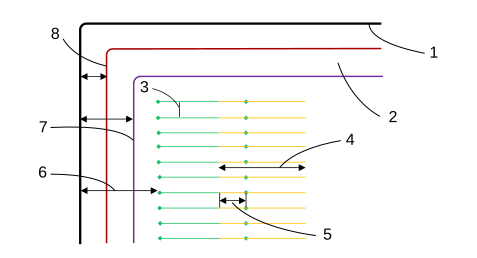
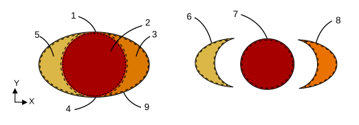
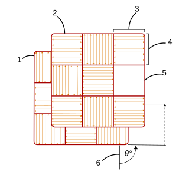
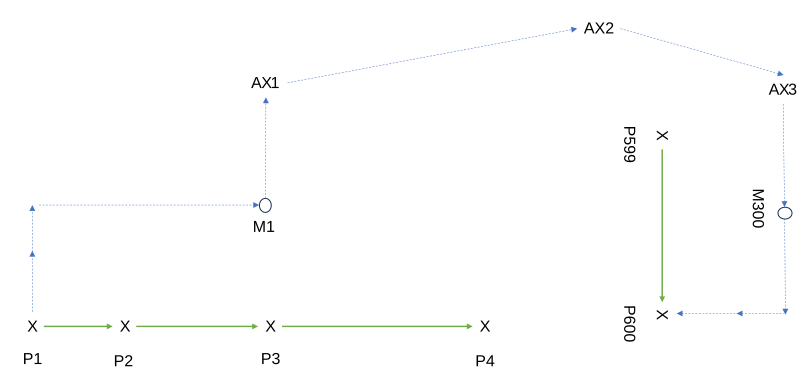
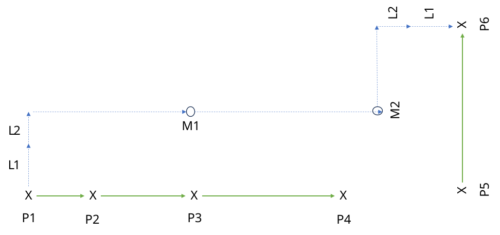
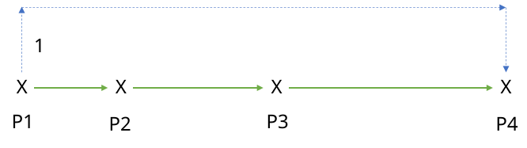
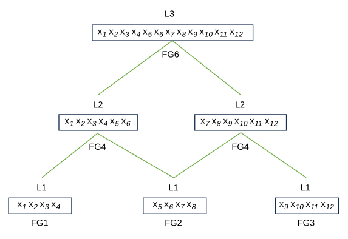
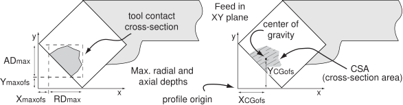
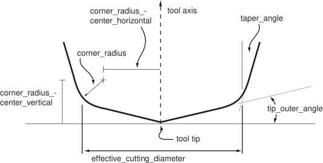

This clause specifies the information required for model based
integrated manufacturing, including information requirements defined
by the ISO 14649 data model for computerized numerical
controllers.
The information requirements are specified as a set of units of
functionality, application objects, and application assertions. These
assertions pertain to individual application objects and to
relationships between application objects. The information
requirements are defined using the terminology of the subject area of
this application protocol.
NOTE 1 A graphical representation of the information
requirements is given in Annex G.
NOTE 2 The information requirements correspond to those
of the activities identified as being within the scope of this
application protocol in Annex F.
NOTE 3 The mapping specification given
in clause 5.1 defines how the
integrated resources and application interpreted constructs are used
to meet the information requirements of this application protocol.
4.2 Units of functionality
4.2.1 General
This subclause specifies the units of functionality for the model
based integrated manufacturing application protocol. This document
specifies the following units of functionality:
The units of functionality and a description of the functions that
each UoF supports are given below. The application objects included in
the UoFs are defined in 4.3,
ISO 14649, or ISO 10303 application modules as indicated below.
4.2.2 Measure
The measure UoF specifies the representation of physical quantities
by its value and its unit, along with the representation of allowable
variation in that quantity.
NOTE 1 The previous edition of this document referenced
application object definitions from ISO 14649-10, extended the
definitions in several places, and defined mappings into the
integrated definitions. These have been replaced by a reference to
equivalent application object definitions and mappings defined by the
documents listed below.
The names of some application objects are changed from the previous
edition. The former Area_measure application object is now
Area_data_element; Length_measure is now Length_data_element;
Mass_measure is now Mass_data_element; Plane_angle_measure is now
Angle_data_element; Pressure_measure is now Pressure_data_element;
Rot_speed_measure is now Frequency_data_element; Speed_measure is now
Velocity_data_element; Time_measure is now Duration; Volume_measure is
now Volume_data_element.
The Value_with_tolerance and Toleranced_length_measure defined by the
previous edition have been replaced by one of three different
application objects depending on their use. Value_with_unit when no
tolerance limits are applied, Value_with_tolerances for values with a
plus/minus limit, and Qualified_numerical_item_with_unit for other
limits. Limit_qualifier, Limits_and_fits, and Plus_minus_value are
now the value_qualifier of Qualified_numerical_item_with_unit, or
Dimension_value_with_limitation when used with dimensions.
NOTE 2 As defined in ISO 14649-10, these measurements do
not explicitly specify a unit. Instead, a default unit is defined for
each quantity (mm for length, degrees for angles, etc). In addition,
only length parameters could be qualified with a tolerance. The
definitions used by this document allow units to be explicitly
specified, allow tolerance qualification for any of the measure types,
and adds a maximum/minimum Limit_qualifier to the types of
qualifications available.
The following application objects are used by the measure UoF, and
shall be as defined by ISO 10303-1054.
Duration;
Value_with_unit.
The following application objects are used by the measure UoF, and
shall be as defined by ISO 10303-1106.
Value_range;
Value_with_tolerances.
The following application objects are used by the measure UoF, and
shall be as defined by ISO 10303-1753.
Angle_data_element;
Area_data_element;
Frequency_data_element;
Length_data_element;
Mass_data_element;
Power_data_element;
Pressure_data_element;
Ratio_data_element;
Velocity_data_element;
Volume_data_element.
The following application object is used by the measure UoF, and
shall be as defined by ISO 10303-1782.
Qualified_numerical_item_with_unit.
4.2.3 Project
The project UoF specifies where to begin interpretation of a
machining program, as well as additional management information about
the machining program.
The following application object is used by the project UoF, and
shall be as defined by ISO 14649-10:
NOTE 1 The name Manufacturing_project is used to avoid a
conflict with the Project definition in ISO 10303-1061.
The following application object is used by the project UoF, and
shall be as defined by ISO 10303-1011.
NOTE 2 The previous edition of this document referenced
the Person_and_address application object definition from ISO
14649-10. This has been replaced by a reference to the equivalent
Person_in_organization application object definition.
Person_in_organization.
4.2.4 Workpiece
The workpiece UoF specifies the mechanical product that is to be
produced by a machining program. This description may include
material, surface condition, features, and the AS-IS and TO-BE shape
of the product.
The following application object is used by the workpiece UoF, and
shall be as defined by ISO 14649-10. This document extends the
following application object with additional information requirements
beyond those specified by ISO 14649-10.
NOTE 1The previous edition of this document referenced
the application object definition for Manufacturing_feature from ISO
14649-10 and defined a mapping into the integrated definitions. This
has been moved to the manufacturing features UoF and replaced by a
reference to the definition to the Manufacturing_feature object
defined by ISO 10303-1814.
The following application objects are used by the workpiece UoF,
and shall be as defined by ISO 10303-1006.
NOTE 2The previous edition of this document included
definitions and mappings for the Property_parameter and
Descriptive_parameter application objects. These have been replaced
by a reference to the Representation_item and
String_representation_item objects. The integrated representation of
this information is unchanged from previous edition of this
document.
Representation_item;
String_representation_item.
The following application object is used by the workpiece UoF, and
shall be as defined by ISO 10303-1026.
NOTE 3The previous edition of this document included
definitions and mappings for the Workpiece_assembly_component
application object. This has been replaced by a reference to the
Next_assembly_usage application object. The integrated representation
of this information is unchanged from previous edition of this
document.
Next_assembly_usage.
The following application object is used by the workpiece UoF, and
shall be as defined by ISO 10303-1030.
NOTE 4The previous edition of this document included
definitions and mappings for the General_property, Part_property, and
Process_property application objects, which extended a Workpiece with
additional information. These have been replaced by a reference to
the Assigned_property application object. The integrated
representation of this information is unchanged from previous edition
of this document. The Process_property name has been reused for an
application object that extends an Executable with additional
information.
Assigned_property.
The following application objects are used by the workpiece UoF,
and shall be as defined by ISO 10303-1110.
NOTE 5The previous edition of this document included
definitions and mappings for the Hardness and Surface_property
application objects. These have been replaced by references to the
Hardness and Surface_condition objects defined in ISO 10303-1110. The
integrated representation of Surface_condition is unchanged from
previous edition of this document. The integrated representation of
Hardness has changed from material_property_representation to
hardness_representation for harmonization with ISO 10303-242.
Hardness;
Surface_condition.
The following application object is used by the workpiece UoF, and
shall be as defined by ISO 10303-1118.
NOTE 6The previous edition of this document included
definitions and mappings for the Numeric_parameter application object.
This has been replaced by a reference to the Numerical_item_with_unit
object. The integrated representation of this information is
unchanged from previous edition of this document.
Numerical_item_with_unit.
The following application objects are used by the workpiece UoF,
and shall be as defined by ISO 10303-1681.
NOTE 7The previous edition of this document included
definitions and mappings for the Material and Material_property
application objects. These have been replaced by references to the
Material_identification and Material_property objects defined in ISO
10303-1110. The integrated representation of this information is
unchanged from previous edition of this document.
Material_identification;
Material_property.
In addition, the following application objects are used by the
workpiece UoF, and shall be as defined by this document:
The manufacturing feature UoF specifies the information necessary to
identify shapes of interest on a mechanical product. These shapes
represent volumes of material that are removed by machining operations
or which result from a series of machining operations. This UoF also
specifies the information necessary to describe a feature using a 2D
profile swept along a path, as well as information describing the top,
bottom, and other boundaries of a feature.
NOTEThe previous edition of this document referenced
application object definitions for the following from ISO 14649-10 and
ISO 14649-12, extended the definitions in several places, and defined
mappings into the integrated definitions. Except as detailed below,
these have been replaced by a reference to equivalent application
object definitions defined by ISO 10303-1814 and ISO 10303-1846. The
mappings for these objects have also been removed from this document
and are now found in ISO 10303-1814 and ISO 10303-1846.
The following application objects are used by the manufacturing
feature UoF, and shall be as defined by ISO 10303-1814.
Angle_taper;
Bevel_gear;
Blind_bottom_condition;
Boss;
Boss_top_condition;
Catalogue_gear;
Catalogue_knurl;
Catalogue_marking;
Catalogue_thread;
Chamfer;
Chamfer_angle;
Circular_boss;
Circular_closed_profile;
Circular_closed_shape_profile;
Circular_cutout;
Circular_offset_pattern;
Circular_omit_pattern;
Circular_path_feature_component;
Circular_pattern;
Closed_profile;
Closed_slot;
Complete_circular_path_feature_component;
Compound_feature;
Compound_feature_element;
Compound_feature_relationship;
Conical_hole_bottom;
Constant_radius_edge_round;
Constant_radius_fillet;
Counterbore_hole;
Countersunk_hole;
Cutout_feature;
Defined_gear;
Defined_marking;
Defined_thread;
Diagonal_knurl;
Diameter_taper;
Diamond_knurl;
Directed_taper;
Direction_element;
Edge_round;
Face_shape_element;
Face_shape_element_relationship;
Fillet;
First_chamfer_offset;
Flat_hole_bottom;
Flat_slot_end_type;
Flat_with_radius_hole_bottom;
Flat_with_taper_hole_bottom;
Gear;
General_boss;
General_closed_profile;
General_cutout;
General_open_profile;
General_outside_profile;
General_path_feature_component;
General_pattern;
General_pocket;
General_pocket_bottom_condition;
General_profile_floor;
General_removal_volume;
General_revolution;
General_rib_top_floor;
General_shape_profile;
General_top_condition;
Groove;
Helical_bevel_gear;
Helical_gear;
Hole;
Instanced_manufacturing_feature;
Knurl;
Linear_path_feature_component;
Linear_profile;
Location_element;
Loop_slot_end_type;
Machining_feature;
Manufacturing_feature;
Manufacturing_feature_group;
Marking_feature;
Multi_axis_feature;
Ngon_profile;
Open_profile;
Open_slot;
Open_slot_end_type;
Outer_diameter;
Outer_diameter_to_shoulder;
Outer_round;
Partial_area_definition;
Partial_circular_path_feature_component;
Partial_circular_profile;
Partial_circular_shape_profile;
Path_element;
Path_feature_component;
Planar_element;
Planar_face;
Planar_pocket_bottom_condition;
Planar_profile_floor;
Planar_rib_top_floor;
Planar_top_condition;
Pocket;
Pocket_bottom_condition;
Profile;
Profile_feature;
Profile_floor;
Protrusion;
Radiused_slot_end_type;
Recess;
Rectangular_boss;
Rectangular_closed_pocket;
Rectangular_closed_profile;
Rectangular_closed_shape_profile;
Rectangular_offset_pattern;
Rectangular_omit_pattern;
Rectangular_open_pocket;
Rectangular_open_shape_profile;
Rectangular_pattern;
Replicate_base;
Replicate_feature;
Revolved_feature;
Revolved_flat;
Revolved_round;
Rib_top;
Rib_top_floor;
Round_hole;
Rounded_end;
Rounded_u_profile;
Second_chamfer_offset;
Second_chamfer_parameter;
Shape_profile;
Slot;
Slot_end_type;
Spherical_cap;
Spherical_hole_bottom;
Spur_gear;
Square_u_profile;
Step;
Straight_bevel_gear;
Straight_knurl;
Tee_profile;
Thread;
Thread_runout;
Through_bottom_condition;
Through_pocket_bottom_condition;
Through_profile_floor;
Transition_feature;
Turned_knurl;
Vee_profile;
Woodruff_slot_end_type.
This document extends the following application objects with
additional information requirements beyond those specified by ISO
10303-1814.
The executable UoF specifies the information necessary to describe
control flow of a machining program as well as the non-machining
actions that may be performed by a numerical control. This includes
sequential, parallel, and conditional control flow, as well as the
logical expressions and variable elements necessary to describe the
conditions for conditional control flow. This UoF also specifies the
information necessary to describe how a mechanical product, products,
or multiple copies thereof are positioned and orientated relative to
any machine tool on which a machining program is to be executed.
The following application objects are used by the executable UoF,
and shall be as defined by ISO 14649-10.
The following application objects are used by the executable UoF,
and shall be as defined by ISO 10303-1526.
NOTEThe previous edition of this document included
definitions and mappings for the expression application objects listed
below. These have been replaced by references to the definitions with
the same names in ISO 10303-1526. The integrated representation of
this information is unchanged from previous edition of this document.
And_expression;
Binary_boolean_expression;
Boolean_expression;
Comparison_equal;
Comparison_expression;
Comparison_greater;
Comparison_greater_equal;
Comparison_less;
Comparison_less_equal;
Comparison_not_equal;
Multiple_arity_boolean_expression;
Not_expression;
Or_expression;
Unary_boolean_expression;
Xor_expression;
4.2.7 Operation
The operation UoF specifies the information necessary to describe
the technology-independent aspects of machining actions that may be
performed by a numerical control.
NOTE This UoF only describes the basic aspects common to
all machining actions. The technology-specific aspects of machining
actions such as milling, drilling, turning, and knurling are described
by the process data for milling UoF
and process data for turning
UoF.
The following application objects are used by the operation UoF,
and shall be as defined by ISO 14649-10.
The toolpath UoF specifies the information necessary to describe
the motion of a cutting tool as either a precalculated movement
trajectory or as a set of motion parameters that may be converted to
an exact movement by a numerical control. This includes the
information necessary to describe movement trajectories relative to
the tip of the cutting tool, the contact point of the cutting tool, or
an axis of a machine, as well as to describe the path and rate of
movement using splines and other curves.
The following application objects are used by the toolpath UoF, and
shall be as defined by ISO 14649-10.
The process data for milling UoF specifies the information
necessary to describe the milling and drilling-specific aspects of
machining actions that may be performed by a numerical control. This
includes the information necessary to describe strategies and process
parameters for milling and drilling.
The following application objects are used by the process data for
milling UoF, and shall be as defined by ISO 14649-11.
The cutting tools for milling UoF specifies the information
necessary to describe the milling and drilling-specific tool
requirements for machining actions.
The following application objects are used by the cutting tools for
milling UoF, and shall be as defined by ISO 14649-111.
The process data for turning UoF specifies the information
necessary to describe the turning-specific aspects of machining
actions that may be performed by a numerical control. This includes
the information necessary to describe strategies and process
parameters for turning.
The following application objects are used by the process data for
turning UoF, and shall be as defined by ISO 14649-12.
The process data for additive manufacturing UoF specifies the
information necessary to describe the additive manufacturing-specific
aspects of machining actions that may be performed by a numerical
control. This includes the information necessary to describe
strategies and process parameters for additive manufacturing.
The following application objects are used by the process data for
additive manufacturing UoF, and shall be as defined by ISO
14649-17.
The process data for powder bed fusion UoF specifies the
information necessary to describe for the numerical control automation
of additive manufacturing processes that use a laser to melt layered
powders into solid, complex 3D parts.
The following application objects are used by the process data for
powder bed fusion UoF, and shall be as defined by this document:
The process data for drill and fill UoF specifies the information
necessary to describe the numerical control automation of processes
that drill holes into assemblies and fill them with fasteners. This
includes the information necessary to describe digital twin state of
a process during execution.
The following application objects are used by the process data for
drill and fill UoF, and shall be as defined by this document:
The broadcast UoF specifies the information necessary to track the
progress of a manufacturing task, including changes to manufacturing
properties by time, location, iteration count, distance and resource
usage.
The following application objects are used by the Broadcast UoF, and shall be as defined by this document:
The geometric dimensioning and tolerancing UoF specifies the
information necessary to describe geometric dimensions, as well as the
allowable variation in those dimensions for the purposes of
manufacturing. In addition, this UoF specifies the information
necessary to describe geometric tolerances with a datum reference,
such as parallelism or perpendicularity, and geometric tolerances
without a datum reference, such as straightness or flatness. This
includes the information necessary to describe single datum
references, common datum references, datum targets, and tolerance
zones.
NOTEThe previous edition of this document included
definitions and mappings for geometric dimension and tolerance
application objects. These have been replaced by a reference to the
geometric dimension and tolerance objects defined by ISO 10303-1050,
ISO 10303-1051, and ISO 10303-1052. The integrated representation of
this information is unchanged from previous edition of this
document.
The following application objects are used by the geometric
dimensioning and tolerancing UoF, and shall be as defined by ISO
10303-1050.
Angle_plus_minus_bounds;
Angular_location;
Angular_size;
Curved_distance;
Curved_size;
Diameter_size;
Dimension_value_with_limitation;
Dimensional_location;
Dimensional_size;
Edge_of_undefined_shape_size;
Geometric_dimension;
Length_plus_minus_bounds;
Limits_and_fits;
Linear_distance;
Machining_feature_size;
Measurement_path;
Plus_minus_bounds;
Radial_size;
Thickness_size;
Tolerance_range.
The following application objects are used by the geometric
dimensioning and tolerancing UoF, and shall be as defined by ISO
10303-1051.
The following application objects are used by the geometric
dimensioning and tolerancing UoF, and shall be as defined by ISO
10303-1052.
General_tolerance_table;
General_tolerances;
Number_of_decimal_places;
Plus_minus_toleranced_datum;
Significant_number_of_digits;
Tolerance_table_cell;
Upper_lower_limit;
Upper_lower_toleranced_datum.
4.2.18 Library reference
The library reference UoF provides the capability and mechanisms by
which references may be made to information in external libraries.
The following application object is used by the library reference
UoF, and shall be as defined by ISO 10303-1129.
NOTE 1The previous edition of this document included
definitions and mappings for the Property_BSU application object.
This has been replaced by a reference to the Plib_property_reference
object.
Plib_property_reference.
The following application object is used by the library reference
UoF, and shall be as defined by ISO 10303-1291.
NOTE 2The previous edition of this document included
definitions and mappings for the Class_BSU and Supplier_BSU
application objects. These have been replaced by a reference to the
Plib_class_reference object.
Plib_class_reference.
The following application object is used by the library reference
UoF, and shall be as defined by ISO 10303-1331.
NOTE 3The previous edition of this document included
definitions and mappings for the Library_part_assignment application
object. This has been replaced by a reference to the definition for
the External_source object.
External_source.
The following application objects are used by the library reference
UoF, and shall be as defined by ISO 10303-1779.
NOTE 4The previous edition of this document included
definitions and mappings for the Externally_defined_representation and
Library_property_value application objects. These have been replaced
by a reference to the definition for the
Externally_defined_representation and External_representation_item
objects.
External_representation_item;
Externally_defined_representation.
4.2.19 Management
The management UoF specifies the information necessary to describe
the management aspects of a mechanical product or machining
program. This includes the information necessary to describe the
approval process, security classifications, persons and dates.
The following application object is used by the management UoF, and
shall be as defined by this document.
The following application objects are used by the management UoF,
and shall be as defined by ISO 10303-1012.
NOTE 1The previous edition of this document included
application object definitions and mappings for the following four
approval application objects. These have been replaced by a reference
to the objects with the same names defined by ISO 10303-1012. The
integrated representation of this information is unchanged from
previous edition of this document.
Approval;
Approval_relationship;
Approval_status;
Approving_person_organization.
The following application object is used by the management UoF, and
shall be as defined by ISO 10303-1013.
NOTE 2The previous edition of this document included
application object definitions and mappings for Assigned_organization
and Assigned_person. These have been replaced by a reference to the
Organization_or_person_in_organization_assignment object defined by
ISO 10303-1013. The integrated representation of this information is
unchanged from previous edition of this document.
The following application object is used by the management UoF, and
shall be as defined by ISO 10303-1014.
NOTE 3The previous edition of this document included
application object definitions and mappings for Assigned_date and
Assigned_time. These have been replaced by a reference to the
Date_or_date_time_assignment application defined by ISO 10303-1014.
The integrated representation of this information is unchanged from
previous edition of this document.
Date_or_date_time_assignment.
The following application objects are used by the management UoF,
and shall be as defined by ISO 10303-1015.
NOTE 4The previous edition of this document included
application object definitions and mappings for the following two
security classification application objects. These have been replaced
by a reference to the objects with the same names defined by ISO
10303-1015. The integrated representation of this information is
unchanged from previous edition of this document.
Security_classification;
Security_classification_assignment.
4.3 Application objects
4.3.1 General
This subclause specifies the application objects for the
model based integrated manufacturing application protocol. Each
application object is an atomic element that embodies a unique
application concept and contains attributes specifying the data
elements of the object. The application objects and their definitions
are given below.
NOTE For application objects defined by ISO 14649, a
normative reference to the originating document is provided, as well
as an informative note containing the ISO 14649 EXPRESS description.
Full definitions are provided for all objects not defined in the ISO
14649 documents as well as extensions to the application objects
defined in the ISO 14649 documents.
The Adaptive_control application object shall be as defined by ISO
14649-11.
NOTE The ISO 14649 EXPRESS description for
Adaptive_control is shown below. Refer to ISO 14649-11 for the
complete definition and explanation of usage.
An Allowable_drill_group application object is a type of
Drill_and_fill_group that specifies a drill that may be used to
manufacture a collection of holes.
The data associated with a Allowable_drill_group are the
following:
allowed_drill;
precedence.
NOTE The EXPRESS description for the Allowable_drill_group
application object is shown below.
ENTITY Allowable_drill_group -- ADDED BY 10303-238e4
SUBTYPE OF (Drill_and_fill_group);
allowed_drill : Identifier;
precedence : OPTIONAL NUMBER;
END_ENTITY;
4.3.5.1 allowed_drill
The allowed_drill identifies a drill that may be used to manufacture holes.
4.3.5.2 precedence
The precedence specifies a numeric value for the identified drill.
When multiple drills are available, the one with the lowest precedence
value shall be preferred.
An Allowable_nose_group application object is a type of
Drill_and_fill_group that specifies a robot end effector that may be
used to perform drilling operations and insert fasteners for a
collection of features.
The data associated with a Allowable_nose_group are the
following:
allowed_nose;
precedence.
NOTE The EXPRESS description for the Allowable_nose_group
application object is shown below.
ENTITY Allowable_nose_group -- ADDED BY 10303-238e4
SUBTYPE OF (Drill_and_fill_group);
allowed_nose : Identifier;
precedence : OPTIONAL NUMBER;
END_ENTITY;
4.3.6.1 allowed_nose
The allowed_nose identifies an end effector that may be used to to
perform drilling operations and insert fasteners.
4.3.6.2 precedence
The precedence specifies a numeric value for the identified end
effector. When multiple end effectors are available, the one with the
lowest precedence value shall be preferred.
An Allowable_robot_group application object is a type of
Drill_and_fill_group that specifies a robot that may be used to
perform manufacturing operations for a collection of features.
The data associated with a Allowable_robot_group are the
following:
allowed_robot;
precedence.
NOTE The EXPRESS description for the Allowable_robot_group
application object is shown below.
ENTITY Allowable_robot_group -- ADDED BY 10303-238e4
SUBTYPE OF (Drill_and_fill_group);
allowed_robot : Identifier;
precedence : OPTIONAL NUMBER;
END_ENTITY;
4.3.7.1 allowed_robot
The allowed_robot specifies a robot that may be used to to
perform manufacturing operations.
4.3.7.2 precedence
The precedence specifies a numeric value for the identified robot.
When multiple robots are available, the one with the lowest precedence
value shall be preferred.
An Am_application_feature application object is a type of
Am_pbf_region that describes a volume for application defined
processing.
NOTE 1 A CAD system defines a feature on the model. An AM
planning system then projects the volume onto the slices to create
regions. The Am_twod_operation selected by the identification of the
region is then used to contour and fill that region.
NOTE 2 The EXPRESS description for the Am_application_feature
application object is shown below.
ENTITY Am_application_region -- ADDED BY 10303-238e4
SUBTYPE OF (Am_pbf_region);
END_ENTITY;
An Am_application_identification application object is a type of
Am_pbf_identification that identifies a feature or region for
application defined processing.
NOTE The EXPRESS description for the Am_application_identification
application object is shown below.
ENTITY Am_application_identification -- ADDED BY 10303-238e4
SUBTYPE OF (Am_pbf_identification);
END_ENTITY;
An Am_application_region application object is a type of
Am_pbf_region that describes an area that has been selected for
application defined processing.
NOTE The EXPRESS description for the Am_application_region
application object is shown below.
ENTITY Am_application_region -- ADDED BY 10303-238e4
SUBTYPE OF (Am_pbf_region);
END_ENTITY;
An Am_composite_curve application object is a type of
Composite_curve that describes a boundary which is described by
Am_internal_ or Am_external_composite_curve_segments.
NOTE The EXPRESS description for the Am_composite_curve
application object is shown below.
ENTITY Am_composite_curve -- ADDED BY 10303-238e4
SUBTYPE OF (composite_curve);
END_ENTITY;
The Am_compound_feature application object shall be as defined by
ISO 14649-17.
NOTE The ISO 14649 EXPRESS description for
Am_compound_feature is shown below. Refer to ISO 14649-17 for the
complete definition and explanation of usage.
ENTITY Am_compound_feature
SUBTYPE OF (Am_feature);
its_am_features: SET [2:?] OF Am_feature;
END_ENTITY;
An Am_core_feature application object is a type of Am_pbf_feature
that describes a volume where the core, or main manufacturing process
is to be applied.
NOTE The EXPRESS description for the Am_core_feature
application object is shown below.
ENTITY Am_core_feature -- ADDED BY 10303-238e4
SUBTYPE OF (Am_pbf_feature);
END_ENTITY;
An Am_core_identification application object is a type of
Am_pbf_identification that identifies a feature or region where the
core, or main manufacturing process is to be applied.
NOTE The EXPRESS description for the Am_core_identification
application object is shown below.
ENTITY Am_core_identification -- ADDED BY 10303-238e4
SUBTYPE OF (Am_pbf_identification);
END_ENTITY;
An Am_downskin_feature application object is a type of
Am_pbf_feature that describes a volume where melting to the material
must be limited because of a void below the skin.
NOTE The EXPRESS description for the Am_downskin_feature
application object is shown below.
ENTITY Am_downskin_feature -- ADDED BY 10303-238e4
SUBTYPE OF (Am_pbf_feature);
END_ENTITY;
An Am_downskin_identification application object is a type of
Am_pbf_identification that identifies a feature where melting to the
material must be limited because of a void below the skin. The
geometric parameters require that if the dot product of the face
normal at a surface point, and the Z axis, exceeds a given angle then
the surface point is in the region.
The data associated with a Am_downskin_identification are the
following:
downskin_angle;
downskin_thickness.
NOTE The EXPRESS description for the Am_downskin_identification
application object is shown below.
ENTITY Am_downskin_identification -- ADDED BY 10303-238e4
SUBTYPE OF (Am_pbf_identification);
downskin_angle : Angle_data_element;
downskin_thickness : Layer_count;
END_ENTITY;
TYPE Layer_count = INTEGER; END_TYPE;
4.3.19.1 downskin_angle
The downskin_angle specifies the high-value limit angle for any
slope classified as this type of skin.
4.3.19.2 downskin_thickness
The downskin_thickness specifies the the number of layers above the
surface where this strategy shall apply.
An Am_downskin_region application object is a type of Am_pbf_region
that describes an area where melting to the material is to be reduced
because of a void below the skin.
NOTE The EXPRESS description for the Am_downskin_region
application object is shown below.
ENTITY Am_downskin_region -- ADDED BY 10303-238e4
SUBTYPE OF (Am_pbf_region);
END_ENTITY;
An Am_external_composite_curve_segment application object is a type
of Composite_curve_segment that describes a curve segment that does
not adjoin any curve segment of another Am_composite_curve.
NOTE The EXPRESS description for the Am_external_composite_curve_segment
application object is shown below.
ENTITY Am_external_composite_curve_segment -- ADDED BY 10303-238e4
SUBTYPE OF (Composite_curve_segment);
--An external segment is on the outer boundary of the slice
END_ENTITY;
The Am_feature application object shall be as defined by ISO
14649-17. This document adds the following information
requirements.
The data associated with a Am_feature are the following:
all of the data defined by ISO 14649-17, as modified below for the
its_material attribute.
NOTE This document modifies the definition of Am_feature
in ISO 14649-17 to add an its_material attribute. The EXPRESS
description for Am_feature, as adapted by this document, is shown
below.
ENTITY Am_feature
ABSTRACT SUPERTYPE OF (ONEOF (Am_compound_feature,
Am_simple_feature, Am_gradient_feature, Am_heterogenuous_feature))
SUBTYPE OF (Manufacturing_feature);
primary_colour: OPTIONAL Colour;
INVERSE
-- 10303-238: material is used with gradient_feature. As with
-- other places in the ARM, change to inverse to accommodate the
-- definition of Material_identification.
its_material: SET[0:1] OF Material_identification FOR items;
END_ENTITY;
4.3.22.1 its_material
The its_material parameter defined by ISO 14649-17 as an inherited
value shall be represented by the set of Material_identification
application objects with an items parameter that contains the
Am_feature.
An Am_feature_intersection application object is a type of
Transition_feature that describes a boundary between two
features. Multiple boundaries may exist. Each one is described by a
different feature intersection.
EXAMPLE An AM_feature_intersection may define the
boundary where the technology of a path changes from a downskin or low
heat region, to a core or regular heat region.
The data associated with a Am_feature_intersection are the
following:
feature_a;
face_a;
feature_b;
face_b;
intersection_curve.
NOTE The EXPRESS description for the Am_feature_intersection
application object is shown below.
ENTITY Am_feature_intersection -- ADDED BY 10303-238e4
SUBTYPE OF (transition_feature);
feature_a : Am_pbf_feature;
face_a : advanced_face;
feature_b : Am_pbf_feature;
face_b : advanced_face;
intersection_curve : SET [1:?] OF composite_curve;
--face_a shall belong to region_a, and face_b shall belong to region_b
--intersection_curve shall be on face_a and face_b
END_ENTITY;
4.3.23.1 am_feature_intersection to am_pbf_feature (as feature_a)
The feature_a specifies the closed shell describing the first
feature.
4.3.23.2 face_a
The face_a specifies a face in the boundary of the first closed
shell that shares an area with a face in the boundary of the second
shell.
4.3.23.3 am_feature_intersection to am_pbf_feature (as feature_b)
The feature_b specifies the closed shell describing the second
feature.
4.3.23.4 face_b
The face_b specifies a face in the boundary of the second closed
shell that shares an area with a face in the boundary of the first
shell.
4.3.23.5 intersection_curve
The intersection_curve specifies a composite curve around the
boundary of the shared area with counter clockwise curves describing
outer boundaries and clockwise curves for inner boundaries.
The Am_gradient_feature application object shall be as defined by
ISO 14649-17. This document adds the following information
requirements.
The data associated with a Am_feature are the following:
all of the data defined by ISO 14649-17, as modified below for the
primary_surface, secondary_surface, secondary_colour, and
secondary_material attributes;
primary_feature.
ENTITY Am_gradient_feature
SUBTYPE OF (Am_feature);
-- 10303-238: change to relate two features. The attributes of the
-- secondary feature give the original secondary_* attributes. The
-- primary_shape_representation of each feature provides the
-- surfaces.
-- primary_surface: elementary_surface;
-- secondary_surface: elementary_surface;
-- secondary_colour: OPTIONAL Colour;
-- secondary_material: OPTIONAL material;
secondary_feature: Am_feature;
its_construction: OPTIONAL Am_construction;
END_ENTITY;
4.3.24.1 primary_surface
The primary_surface parameter defined by ISO 14649-17 shall be
represented by the inherited primary_shape_representation attribute.
4.3.24.2 secondary_surface
The secondary_surface parameter defined by ISO 14649-17 shall be
represented by the inherited primary_shape_representation attribute of
the secondary_feature.
4.3.24.3 secondary_colour
The secondary_colour parameter defined by ISO 14649-17 shall be
represented by the inherited primary_colour attribute of the
secondary_feature.
4.3.24.4 secondary_material
The secondary_material parameter defined by ISO 14649-17 shall be
represented by the inherited its_material attribute of the
secondary_feature.
4.3.24.5 secondary_feature
The secondary_feature specifies an Am_feature which describes the
end of the gradient.
See Am_gradient_feature
to Am_feature for the application assertion.
The Am_heterogenuous_atom application object shall be as defined by
ISO 14649-17. This document adds the following information
requirements.
The data associated with a Am_heterogenuous_atom are the following:
all of the data defined by ISO 14649-17, as modified below for the
its_material attribute.
NOTE The ISO 14649 EXPRESS description for
Am_heterogenuous_atom, as adapted by this document, is shown
below. Refer to ISO 14649-17 for the complete definition and
explanation of usage.
ENTITY Am_heterogenuous_atom;
local_coord_axes: Axis_placement_3d;
-- its_material: material;
its_colour: Colour;
its_construction: OPTIONAL Am_construction;
governing_function: Function_application;
INVERSE
-- 10303-238: As with other places in the ARM, change to inverse to
-- accommodate the definition of Material_identification.
its_material: SET[0:1] OF Material_identification FOR items;
END_ENTITY;
4.3.25.1 its_material
The its_material parameter defined by ISO 14649-17 shall be represented
by the set of Material_identification application objects with an
items parameter that contains the Am_heterogenuous_atom.
The Am_heterogenuous_feature application object shall be as defined
by ISO 14649-17.
NOTE The ISO 14649 EXPRESS description for
Am_heterogenuous_feature is shown below. Refer to ISO 14649-17 for
the complete definition and explanation of usage.
ENTITY Am_heterogenuous_feature
SUBTYPE OF (Am_feature);
items: SET [1:?] OF Am_heterogenuous_atom;
END_ENTITY;
An Am_internal_composite_curve_segment application object is a type
of Composite_curve_segment that describes a curve segment that does
adjoins a curve segment of another Am_composite_curve.
NOTE The EXPRESS description for the Am_internal_composite_curve_segment
application object is shown below.
ENTITY Am_internal_composite_curve_segment -- ADDED BY 10303-238e4
SUBTYPE OF (composite_curve_segment);
--An internal segment is shared by two features on the same slice.
END_ENTITY;
The Am_machine_functions application object shall be as defined by
ISO 14649-17. This document adds the following information
requirements.
The data associated with a Am_machine_functions are the following:
all of the data defined by ISO 14649-17, as modified below for the
functions attribute.
NOTE The ISO 14649 EXPRESS description for
Am_machine_functions, as adapted by this document, is shown below.
Refer to ISO 14649-17 for the complete definition and explanation of
usage.
ENTITY Am_machine_functions
SUBTYPE OF (Machine_functions);
-- 10303-238: functions moved to supertype as other_functions for
-- consistent handling across technologies
-- functions: OPTIONAL SET [1:?] OF Representation_item;
END_ENTITY;
4.3.29.1 functions
The functions parameter defined by ISO 14649-17 shall be replaced
by the other_functions parameter defined by the Machine_functions
application object.
An Am_machining_feature application object is a type of
Am_pbf_feature that describes a feature that will be removed by a
subsequent machining operation.
EXAMPLE A drill hole.
NOTE 1 A CAD system defines a feature on the model. An AM
planning system then projects the volume onto the slices to create
regions. The Am_twod_operation selected by the identification of the
region is then used to contour and fill that region.
NOTE 2 The EXPRESS description for the Am_machining_feature
application object is shown below.
ENTITY Am_machining_feature -- ADDED BY 10303-238e4
SUBTYPE OF (Am_pbf_feature);
END_ENTITY;
An Am_machining_identification application object is a type of
Am_pbf_identification that identifies a feature that will be removed
by a subsequent machining operation, for example, a drill hole.
NOTE 1 Removal volumes may be fused more lightly to speed
the manufacturing.
NOTE 2 The EXPRESS description for the Am_machining_identification
application object is shown below.
ENTITY Am_machining_identification -- ADDED BY 10303-238e4
SUBTYPE OF (Am_pbf_identification);
END_ENTITY;
An Am_machining_region application object is a type of
Am_pbf_region that describes a feature that will be removed by a
subsequent machining operation.
EXAMPLE A drill hole.
NOTE The EXPRESS description for the Am_machining_region
application object is shown below.
ENTITY Am_machining_region -- ADDED BY 10303-238e4
SUBTYPE OF (Am_pbf_region);
END_ENTITY;
The Am_oned_operation application object shall be as defined by
ISO 14649-17.
NOTE The ISO 14649 EXPRESS description for
Am_oned_operation is shown below. Refer to ISO 14649-17 for the
complete definition and explanation of usage.
ENTITY Am_oned_operation
SUBTYPE OF (Am_operation);
approach: Approach_retract_strategy;
retract: Approach_retract_strategy;
END_ENTITY;
An Am_oned_pbf_contour_operation application object is a type of
Am_oned_pbf_operation that defines a boundary contour path for the
laser. A contour path fuses a border on an edge of the part.
The data associated with a Am_oned_pbf_contour_operation are the
following:
contour_offset;
contour_direction.
NOTE 1 The EXPRESS description for the Am_oned_pbf_contour_operation
application object is shown below.
ENTITY Am_oned_pbf_contour_operation -- ADDED BY 10303-238e4
SUBTYPE OF (Am_oned_pbf_operation);
contour_offset : Length_data_element;
contour_direction : OPTIONAL Contour_polarity;
(*
DERIVE
master : OPTIONAL Am_oned_pbf_contour_operation;
discontinuous : OPTIONAL BOOLEAN;
contour_path: toolpath_list := SELF\Operation.its_toolpath;
WHERE
WR1: NOT EXISTS (master) OR contour_offset = master.contour_offset;
WR2: NOT EXISTS (master) OR contour_direction = master.contour_direction;
*)
END_ENTITY;
TYPE Contour_polarity = ENUMERATION OF (
alternate, clockwise, counter_clockwise
);
END_TYPE;
NOTE 2 A contour will be discontinuous if it is not
included in other regions that are also on the part boundary.
NOTE 3 The master of a region is determined by the
identification of the region. If one exists, then this contour
describes process information that applies to the paths of this parent
while they are in this region.
4.3.34.1 contour_offset
The contour_offset specifies the offset of the contour from the
boundary of the part. If the offset is negative then the contour is
outside the part boundary.
4.3.34.2 contour_direction
The contour_direction specifies the direction in which the contour
is to be scanned. The contour shall alternate directions between
layers unless a value of clockwise or counter clockwise is given.
An Am_oned_pbf_hatch_operation application object is a type of
Am_oned_pbf_infill_operation that defines how to fills an area with
hatches.
The data associated with a Am_oned_pbf_hatch_operation are the
following:
hatch_space;
hatch_style.
NOTE 1 The EXPRESS description for the Am_oned_pbf_hatch_operation
application object is shown below.
ENTITY Am_oned_pbf_hatch_operation -- ADDED BY 10303-238e4
SUBTYPE OF (Am_oned_pbf_infill_operation);
hatch_space : Length_data_element;
hatch_style : OPTIONAL Hatch_type;
(*
DERIVE
master : OPTIONAL Am_oned_pbf_hatch_operation;
hatch_path: toolpath_list := SELF\Operation.its_toolpath;
WHERE
WR1: NOT EXISTS (master) OR hatch_space = master.hatch_space;
WR2: NOT EXISTS (master) OR hatch_style = master.hatch_style;
*)
END_ENTITY;
TYPE Hatch_type = ENUMERATION OF (snake, raster_left, raster_right);
END_TYPE;
NOTE 2 The master of a region is determined by the
identification of the region. If one exists, then this contour
describes process information that applies to the paths of this parent
while they are in this region.
4.3.35.1 hatch_space
The hatch_space specifies the distance between two consecutive
parallel paths in the hatch.
4.3.35.2 hatch_style
The hatch_style specifies the method for moving the beam between
the hatch scan paths. The default is snake.
snake, the hatch paths alternate directions;
raster_left, the hatch paths are all in the same direction starting from the left;
raster_right, the hatch paths are all in the same direction starting from the right.

Key
1 Part Border
2 Each contour can have a unique Power, Speed and Offset
An Am_oned_pbf_infill_operation application object is a type of
Am_oned_pbf_operation that defines how to fill the area defined by a
region with scan paths.
The data associated with a Am_oned_pbf_infill_operation are the
following:
offset.
NOTE The EXPRESS description for the Am_oned_pbf_infill_operation
application object is shown below.
ENTITY Am_oned_pbf_infill_operation -- ADDED BY 10303-238e4
ABSTRACT SUPERTYPE
SUBTYPE OF (Am_oned_pbf_operation);
offset : Length_data_element;
END_ENTITY;
4.3.36.1 offset
The offset specifies the offset for any scan paths in the infill
that start at a part boundary. If the offset is negative then the scan
paths begin and end beyond the boundary.
The Am_operation application object shall be as defined by ISO
14649-17. This document adds the following information
requirements.
The data associated with a Am_operation are the following:
all of the data defined by ISO 14649-17, as modified below for the
its_support_geometry attribute.
NOTE The ISO 14649 EXPRESS description for Am_operation,
as adapted by this document, is shown below. Refer to ISO
14649-17 for the complete definition and explanation of usage.
ENTITY Am_operation
ABSTRACT SUPERTYPE OF (ONEOF (Am_twod_operation, Am_oned_operation))
SUBTYPE OF (Operation);
machine_functions: am_machine_functions;
-- 10303-238: moved to am_workingstep to match other shape handling.
-- its_support_geometry: OPTIONAL advanced_brep_shape_representation;
END_ENTITY;
4.3.38.1 its_support_geometry
The its_support_geometry parameter defined by ISO 14649-17 shall be
replaced by the its_support_geometry parameters defined by the
Am_workingstep application object.
An Am_pbf_feature application object is a type of Am_feature that
describes a volume in a model where a selected manufacturing process
is to be applied. Features may be defined in a CAD system for volumes
that require special processing.
Key
1 Downskin in original position
2 Downskin feature (after vertical displacement)
3 Core (after removal of downskin feature)
Figure 5 — Additive manufacturing PBF feature
The data associated with a Am_pbf_feature are the
following:
process;
shell.
NOTE The EXPRESS description for the Am_pbf_feature
application object is shown below.
ENTITY Am_pbf_feature -- ADDED BY 10303-238e4
SUPERTYPE OF (ONEOF (Am_core_feature, Am_upskin_feature,
Am_downskin_feature, Am_support_feature, Am_application_feature,
Am_machining_feature))
SUBTYPE OF (Am_feature);
process : Am_pbf_identification;
shell : closed_shell;
END_ENTITY;
4.3.39.1 am_pbf_feature to am_pbf_identification (as process)
The process specifies the identification of the process used to
fill regions in this feature.
4.3.39.2 shell
The shell specifies a closed shell of faces describing the boundary
of the volume on the feature.
An Am_pbf_identification application object defines how to identify
the manufacturing process to fill a region. The identification may
take place externally in a CAD system, or internally in the planning
system.
The data associated with a Am_pbf_identification are the
following:
id;
description;
small_area_limit;
large_area_limit;
precedence;
parent.
NOTE The EXPRESS description for the Am_pbf_identification
application object is shown below.
The id specifies a word or group of words which identify the process.
4.3.40.2 description
The description specifies a description of the process.
EXAMPLE "shallow overhang" or "steep overhang".
4.3.40.3 small_area_limit
The small_area_limit specifies an area. A region with an area
smaller than this limit shall use the process of its neighbor.
If
there are two neighbors then the smallest shall be chosen.
4.3.40.4 large_area_limit
The large_area_limit specifies an area value. A region with an
area larger than this limit shall be ignored as too large for this
process.
NOTE The issue may be corrected by changing the settings
of the region, such as reducing downskin area by decreasing the
downskin angle.
4.3.40.5 precedence
The precedence specifies a numeric rank for the process. If
multiple processes are possible, then the one with the highest
precedence shall be used.
4.3.40.6 am_pbf_identification to am_pbf_identification (as parent)
The parent specifies an enclosing process. Regions with this
identification are subsidiaries of this parent and shall apply their
process parameters to the infill and contour strategies of the parent.
EXAMPLE An upskin region may use the same striping
parameters as the core, but reduce the laser power while they are in
its area.
An Am_pbf_infill_management_strategy application object is a type
of Am_pbf_management_strategy that defines how to manage contours and
infills across multiple regions.
The data associated with a Am_pbf_infill_management_strategy are the
following:
reverse_columns;
reverse_rows;
maximum_time_between_adjacent;
minimum_time_between_adjacent;
restriction_high_angle;
restriction_low_angle.
NOTE 1 The EXPRESS description for the Am_pbf_infill_management_strategy
application object is shown below.
The following algorithm shall be used to manage contours that apply
to multiple regions of a slice.
For each region determine the parent (a region may be its own
parent);
Run the contour using the process parameters defined by the
parent;
While the contour is in this region use the locally defined
technology;
If there is no technology defined then use skywriting to go to the
next region.
EXAMPLE 1 Contours are defined by Am_pbf_twod_operations
for the pillar and core region, and no contour path is defined for the
downskin regions.
The following algorithm shall be used to manage infills that apply
to multiple regions of a slice.
Consolidate each region into its parent (a region may be its own
parent);
Divide the parent into stripes or tiles with the center of a
"keystone" being on the origin;
Remove tiles and stripes that have no area inside the region
boundary;
For a stripe start with the left most stripe or column;
For a tile region start with the leftmost island on the bottom
row;
For a tile, increment the starting rotation of each row by the
y_direction_increment and the starting rotation of each column by the
x_direction_increment;
Repeat the increment for a tile if the direction conflicts with
the gas flow restrictions. Repeat the theta_interlayer_rotation if the
stripes of a layer conflict with the gas flow;
Reduce the length of any path that crosses an edge boundary by the
hatch offset, and increase the length of any path that crosses into a
tile or stripe of the same parent region by the hatch overlap;
Increase the length of any path that crosses into another parent
by the region overlap;
While the infill is in a region, use the technology defined for
that region.
EXAMPLE 2 The pillar model uses striping for all
regions. The core region is the parent. The laser power is reduced in
the Am_pbf_infill_operations for the pillar and downskin regions.
NOTE 2 The order of execution for the tiles, stripes and
regions is not defined by this algorithm.
4.3.41.1 reverse_columns
The reverse_columns specifies whether the striping and tiling
algorithm shall start from the right or the left. If reverse_columns
is true start the striping and tiling algorithm from the right. If
reverse_columns is false or unspecified, start the striping and tiling
algorithm from the left.
NOTE The left has the lowest value of X in the coordinate
system of the slice.
4.3.41.2 reverse_rows
The reverse_rows specifies
The reverse_rows specifies whether the striping and tiling
algorithm shall start from the top or the bottom. If reverse_rows
is true start the striping and tiling algorithm from the top. If
reverse_rows is false or unspecified, start the striping and tiling
algorithm from the bottom.
NOTE The bottom has the lowest value of Y in the coordinate
system of the slice.
4.3.41.3 maximum_time_between_adjacent
The maximum_time_between_adjacent specifies the maximum time gap
allowed between hatching of adjacent islands or stripes.
NOTE After this time the material may be too cold.
4.3.41.4 minimum_time_between_adjacent
The minimum_time_between_adjacent specifies the minimum time gap
allowed between hatching of adjacent islands or stripes.
NOTE Before this time the material may be too hot.
4.3.41.5 restriction_high_angle
The restriction_high_angle specifies the maximum angle of the
direction of the gas flow that scan paths shall not to be filled
within. Islands or stripes that will make paths within this angle
shall increment their scan direction until an infill direction is
computed that does not violate the angle restriction.
4.3.41.6 restriction_low_angle
The restriction_low_angle specifies the minimum angle of the
direction of the gas flow that scan paths shall not to be filled
within.
The coating_speed specifies the speed that shall be used for
coating when adding a new layer of material onto the part.
4.3.42.2 recoater_return_speed
The recoater_return_speed specifies the speed that shall be used
for returning the coater to the start position.
NOTE If the coating time differs from an assumed time,
then there may be more or less cooling between layers.
4.3.42.3 minimum_time_between_layers
The minimum_time_between_layers specifies the minimum time between
laser on of layer N, to laser-on of layer N+1.
NOTE The minimum time includes scanning. If the scanning
and coating finishes in less then this minimum, then there should be a
pause after coating before the scanning process begins again.
4.3.42.4 plate_temperature
The plate_temperature specifies specifies the temperature for the
build plate that shall be achieved before the process begins, and
shall be maintained during the process.
4.3.42.5 plate_thickness
The plate_thickness specifies the thickness of the plate.
4.3.42.6 gas_rate
The gas_rate specifies the specified rate for the gas flow. The
rate may be specified as a velocity, or as the flow volume within the
chamber.
4.3.42.7 gas_direction
The gas_direction specifies the direction in which the gas shall flow.
4.3.42.8 am_pbf_machine_functions to material (as gas_type)
The gas_type specifies a material definition for the composition of
the gas.
4.3.42.9 am_pbf_machine_functions to material (as feedstock_definition)
The feedstock_definition specifies the material definition of the
powder used for the manufacturing.
An Am_pbf_management_strategy application object describes how to
manage a powder bed fusion process.
The following algorithm shall be used.
Select the models to be fused;
Place the models onto a build plate;
Optionally, define upskins, downskins, application, support and machining features;
Select an appropriate fusion process for each feature by assigning an identification
Optionally, save the result as a CAD model for later processing.
EXAMPLE A model may contain ten support pillars that use
three kinds of processes. The ten support pillars become ten instances
of the pbf_support_feature with the names Pillar 1 thru Pillar 10. The
three types of pillars become three instances of
Am_support_identification called "fat pillar", "thin pillar" and
"regular pillar". The Pillar 1 is identified as a "fat pillar", Pillar
6 and 9 are identified as "thin pillars", and the rest are identified
as "regular pillars".
NOTE The EXPRESS description for the Am_pbf_management_strategy
application object is shown below.
ENTITY Am_pbf_management_strategy; -- ADDED BY 10303-238e4
END_ENTITY;
An Am_pbf_operation application object is a type of Am_operation
that describes how to generate scan paths for Powder Bed Fusion (PBF)
machines. Using subtypes, the object describes how to slice a part
into layers (3D), how to divide a layer into regions (2D), and how to
fill a region with hatches and contours (1D). Machine functions and
technology in the AM_pbf_operation then define how to fuse the
contours and hatches to make a layer and build a part.
NOTE The EXPRESS description for the Am_pbf_operation
application object is shown below.
ENTITY Am_pbf_operation -- ADDED BY 10303-238e4
ABSTRACT SUPERTYPE OF (ONEOF (Am_oned_pbf_operation, Am_twod_pbf_operation, Am_threed_pbf_operation))
SUBTYPE OF (Am_operation);
SELF\Am_operation.machine_functions: OPTIONAL Am_pbf_machine_functions;
SELF\Am_operation.its_technology: OPTIONAL Am_pbf_technology;
END_ENTITY;
An Am_pbf_region application object is a type of
General_closed_profile that describes a boundary for a region on a
slice. A process selected for the region may be used to define infills
and contours for the areas in the region.
The data associated with a Am_pbf_region are the
following:
slice;
process;
feature.
NOTE The EXPRESS description for the Am_pbf_region
application object is shown below.
ENTITY Am_pbf_region -- ADDED BY 10303-238e4
SUPERTYPE OF (ONEOF (Am_core_region, Am_upskin_region, Am_downskin_region,
Am_support_region, Am_application_region, Am_machining_region, Am_spike_region,
Am_thin_wall_region))
SUBTYPE OF (General_closed_profile);
slice : Am_pbf_slice_number;
process : Am_pbf_identification;
feature : OPTIONAL Am_feature;
END_ENTITY;
TYPE Am_pbf_slice_number = NUMBER; END_TYPE;
4.3.45.1 slice
The slice specifies the slice that contains this 2D region.
4.3.45.2 am_pbf_region to am_pbf_identification (as process)
The process specifies the process selected to fill this 2D region.
4.3.45.3 am_pbf_region to am_feature (as feature)
The feature specifies the feature definition on the product model
that corresponds to this 2D region on the slice. The feature shall be
specified if the region is derived from a volume identified by a CAD
system.
Key
1 Upskin
2 Downskin
3 Build Plate
4 Slice Boundary
5 Core Region
6 Downskin Region
7 Upskin Region
Figure 6 — Additive manufacturing regions on a slice
An Am_pbf_region_management_strategy application object is a type
of Am_pbf_management_strategy that defines how to manage the division
of a slice into regions.
The data associated with a Am_pbf_region_management_strategy are the
following:
compute_downskin;
compute_upskin;
compute_spike;
compute_thin_wall.
NOTE 1 The EXPRESS description for the Am_pbf_region_management_strategy
application object is shown below.
The following algorithm shall be used to divide a slice into regions.
Slice the model, and project the features onto regions on the
slices;
If upskins or downskins are to be found by geometric analysis,
then compute areas for those regions;
Identify the process selected for each region;
Fill the region with the contours and infills defined by the
Am_twod_operation selected for the process;
If the contour offsets of the Am_twod_operation cannot fit into
areas, and spikes and thin walls are to be computed, then make
additional regions for these spikes and thin walls.
NOTE 2 A model containing multiple types of support
pillars may contain two kinds of downskins, and one kind of upskin. A
slice in the model contains one of the downskins, and one pillar. The
remainder of the slice is the core region, for a total of three
regions on this slice.
4.3.46.1 compute_downskin
The compute_downskin specifies whether to compute downskin regions
using geometric analysis. If compute_downskin is true, the downskin
regions shall be computed using geometric analysis. If
compute_downskin is false or unspecified, they may not.
4.3.46.2 compute_upskin
The compute_upskin specifies whether to compute upskin regions
using geometric analysis. If compute_upskin is true, the upskin
regions shall be computed using geometric analysis. If compute_upskin
is false or unspecified, they may not.
4.3.46.3 compute_spike
The compute_spike specifies whether to compute spike regions
using geometric analysis. If compute_spike is true, the spike
regions shall be computed using geometric analysis. If compute_spike
is false or unspecified, they may not.
4.3.46.4 compute_thin_wall
The compute_thin_wall specifies whether to compute thin wall
regions using geometric analysis. If compute_thin_wall is true, the
thin wall regions shall be computed using geometric analysis. If
compute_thin_wall is false or unspecified, they may not.
An Am_pbf_technology application object is a type of Am_technology
that defines the power, spot diameter, and scan speed of a thermal
energy beam which is used to selectively fuse powder material into
geometric patterns.
The data associated with a Am_pbf_technology are the
following:
beam_diameter;
beam_power;
beam_path_mode;
beam_power_mode;
scan_speed.
NOTE The EXPRESS description for the Am_pbf_technology
application object is shown below.
ENTITY Am_pbf_technology -- ADDED BY 10303-238e4
SUBTYPE OF (Am_technology);
beam_diameter : Length_data_element;
beam_power : Power_data_element;
beam_path_mode : OPTIONAL Beam_path_mode_type;
beam_power_mode : OPTIONAL Beam_power_mode_type;
scan_speed : Velocity_data_element;
END_ENTITY;
TYPE Beam_path_mode_type = ENUMERATION OF (
exact_stop, constant_build_speed, continuous
);
END_TYPE;
TYPE Beam_power_mode_type = ENUMERATION OF (
constant_power, constant_power_density
);
END_TYPE;
4.3.47.1 beam_diameter
The beam_diameter specifies the spot diameter of the beam.
NOTE For a Gaussian beam laser profile, the beam_diameter
is assumed to be d4 sigma as per ISO 11146.
4.3.47.2 beam_power
The beam_power specifies the energy output of the beam.
4.3.47.3 beam_path_mode
The beam_path_mode specifies the type of transition between scan
paths.
exact_stop, stop the beam movement at the exact end of each move;
constant_build_speed, keep the motion at a constant speed while the beam is switched on;
continuous, matches the final speed with the starting speed of the following move.
4.3.47.4 beam_power_mode
The beam_power_mode specifies the type of power management.
constant_power, keeps the beam power constant during each move;
constant_power_density, hold the power to speed ratio at a predefined constant during each move.
The formula for deriving the constant power density is given by the equation
L=(V/V0 ) • C • L0+(1-C) • L0
where V is the instantaneous speed in millimeters per second
(mm/s), V0 is the nominal speed in mm/s, C is a unitless
weighting factor between 0 and 1, L0 is the nominal laser
power in Watts, and L is the applied laser power in Watts.
NOTEThe constant power density is controlled on the
machine so the value of (C) does not need to be programmed.
4.3.47.5 scan_speed
The scan_speed specifies the rate at which the beam moves over the
scan path.
An Am_region_intersection application object is a type of
Transition_feature that describes a shared boundary between two
regions on a slice.
The data associated with a Am_region_intersection are the
following:
region_a;
region_b;
feature_boundary.
NOTE The EXPRESS description for the Am_region_intersection
application object is shown below.
ENTITY Am_region_intersection -- ADDED BY 10303-238e4
SUBTYPE OF (transition_feature);
region_a : Am_pbf_region;
region_b : Am_pbf_region;
feature_boundary : Am_internal_composite_curve_segment;
--WHERE
--region_a and region_b are on the same slice
END_ENTITY;
4.3.48.1 am_region_intersection to am_pbf_region (as region_a)
The region_a specifies the first region.
4.3.48.2 am_region_intersection to am_pbf_region (as region_b)
The region_b specifies the second region.
4.3.48.3 feature_boundary
The feature_boundary specifies the shared boundary of the two
regions.

Key
1 Vertex A
2 Core Region
3 Downskin Region
4 Vertex B
5 Upskin Region
6 Upskin Region Boundary
7 Core Region Boundary
8 Downskin Region Boundary
9 Part Boundary
Figure 7 — Additive manufacturing region intersection
The Am_simple_feature application object shall be as defined by ISO
14649-17.
NOTE The ISO 14649 EXPRESS description for
Am_simple_feature is shown below. Refer to ISO 14649-17 for the
complete definition and explanation of usage.
An Am_spike_identification application object is a type of
Am_pbf_identification that identifies a region where a sharp feature
cannot fit within a contour offset.
NOTE A single vector is inserted into the spike region
The data associated with a Am_spike_identification are the
following:
NOTE 2 The EXPRESS description for the Am_spike_identification
application object is shown below.
ENTITY Am_spike_identification -- ADDED BY 10303-238e4
SUBTYPE OF (Am_pbf_identification);
corner_angle : Angle_data_element;
radius_tip : Length_data_element;
trim_filter : Length_data_element;
line_extension : Length_data_element;
direction : Spike_direction;
END_ENTITY;
TYPE Spike_direction = ENUMERATION OF (inside_outside, outside_inside);
END_TYPE;
4.3.51.1 corner_angle
The corner_angle specifies an angle. This solution shall apply to
corners on the part boundary that are less than this angle.
4.3.51.2 radius_tip
The radius_tip specifies a radius. The solution shall scan a
median line into the spike until there is insufficient room for a tip
with this radius to fit between the edges.
4.3.51.3 trim_filter
The trim_filter specifies a length. If the generated median line
has length less than this trim then it shall be filtered out of the
solution.
4.3.51.4 line_extension
The line_extension specifies a length. If the generated median
line remains in the solution after the trim filter has been applied,
then it shall be extended into the part by this distance beyond its
intersection with the inner contour.
4.3.51.5 direction
The direction specifies an orientation of inside_outside of the new
median line shall start at the contour and move into the spike. If
the direction specifies an orientation of outside_to_inside the new
median line shall start at the spike and move into the contour.
An Am_support_feature application object is a type of
Am_pbf_feature that describes a volume that is being filled to provide
a support structure.
NOTE 1 A CAD system defines a feature on the model. An AM
planning system then projects the volume onto the slices to create
regions. The Am_twod_operation selected by the identification of the
region is then used to contour and fill that region.
NOTE The EXPRESS description for the Am_support_feature
application object is shown below.
ENTITY Am_support_feature -- ADDED BY 10303-238e4
SUBTYPE OF (Am_pbf_feature);
END_ENTITY;
An Am_support_identification application object is a type of
Am_pbf_identification that identifies a feature that is being filled
to provide a support structure.
NOTE 1 Volumes that are supports can be fused more
lightly to speed the manufacturing.
NOTE 2 The EXPRESS description for the Am_support_identification
application object is shown below.
ENTITY Am_support_identification -- ADDED BY 10303-238e4
SUBTYPE OF (Am_pbf_identification);
END_ENTITY;
An Am_thin_wall_identification application object is a type of
Am_pbf_identification that identifies a region where a medial line is
to be inserted into the path between two walls because one or more
contours will not fit within the available part boundary.
An Am_thin_wall_region application object is a type of
Am_pbf_region that describes an area where the distance between two
walls is less than the outer contour offset
NOTE The EXPRESS description for the Am_thin_wall_region
application object is shown below.
ENTITY Am_thin_wall_region -- ADDED BY 10303-238e4
SUBTYPE OF (Am_pbf_region);
END_ENTITY;
An Am_threed_pbf_operation application object is a type of
Am_pbf_operation that describes how to slice a solid into layers for
processing by Am_twod_pbf_operation application objects. The features
in the solid are identified as volumes and projected into regions on
each slice. The corresponding Am_twod_pbf_operation application object
is then selected to generate contours and hatches appropriate to that
feature.
EXAMPLE A CAD system may identify feaures where upskin
and downskin processes are to be applied so that melting is reduced in
regions where there is less internal support.
The data associated with a Am_threed_pbf_operation are the
following:
theta_interlayer_rotation;
theta_initial_layer_rotation;
layer_thickness;
its_twod_operations;
region_management;
slice_management.
NOTE The EXPRESS description for the Am_threed_pbf_operation
application object is shown below.
ENTITY Am_threed_pbf_operation -- ADDED BY 10303-238e4
SUBTYPE OF (Am_pbf_operation);
theta_interlayer_rotation : Angle_data_element;
theta_initial_layer_rotation : OPTIONAL Angle_data_element;
layer_thickness : Length_data_element;
its_twod_operations : SET OF Am_twod_pbf_operation;
region_management : OPTIONAL Am_pbf_region_management_strategy;
slice_management : OPTIONAL Am_pbf_infill_management_strategy;
END_ENTITY;
The theta_interlayer_rotation specifies the rotation angle (θ) for
the coordinate system around the Z-axis of the current layer with
respect to the coordinate system of the previous layer. The rotational
direction shall be specified with a positive angle value indicating a
counterclockwise rotation, and a negative angle value indicating a
clockwise rotation.
NOTE The coordinate system is defined by the placement of
the part on the build plate.
4.3.59.2 theta_initial_layer_rotation
The theta_initial_layer_rotation specifies the rotation angle (θ)
for the coordinate system around the Z-axis of the first layer with
respect to the coordinate system of the build plate.
4.3.59.3 layer_thickness
The layer_thickness specifies the desired thickness of each layer.
4.3.59.4 am_threed_pbf_operation to am_twod_pbf_operation (as its_twod_operations)
The its_twod_operations specifies a collection of operations to be
applied to the regions on each layer after slicing.
NOTE No order is defined for the operations so that they
may be performed in parallel using different laser heads.
4.3.59.5 am_threed_pbf_operation to am_pbf_region_management_strategy (as region_management)
The region_management specifies optional parameters for managing
the regions on a layer.
4.3.59.6 am_threed_pbf_operation to am_pbf_infill_management_strategy (as slice_management)
The slice_management specifies optional parameters for resolving
differences between the contours and infills defined for the different
regions on a layer.
The Am_twod_operation application object shall be as defined by ISO
14649-17.
NOTE The ISO 14649 EXPRESS description for Am_twod_operation
is shown below. Refer to ISO 14649-17 for the complete definition and
explanation of usage.
An Am_twod_pbf_chess_operation application object is a type of
Am_twod_pbf_operation that divides each region into rectangular
islands. A length and width are specified for each island. The
theta_island_rotation describes an optional rotation from the previous
island.

Key
1 Layer i
2 Layer i +1
3 Rectangle Width
4 Rectangle Length
5 Tile
6 Theta Region Rotation
Figure 11 — Additive manufacturing twod chess
The data associated with a Am_twod_pbf_chess_operation are the
following:
rectangle_length;
rectangle_width;
x_direction_increment;
y_direction_increment;
island_overlap.
NOTE The EXPRESS description for the Am_twod_pbf_chess_operation
application object is shown below.
The rectangle_length specifies the length of a tile in the X
direction of the layer coordinate system.
4.3.61.2 rectangle_width
The rectangle_width specifies the width of a tile in the Y
direction of the layer coordinate system.
4.3.61.3 x_direction_increment
The x_direction_increment specifies the rotation angle (θ) to
change the orientation of the hatch paths for each tile increment in
the x-direction. If the x_direction_increment is not specified then it
shall be 90 degrees.
4.3.61.4 y_direction_increment
The y_direction_increment specifies the rotation angle (θ) to
change the orientation of the hatch paths for each tile increment in
the y-direction. If the y_direction_increment is not specified then it
shall be 90 degrees.
4.3.61.5 island_overlap
The island_overlap specifies an additional length to be added to
any vector that starts or ends at a boundary with another rectangle in
the same region. If the overlap is negative then the vector shall stop
before the boundary.
An Am_twod_pbf_operation application object is a type of
Am_pbf_operation that describes how to fill a region with contours and
hatches.
NOTE 1 Regions are determined by projecting features onto
slices, and/or by detecting geometric conditions on the slice.
EXAMPLE Upskin and downskin regions may be identified by
projecting features onto slices, while spikes and thin walls are
identified by performing geometric analyses within those slices.
The data associated with a Am_twod_pbf_operation are the
following:
solution_for;
its_oned_operations;
region_overlap.
NOTE 2 The EXPRESS description for the Am_twod_pbf_operation
application object is shown below.
-- ADDED BY 10303-238e4
ENTITY Am_twod_pbf_operation
ABSTRACT SUPERTYPE OF (ONEOF (Am_twod_pbf_stripe_operation, Am_twod_pbf_chess_operation,
Am_twod_pbf_meander_operation))
SUBTYPE OF (Am_pbf_operation);
solution_for : Am_pbf_identification;
its_oned_operations : LIST OF Am_oned_pbf_operation;
region_overlap : OPTIONAL Length_data_element;
END_ENTITY;
4.3.63.1 am_twod_pbf_operation to am_pbf_identification (as solution_for)
The solution_for specifies the identification for regions for which
this operation describes the manufacturing solution.
4.3.63.2 am_twod_pbf_operation to am_oned_pbf_ operation (as its_oned_operations)
The its_oned_operations specifies a sequence of operations to
contour and fill the region.
NOTE The operations are ordered so that the sequence of
contours and infills may be controlled.
4.3.63.3 region_overlap
The region_overlap specifies an additional length to be added to
any vector that starts or ends at the boundary of another region. If
the overlap is negative then the region will end before the
boundary.
NOTE Regions may be consolidated into parent regions. The
region overlap applies to for vectors that cross between regions with
different parents.
The stripe_width specifies the width of each stripe tile.
4.3.64.2 stripe_overlap
The stripe_overlap specifies an additional length to be added to
any vector that starts or ends at a boundary with another stripe in
the same region. If the stripe overlap is negative then the stripe
shall end before the boundary.
NOTE Regions may be consolidated into parent regions. The
stripe overlap applies to for stripes within the same parent.
The merge_short_vectors specifies a length. Scan path vectors
below this length shall be merged with the vectors of the stripe to
the left if one exists, and to the right otherwise.
An Am_upskin_feature application object is a type of Am_pbf_feature
that describes a volume where melting to the material must be limited
because of a void above the skin.
NOTE The EXPRESS description for the Am_upskin_feature
application object is shown below.
ENTITY Am_upskin_feature -- ADDED BY 10303-238e4
SUBTYPE OF (Am_pbf_feature);
END_ENTITY;
An Am_upskin_identification application object is a type of
Am_pbf_identification that identifies a feature where melting to the
material must be limited because of a void above the skin. The
geometric parameters require that if the dot product of the face
normal at a surface point, and the Z axis, is above a given angle then
then the surface point is in the region.
The data associated with a Am_upskin_identification are the
following:
upskin_angle;
upskin_thickness.
NOTE The EXPRESS description for the Am_upskin_identification
application object is shown below.
ENTITY Am_upskin_identification -- ADDED BY 10303-238e4
SUBTYPE OF (Am_pbf_identification);
upskin_angle : Angle_data_element;
upskin_thickness : Layer_count;
END_ENTITY;
4.3.66.1 upskin_angle
The upskin_angle specifies the low value limit for any slope to be
classified as this type of skin.
4.3.66.2 upskin_thickness
The upskin_thickness specifies the number of layers below the
surface where this strategy should apply
An Am_upskin_region application object is a type of Am_pbf_region
that describes an area where melting to the material is to be
optimized because of a void above the skin.
NOTE The EXPRESS description for the Am_upskin_region
application object is shown below.
ENTITY Am_upskin_region -- ADDED BY 10303-238e4
SUBTYPE OF (Am_pbf_region);
END_ENTITY;
The Am_workingstep application object shall be as defined by ISO
14649-17. This document adds the following information
requirements.
The data associated with a Am_workingstep are the following:
all of the data defined by ISO 14649-17, as modified below for the
its_effect, its_feature, its_operation, and its_resulting_part
attributes;
its_support_geometry.
NOTE The ISO 14649 EXPRESS description for
Am_workingstep, as adapted by this document, is shown below.
Refer to ISO 14649-17 for the complete definition and explanation of
usage.
ENTITY Am_workingstep
SUBTYPE OF (Workingstep);
-- 10303-238: as_is, to_be, and removal now inherited from Executable
-- its_effect: OPTIONAL in_process_geometry;
-- 10303-238: its_operation now inherited from Workingstep
-- its_operation: Am_operation;
-- 10303-238: relax to general manufacturing feature for integration
its_feature: Manufacturing_feature;
-- 10303-238: same as the to_be attribute inherited from Executable
-- its_resulting_part: Am_workpiece
-- 10303-238: moved from Am_operation and changed from raw geometry
-- into a product to match handling of as_is/to_be/removal
-- description.
its_support_geometry: OPTIONAL Product_view_definition;
WHERE
WR1: 'AP238_ARM_SCHEMA.AM_OPERATION' IN
TYPEOF(SELF\Workingstep.its_operation);
END_ENTITY;
4.3.68.1 its_effect
The its_effect parameter defined by ISO 14649-17 shall be replaced by the
set of as-is, to-be, and removal parameters inherited from the
Executable application object.
4.3.68.2 its_feature
The its_feature set shall be as defined by ISO 14649-17 to be of
type Am_feature, but this document relaxes this requirement to allow
any type of Manufacturing_feature.
4.3.68.3 its_operation
The its_operation parameter defined by ISO 14649-17 shall be
replaced by the its_operation parameter inherited from the Workingstep
application object.
4.3.68.4 its_resulting_part
The its_resulting_part defined by ISO 14649-17 shall be replaced by
the to-be parameter inherited from the Executable application object.
4.3.68.5 its_support_geometry
The its_support_geometry specifies a Product_view_definition which
describes the shape and other properties of the support structure
required by the workingstep. The its_support_geometry may not be
specified for a particular
Executable. See Am_workingstep
to Product_view_definition for the application assertion.
NOTE The support geometry is relocated from Am_operation
by this document and changed to a Product_view_definition.
This change follows the usage established with as_is, to_be, and
removal Product_view_definitions and permits use of any supported
shape description, not just advanced brep shapes.
The Ap_lift_path_angle application object shall be as defined by
ISO 14649-10.
NOTE The ISO 14649 EXPRESS description for
Ap_lift_path_angle is shown below. Refer to ISO 14649-10 for the
complete definition and explanation of usage.
ENTITY Ap_lift_path_angle
SUBTYPE OF (Approach_lift_path);
angle: Angle_data_element;
benddist: Length_data_element;
END_ENTITY;
The Ap_lift_path_tangent application object shall be as defined by
ISO 14649-10.
NOTE The ISO 14649 EXPRESS description for
Ap_lift_path_tangent is shown below. Refer to ISO 14649-10 for the
complete definition and explanation of usage.
ENTITY Ap_lift_path_tangent
SUBTYPE OF (Approach_lift_path);
radius: Length_data_element;
END_ENTITY;
The Ap_retract_angle application object shall be as defined by ISO
14649-11.
NOTE The ISO 14649 EXPRESS description for
Ap_retract_angle is shown below. Refer to ISO 14649-11 for the
complete definition and explanation of usage.
ENTITY Ap_retract_angle
SUBTYPE OF (Air_strategy);
angle: Angle_data_element;
travel_length: Length_data_element;
END_ENTITY;
The Ap_retract_tangent application object shall be as defined by
ISO 14649-11.
NOTE The ISO 14649 EXPRESS description for
Ap_retract_tangent is shown below. Refer to ISO 14649-11 for the
complete definition and explanation of usage.
ENTITY Ap_retract_tangent
SUBTYPE OF (Air_strategy);
radius: Length_data_element;
END_ENTITY;
The Approach_lift_path application object shall be as defined by
ISO 14649-10.
NOTE The ISO 14649 EXPRESS description for
Approach_lift_path is shown below. Refer to ISO 14649-10 for the
complete definition and explanation of usage.
ENTITY Approach_lift_path
ABSTRACT SUPERTYPE OF (ONEOF (Ap_lift_path_angle, Ap_lift_path_tangent))
SUBTYPE OF (Parameterised_path);
fix_point: cartesian_point;
fix_point_dir: OPTIONAL direction;
END_ENTITY;
The Approach_retract_strategy application object shall be as
defined by ISO 14649-11.
NOTE The ISO 14649 EXPRESS description for
Approach_retract_strategy is shown below. Refer to ISO 14649-11 for
the complete definition and explanation of usage.
The Axis_trajectory application object shall be as defined by ISO
14649-10. This document adds the following information
requirements.
The data associated with an Axis_trajectory are the following:
all of the data defined by ISO 14649-10, as modified below for the commands attribute.
NOTE The ISO 14649 EXPRESS description for
Axis_trajectory is shown below. Refer to ISO 14649-10 for the
complete definition and explanation of usage.
ENTITY Axis_trajectory (* m0 *)
SUBTYPE OF (Trajectory);
axis_list: LIST [1:?] OF identifier;
commands: LIST [1:?] OF bounded_curve;
WHERE
WR1: SIZEOF(QUERY(cmd <* commands |
cmd\geometric_representation_item.dim <> 1)) = 0;
END_ENTITY;
4.3.77.1 commands
The commands parameter is as defined by ISO 14649-10, but this
document adds the requirement that the parameterisation of each
bounded_curve shall be the same.
See Matching curve
parameterization for additional discussion on curve
parameterization.
The Ballnose_endmill application object shall be as defined by ISO
14649-111.
NOTE The ISO 14649 EXPRESS description for
Ballnose_endmill is shown below. Refer to ISO 14649-111 for the
complete definition and explanation of usage.
ENTITY Ballnose_endmill
SUBTYPE OF (Endmill);
WHERE
WR1: NOT EXISTS(SELF.edge_radius)
OR (EXISTS(SELF.edge_radius) AND
EXISTS(SELF.effective_cutting_diameter) AND
(SELF.edge_radius = SELF.effective_cutting_diameter/2));
END_ENTITY;
A Best_fit_reference_frame_group application object is a type of
Reference_frame_group that describes a reference frame that is
computed from a set of guide features.
The data associated with a Best_fit_reference_frame_group are the
following:
guides.
NOTE The EXPRESS description for the Best_fit_reference_frame_group
application object is shown below.
ENTITY Best_fit_reference_frame_group -- ADDED BY 10303-238e4
SUBTYPE OF (Reference_frame_group);
guides : SET OF Drill_and_fill_twin;
END_ENTITY;
4.3.80.1 best_fit_reference_frame_group to drill_and_fill_twin (as guides)
The guides specifies a collection of guide features used to compute the a reference frame.
NOTE The best fit algorithm may use the guides to
determine an optimal displacement to modify the position, orientation
and rotation of the members of the group.
The Bidirectional_contour application object shall be as defined by
ISO 14649-11.
NOTE The ISO 14649 EXPRESS description for
Bidirectional_contour is shown below. Refer to ISO 14649-11 for the
complete definition and explanation of usage.
ENTITY Bidirectional_contour
SUBTYPE OF (Two5d_milling_strategy);
feed_direction: OPTIONAL direction;
stepover_direction: OPTIONAL Left_or_right;
rotation_direction: OPTIONAL Rot_direction;
spiral_cutmode: OPTIONAL Cutmode_type;
END_ENTITY;
TYPE Rot_direction = ENUMERATION OF (cw,ccw);
END_TYPE;
The Bidirectional_turning application object shall be as defined by
ISO 14649-12.
NOTE The ISO 14649 EXPRESS description for
Bidirectional_turning is shown below. Refer to ISO 14649-12 for the
complete definition and explanation of usage.
The Boring_operation application object shall be as defined by ISO
14649-11.
NOTE The ISO 14649 EXPRESS description for
Boring_operation is shown below. Refer to ISO 14649-11 for the
complete definition and explanation of usage.
ENTITY Boring_operation
ABSTRACT SUPERTYPE OF (ONEOF(Boring, Reaming))
SUBTYPE OF (Drilling_type_operation);
spindle_stop_at_bottom: BOOLEAN;
depth_of_testcut: OPTIONAL Length_data_element;
waiting_position: OPTIONAL cartesian_point;
END_ENTITY;
The Bottom_and_side_finish_milling application object shall be as
defined by ISO 14649-11.
NOTE The ISO 14649 EXPRESS description for
Bottom_and_side_finish_milling is shown below. Refer to ISO 14649-11
for the complete definition and explanation of usage.
ENTITY Bottom_and_side_finish_milling
SUBTYPE OF (Bottom_and_side_milling);
END_ENTITY;
The Bottom_and_side_milling application object shall be as defined by ISO 14649-11.
NOTE The ISO 14649 EXPRESS description for
Bottom_and_side_milling is shown below. Refer to ISO 14649-11 for the
complete definition and explanation of usage.
The Bottom_and_side_rough_milling application object shall be as defined by
ISO 14649-11.
NOTE The ISO 14649 EXPRESS description for
Bottom_and_side_rough_milling is shown below. Refer to ISO 14649-11
for the complete definition and explanation of usage.
ENTITY Bottom_and_side_rough_milling
SUBTYPE OF (Bottom_and_side_milling);
WHERE
WR1: EXISTS(SELF.allowance_side) AND (SELF.allowance_side>=0.0);
WR2: EXISTS(SELF.allowance_bottom) AND (SELF.allowance_bottom>=0.0);
END_ENTITY;
A Broadcast application object specifies messages that are to be
emitted by a manufacturing system when an event is encountered during
process execution.
The data associated with a Broadcast are the following:
its_id;
start_content;
end_content.
NOTE The EXPRESS description for the Broadcast
application object is shown below.
A Broadcast_content application object specifies the content that
is to be emitted by a manufacturing system when an event is
encountered during process execution.
NOTE The conditions for emitting a message are described
by a Broadcast object and the process object that references it, while
the Broadcast_content object describes the information that is to be
extracted from the current state of the manufacturing machine and
emitted.
The data associated with a Broadcast_content are the
following:
its_id;
message;
measured_properties;
cbm_measurements;
adf_measurements;
pbf_measurements;
acl_measurements;
plc_measurements;
program_contexts;
export_stream;
digital_threads;
time;
sequence.
NOTE The EXPRESS description for the Broadcast_content
application object is shown below.
ENTITY Broadcast_content; -- ADDED BY 10303-238e4
its_id : Identifier;
message : Text;
measured_properties : SET [0:?] OF Measured_property;
CBM_measurements : SET [0:?] OF Machining_property;
ADF_measurements : SET [0:?] OF Drill_and_Fill_property;
PBF_measurements : SET [0:?] OF Powder_Bed_Fusion_property;
ACL_measurements : SET [0:?] OF Automated_Composite_Laydown_property;
PLC_measurements : SET [0:?] OF STRING;
Program_contexts : SET [0:?] OF Program_context_property;
export_stream : OPTIONAL Identifier;
digital_threads : SET [0:?] OF Identifier;
time : BOOLEAN;
sequence : BOOLEAN;
END_ENTITY;
TYPE Machining_property = ENUMERATION OF (
spindle_force, axis, location, feedrate, spindle_speed, loaded_tool,
feed_override, speed_override
);
END_TYPE;
TYPE Drill_and_Fill_property = ENUMERATION OF (
rotational_force, axial_force, feedrate, spindle_speed, loaded_tool,
feed_override, speed_override, fastener_identifier, collar_identifier,
washer_identifier, sealant_identifier, robot_identifier, nose_identifier
);
END_TYPE;
TYPE Powder_Bed_Fusion_property = ENUMERATION OF (
sky_writing, location, spot_size, travel_distance, gas_pressure, gas_flow,
recoating_time, build_plate_temperature, image, laser_number
);
END_TYPE;
TYPE Automated_Composite_Laydown_property = ENUMERATION OF (
speed, location, axis_roll_pitch_yaw, dancer_tension, dropped_tows,
folded_tows, roller_wrap, heater_output, roller_compression,
actual_tape_length, tape_identity, head_number
);
END_TYPE;
TYPE Program_context_property = ENUMERATION OF (
part, workpiece, feature, project, operator, workplans, workingstep,
operation, tool, toolpath, feedrate, spindle_speed, laser_speed,
laser_power, laser_diameter, prototype, twin, phase
);
END_TYPE;
4.3.90.1 its_id
The its_id specifies a word or group of words which identify the
Broadcast_content.
4.3.90.2 message
The message specifies a text string to be emitted with this content.
EXAMPLE The message could be put into a PPRINT command to
show that the broadcast has been processed.
4.3.90.3 broadcast_content to measured_property (as measured_properties)
The measured_properties specifies a set of Measured_property
objects. The measured values of these objects shall be emitted with
this content.
EXAMPLE The measured properties could be used for values
that are described by an external standard.
4.3.90.4 cbm_measurements
The cbm_measurements specifies a selection of measurements that
shall be broadcast by manufacturing machines for a machining process.
The following values shall be used to specify the measurements:
spindle_force: current force being applied to the spindle;
axis: current directions of the cutting tool axis;
location: current coordinates of the tool tip;
feedrate: current feed of the tool;
spindle_speed: current rotational speed of the spindle;
loaded_tool: identifier of the tool currently loaded into the spindle;
feed_override: current percentage of the feed override as set by the operator;
speed_override: current percentage of the spindle speed override as set by the operator;
spindle_identifier: identifier of the spindle in a multi-spindle system;
setup: current coordinates of the setup.
4.3.90.5 adf_measurements
The adf_measurements specifies a selection of measurements that
shall be broadcast by manufacturing machines for an assembly drill and
fill process. The following values shall be used to specify the
measurements:
rotational_force: force being applied to spin the drill;
axial_force: vertical force being applied to move into the material;
feedrate: current feed of the tool;
spindle_speed: current rotational speed of the spindle;
loaded_tool: identifier of the tool drilling the hole;
feed_override: current percentage of the feed override as set by the operator;
speed_override: current percentage of the spindle speed override as set by the operator;
pin_identifier: identifier of the pin inserted into the hole;
collar_identifier: identifier of the collar placed on the pin;
washer_identifier: identifier of a washer placed on the pin;
sealant_identifier: identifier of a sealant;
robot_identifier: identifier of the robot in a multi-robot system;
nose_identifier: identifier of a robot nose;
setup: current coordinates of the setup.
4.3.90.6 pbf_measurements
The pbf_measurements specifies a selection of measurements that
shall be broadcast by manufacturing machines for a powder bed fusion
process. The following values shall be used to specify the
measurements:
sky_writing: time spent moving while the laser power is off;
location: current coordinates of the laser spot;
spot_size: diameter of the beam when it reaches the powder;
travel_distance: distance beam is travelling between source and powder;
gas_pressure: blowing force of the cooling gas;
gas_flow: speed of the cooling gas;
recoating_time: time taken to recoat the powder for this layer;
build_plate_temperature: current temperature of the build plate;
image: an image was made of the melt pool for this broadcast;
laser_number: identifier of the laser in a multi-laser system;
setup: current coordinates of the setup.
4.3.90.7 acl_measurements
The acl_measurements specifies a selection of measurements that
shall be broadcast by manufacturing machines for an automated
composite laydown process. The following values shall be used to
specify the measurements:
direction: roll, pitch and yaw of the tape head;
location: roll, pitch and yaw of the tape head;
speed: current speed of the head;
dancer_position: indirect measure of tension of each tape;
dropped_tow: tow dropped by head;
folded_tow: tow folded by head;
roller_wrap: roller wrap around;
heater_output: heat being applied by the heater;
percent_compaction: force being applied by the compaction roller;
actual_tape length: length of tape being laid;
tape_identifier: identity of the tape being laid;
head_number: identifier of the tape head in a multi-head system;
setup: current coordinates of the setup.
4.3.90.8 plc_measurements
The plc_measurements specifies a set of strings identifying places
in the internal memory of the manufacturing machine that shall be
broadcast. PLC measurements may not be portable between machines.
EXAMPLE A modern CNC has thousands of PLC locations. The
current operator id could be held in the location such as
"OPERATOR_BUFFER[68]".
4.3.90.9 program_contexts
The program_contexts specifies a selection of system information
about the context of execution that shall be broadcast by
manufacturing machines for a process. The following values shall be
used to specify the values:
part: the product being manufactured;
workpiece: the workpiece that is the subject of the current operation;
feature: the feature being machined on the current workpiece;
project: the current project;
operator: the party responsible for running the program;
workplans: the stack of executables currently executing;
workingstep: the executable containing the current operation;
tool: the cutter of the current operation;
toolpath: the trajectory of the current motion;
feedrate: the programmed federate;
spindle_speed: the programmed spindle speed;
laser_speed: the programmed laser speed;
laser_power: the programmed laser power;
laser_diameter: the programmed laser diameter;
prototype: the requirements that are to be met by the digital twin;
twin: the current digital twin that has the prototype: feature and workingstep;
phase: the program phase of the workingstep currently modifying the digital twin;
NOTE 1 The value given in the context is the one
currently defined in the project. Depending on the context this value
may change very quickly, such as feedrate, quite slowly, such as the
cutting tool, or never, such as the project. Different data transfer
mechanisms may be appropriate for different values. Streaming
protocols are better suited for feedrate capture, but event-based
protocols are more suited to project and tool state changes.
NOTE 2 Some values such as feedrate and laser_speed are
technology-specific.
NOTE 3 Values that are unavailable for a technology may
be written as "UNAVAILABLE". Values that are available for a
technology but not defined in the current context may be written as
"UNDEFINED".
4.3.90.10 export_stream
The export_stream specifies a word or group of words which identify the
an export stream which shall be used for the contents.
4.3.90.11 digital_threads
The digital_threads specifies a word or group of words which
identify a collection of digital threads that consume the contents
4.3.90.12 time
The time specifies whether the current time shall be included with
the emitted contents. The current time value in UTC shall be included
if time is true, and ignored if time is false or not specified.
4.3.90.13 sequence
The sequence specifies whether information about the ordering of
emitted messages shall be included with the contents. Ordering
information shall be included if sequence is true, and omitted if
sequence is false or not specified.
A Broadcast_count application object is a type of Broadcast that
specifies a specifies a count of messages that are to be emitted by a
manufacturing system while an event is occurring during process
execution.
The data associated with a Broadcast_count are the following:
broadcast_count;
count_content.
NOTE The EXPRESS description for the Broadcast_count
application object is shown below.
ENTITY Broadcast_count -- ADDED BY 10303-238e4
SUBTYPE OF (Broadcast);
broadcast_count: Count_measure;
count_content: OPTIONAL Broadcast_content;
END_ENTITY;
4.3.91.1 broadcast_count
The broadcast_count specifies the number of messages to be emitted
during an event. The messages shall occur at 1/(count + 1) of the
predicted execution time of the event.
EXAMPLE If count is 1 then the broadcast will occur at
the mid-point of the operation. Depending where the broadcast is
applied, the number may apply to an operation, workingstep or other
executable, feature, toolpath or workpiece.
4.3.91.2 broadcast_count to broadcast_content (as count_content)
The count_content specifies the content to be emitted at each iteration.
A Broadcast_distance application object is a type of Broadcast that
specifies tool travel distances between messages that are to be
emitted by a manufacturing system during process execution. The
Broadcast_distance shall be defined on a process element that contains
toolpaths.
The data associated with a Broadcast_distance are the
following:
broadcast_distance;
distance_content.
NOTE The EXPRESS description for the Broadcast_distance
application object is shown below.
ENTITY Broadcast_distance -- ADDED BY 10303-238e4
SUBTYPE OF (Broadcast);
broadcast_distance: Length_data_element;
distance_content: OPTIONAL Broadcast_content;
-- WHERE
-- there must be toolpaths to measure the distance
END_ENTITY;
4.3.92.1 broadcast_distance
The broadcast_distance specifies the distance to be travelled between emitted messages.
4.3.92.2 broadcast_distance to broadcast_content (as distance_content)
The distance_content specifies the content to be emitted at each distance.
A Broadcast_point application object is a type of Broadcast that
specifies a specifies points on toolpaths where messages are to be
emitted by a manufacturing system during process execution. The
Broadcast_point shall be defined on a process element that contains
toolpaths.
The data associated with a Broadcast_point are the
following:
broadcast_points;
point_content.
NOTE The EXPRESS description for the Broadcast_point
application object is shown below.
ENTITY Broadcast_point -- ADDED BY 10303-238e4
SUBTYPE OF (Broadcast);
broadcast_points: geometric_set;
point_content: OPTIONAL Broadcast_content;
-- WHERE
-- If there are points then there must be toolpaths
END_ENTITY;
4.3.93.1 broadcast_points
The broadcast_points specifies a geometric set that contains
locations on toolpaths where messages shall be emitted.
4.3.93.2 broadcast_point to broadcast_content (as point_content)
The point_content specifies the content to be emitted at each point.
A Broadcast_time application object is a type of Broadcast that
specifies a time interval between messages that are to be emitted by a
manufacturing system during process execution.
The data associated with a Broadcast_time are the
following:
broadcast_interval;
time_content.
NOTE The EXPRESS description for the Broadcast_time
application object is shown below.
ENTITY Broadcast_time -- ADDED BY 10303-238e4
SUBTYPE OF (Broadcast);
broadcast_interval: Duration;
time_content: OPTIONAL Broadcast_content;
END_ENTITY;
4.3.94.1 broadcast_interval
The broadcast_interval specifies time the interval between emitted messages.
4.3.94.2 broadcast_time to broadcast_content (as time_content)
The time_content specifies the content to be emitted at each time interval.
The Bullnose_endmill application object shall be as defined by ISO 14649-111.
NOTE The ISO 14649 EXPRESS description for
Bullnose_endmill is shown below. Refer to ISO 14649-111 for the
complete definition and explanation of usage.
ENTITY Bullnose_endmill
SUBTYPE OF (Endmill);
WHERE
WR1: EXISTS(SELF.edge_radius) AND
EXISTS(SELF.effective_cutting_diameter) AND
(SELF.edge_radius < SELF.effective_cutting_diameter/2);
END_ENTITY;
The Chamfered_corner application object shall be as defined by ISO 14649-121.
NOTE The ISO 14649 EXPRESS description for
Chamfered_corner is shown below. Refer to ISO 14649-121 for the
complete definition and explanation of usage.
A Check_dimensions_operation application object is a type of
Fill_type_operation that checks the dimension of a hole using a
measurement device before a fastener is inserted.
The data associated with a Check_dimensions_operation are the
following:
check_location;
check_size;
check_orientation;
check_form.
NOTE The EXPRESS description for the Check_dimensions_operation
application object is shown below.
The check_location specifies whether the measurement device shall
check that the location of the hole is correct. The check shall occur
if check_location is true, and shall not if check_location is false or
not specified.
4.3.100.2 check_size
The check_size specifies whether the measurement device shall check
that the size of the hole is correct. The check shall occur if
check_size is true, and shall not if check_size is false or not
specified.
4.3.100.3 check_orientation
The check_orientation specifies whether the measurement device
shall check that the orientation of the hole is correct. The check
shall occur if check_orientation is true, and shall not if
check_orientation is false or not specified.
4.3.100.4 check_form
The check_form specifies whether the measurement device shall check
that the form of the hole is correct. The check shall occur if
check_form is true, and shall not if check_form is false or not
specified.
A Clamp_product_operation application object is a type of
Fill_type_operation that clamps a structure during manufacturing.
The data associated with a Clamp_product_operation are the
following:
clamped_item;
force;
high_speed.
NOTE The EXPRESS description for the Clamp_product_operation
application object is shown below.
ENTITY Clamp_product_operation -- ADDED BY 10303-238e4
SUBTYPE OF (Fill_type_operation);
clamped_item : Product_view_definition;
force : OPTIONAL Force_data_element;
high_speed : BOOLEAN;
END_ENTITY;
4.3.101.1 clamp_product_operation to product_view_definition (as clamped_item)
The clamped_item specifies the product that shall be clamped.
4.3.101.2 force
The force specifies the force that shall be applied during clamping.
4.3.101.3 high_speed
The high_speed specifies whether the clamping shall be performed at
high speed. The clamping shall be performed at high speed if
high_speed is true, and may not if high_speed is false or not
specified.
A Collar_prototype application object is a type of
Product_view_prototype that describes expected properties for a collar
that holds a fastener.
The data associated with a Collar_prototype are the
following:
allowed_for;
required_torque.
NOTE The EXPRESS description for the Collar_prototype
application object is shown below.
ENTITY Collar_prototype -- ADDED BY 10303-238e4
SUBTYPE OF (Product_view_prototype);
allowed_for: SET [0:?] OF Fastener_prototype;
required_torque: OPTIONAL Expected_property;
END_ENTITY;
4.3.102.1 collar_prototype to fastener_prototype (as allowed_for)
The allowed_for specifies the collection of fasteners that may be held by the collar.
4.3.102.2 collar_prototype to expected_property (as required_torque)
The required_torque specifies the torque that shall be applied to
hold this type of collar on a fastener instance.
NOTEDifferent torques may be defined by making additional
collar prototypes.
The Combined_drill_and_reamer application object shall be as defined by ISO 14649-111.
NOTE The ISO 14649 EXPRESS description for
Combined_drill_and_reamer is shown below. Refer to ISO 14649-111 for
the complete definition and explanation of usage.
ENTITY Combined_drill_and_reamer
SUBTYPE OF (Reaming_cutting_tool);
drill_length: Length_data_element;
END_ENTITY;
The Combined_drill_and_tap application object shall be as defined by ISO 14649-111.
NOTE The ISO 14649 EXPRESS description for
Combined_drill_and_tap is shown below. Refer to ISO 14649-111 for the
complete definition and explanation of usage.
ENTITY Combined_drill_and_tap
SUBTYPE OF (Tapping_cutting_tool);
drill_length: OPTIONAL Length_data_element;
END_ENTITY;
A Connect_absolute application object is a type of Connector that
describes an absolute point for connecting features.
The data associated with a Connect_absolute are the
following:
location.
NOTE The EXPRESS description for the Connect_absolute
application object is shown below.
ENTITY Connect_absolute -- ADDED BY 10303-238e4
SUBTYPE OF (Connector);
location : Axis_placement_3d;
END_ENTITY;
4.3.106.1 location
The location specifies the exit point or entry point of an escape
move.
NOTEFor an airframe, the first level escape enables fast
moves between features on the same toolpath, the second level enables
safer moves between different toolpaths that are close together, the
third level enables moves to a safe point above the manufacturing. A
fourth level safe point may exist for travel between different
sides.

Key
M middle point
AX axis point
Figure 15 — Four level escape from P1 to P600 via absolute points AX1, AX2 and AX3
A Connect_middle application object is a type of Connector that
connects two feature sets using a point that is the mean of the
connect points in the lower-level group.
The data associated with a Connect_middle are the
following:
increment_direction;
increment_distance.
NOTE 1 The EXPRESS description for the Connect_middle
application object is shown below.
ENTITY Connect_middle -- ADDED BY 10303-238e4
SUBTYPE OF (Connector);
increment_direction : OPTIONAL direction;
increment_distance : Length_data_element;
END_ENTITY;
NOTE 2A typical Level 2 escape uses a Level 1 to move
away from the feature, and then moves farther way for the Level 2. The
escape then moves to a point that is in the middle of all the computed
points for the Level 1 features. The inverse is then computed for the
destination feature. Lastly the system computes a linear move between
the two middle points.
4.3.108.1 increment_direction
The increment_direction specifies the direction that an additional
increment_distance shall be moved from the middle point between two
features. If the increment_direction is not given, the Z axis
direction shall be used.
4.3.108.2 increment_distance
The increment_distance specifies an additional distance that shall
be moved from the middle point between two features.

Key
L1 Level 1 increment
L2 Level 2 increment
Figure 16 — Escape from P1 to P6 via middle points M1 and M2
The Connect_secplane application object shall be as defined by ISO 14649-10.
NOTE The ISO 14649 EXPRESS description for
Connect_secplane is shown below. Refer to ISO 14649-10 for the
complete definition and explanation of usage.
A Connect_vector application object is a type of Connector that
moves a distance in a direction.
The data associated with a Connect_vector are the
following:
direction;
distance.
NOTE The EXPRESS description for the Connect_vector
application object is shown below.
ENTITY Connect_vector -- ADDED BY 10303-238e4
SUBTYPE OF (Connector);
direction : OPTIONAL direction;
distance : Length_data_element;
END_ENTITY;
4.3.110.1 direction
The direction specifies specifies the direction of the motion. If
the direction is not given, the Z axis direction of the current
feature shall be used.
4.3.110.2 distance
The distance specifies the distance to move in the direction to
start the escape, or in the inverse to complete an entry.
NOTE An escape between two features connected by a vector
at Level 1 will move out, move across, and move down again.

Key
1 incremental distance
Figure 17 — Level 1 escape from P1 to P4 when P2 and P3 are blocked
The Const_cutting_speed application object shall be as defined by ISO 14649-12.
NOTE The ISO 14649 EXPRESS description for
Const_cutting_speed is shown below. Refer to ISO 14649-12 for the
complete definition and explanation of usage.
The Const_spindle_speed application object shall be as defined by ISO 14649-12.
NOTE The ISO 14649 EXPRESS description for
Const_spindle_speed is shown below. Refer to ISO 14649-12 for the
complete definition and explanation of usage.
The Contour_bidirectional application object shall be as defined by ISO 14649-11.
NOTE The ISO 14649 EXPRESS description for
Contour_bidirectional is shown below. Refer to ISO 14649-11 for the
complete definition and explanation of usage.
The Contour_parallel application object shall be as defined by ISO 14649-11.
NOTE The ISO 14649 EXPRESS description for
Contour_parallel is shown below. Refer to ISO 14649-11 for the
complete definition and explanation of usage.
The Contouring_finish application object shall be as defined by ISO 14649-12.
NOTE The ISO 14649 EXPRESS description for
Contouring_finish is shown below. Refer to ISO 14649-12 for the
complete definition and explanation of usage.
ENTITY Contouring_finish
SUBTYPE OF (Contouring);
END_ENTITY;
The Contouring_rough application object shall be as defined by ISO
14649-12.
NOTE The ISO 14649 EXPRESS description for
Contouring_rough is shown below. Refer to ISO 14649-12 for the
complete definition and explanation of usage.
ENTITY Contouring_rough
SUBTYPE OF (Contouring);
WHERE
WR1: EXISTS(SELF.allowance) AND (SELF.allowance >= 0.0);
END_ENTITY;
The Corner_transition application object shall be as defined by ISO 14649-121.
NOTE The ISO 14649 EXPRESS description for
Corner_transition is shown below. Refer to ISO 14649-121 for the
complete definition and explanation of usage.
The Curve_with_normal_vector application object shall be as defined by
ISO 14649-10.
See Matching curve
parameterization for additional discussion on the curve
parameterization requirements defined by ISO 14649 on the basiccurve
and surface_normal data associated with a
Curve_with_normal_vector.
NOTE The ISO 14649 EXPRESS description for
Curve_with_normal_vector is shown below. Refer to ISO 14649-10 for
the complete definition and explanation of usage.
The Cutter_contact_trajectory application object shall be as defined by
ISO 14649-10. This document adds the
following information requirements.
The data associated with a Cutter_contact_trajectory are the following:
all of the data defined by ISO 14649-10, as modified below for the its_toolaxis attributes;
its_toolref_direction;
path_maximum_deviation;
tool_axis_maximum_deviation.
See Matching curve
parameterization for additional discussion on the curve
parameterization requirements defined by ISO 14649 on the basiccurve,
its_toolaxis, and its_toolref_direction data associated with a
Cutter_contact_trajectory.
NOTE The ISO 14649 EXPRESS description for
Cutter_contact_trajectory, as adapted by this document, is
shown below. Refer to ISO 14649-10 for the original definition and
explanation of usage.
ENTITY Cutter_contact_trajectory
SUBTYPE OF (Trajectory);
basiccurve: Curve_with_surface_normal;
its_toolaxis: OPTIONAL bounded_curve;
its_toolref_direction: OPTIONAL bounded_curve; -- ADDED BY 10303-238
its_contact_type: OPTIONAL Contact_type;
path_maximum_deviation: OPTIONAL Length_data_element;-- ADDED BY 10303-238
tool_axis_maximum_deviation: OPTIONAL Angle_data_element; -- ADDED BY 10303-238
END_ENTITY;
TYPE Curve_with_surface_normal = SELECT (bounded_pcurve, Curve_with_normal_vector);
END_TYPE;
TYPE Contact_type = ENUMERATION OF (side, front);
END_TYPE;
4.3.126.1 its_toolaxis
The its_toolaxis parameter is defined by ISO 14649-10 to contain
tilt and yaw angles, but this document modifies this requirement so
that its_toolaxis shall contain the IJK components of the tool axis
vector, as is defined by the Cutter_location_trajectory its_toolaxis
parameter.
4.3.126.2 its_toolref_direction
The its_toolref_direction specifies the orientation of an
asymmetric tool measured in the plane defined by the its_toolaxis
data. This is specified as a three-dimensional curve specifying IJK
direction components at each point along the
Cutter_contact_trajectory. The curve shall obey the same
parameterization constraints as the "its_toolaxis" data. The
its_toolref_direction may not be specified for a particular
Cutter_contact_trajectory.
4.3.126.3 path_maximum_deviation
The path_maximum_deviation specifies a linear distance. If this
distance is specified, the NC control shall not allow the physical
motion of the cutter contact point during execution of the toolpath to
exceed this distance from the basiccurve specified by the toolpath.
The path_maximum_deviation may not be specified for a particular
Cutter_contact_trajectory.
4.3.126.4 tool_axis_maximum_deviation
The tool_axis_maximum_deviation specifies a plane angle. If this
angle is specified, the NC control shall not allow the physical
orientation of the tool axis during execution of the toolpath to
exceed this angular distance from the its_toolaxis direction. The
tool_axis_maximum_deviation may not be specified for a particular
Cutter_contact_trajectory.
NOTEFigure 18
illustrates the range of deviations described by the
tool_direction_maximum_deviation and path_maximim_deviation
parameters. It is expected than an NC controller will adjust
linearization tolerances (for 5-axis operation, as with the APT-CL
LINTOL concept) as well as feed and acceleration rates to remain
within the allowed deviations.
The Cutter_location_trajectory application object shall be as defined by
ISO 14649-10. This document adds the
following information requirements.
The data associated with a Cutter_location_trajectory are the following:
all of the data defined by ISO 14649-10, as modified below for the surface_normal attribute;
its_toolref_direction;
path_maximum_deviation;
tool_axis_maximum_deviation.
See Matching curve
parameterization for additional discussion on the curve
parameterization requirements defined by ISO 14649 on the basiccurve,
its_toolaxis, its_toolref_direction, and surface_normal data
associated with a Cutter_location_trajectory.
NOTE The ISO 14649 EXPRESS description for
Cutter_location_trajectory, as adapted by this document, is
shown below. Refer to ISO 14649-10 for the original definition and
explanation of usage.
ENTITY Cutter_location_trajectory
SUBTYPE OF (Trajectory);
basiccurve: bounded_curve;
its_toolaxis: OPTIONAL bounded_curve;
its_toolref_direction: OPTIONAL bounded_curve; -- ADDED BY 10303-238
surface_normal: OPTIONAL bounded_curve;
path_maximum_deviation: OPTIONAL Length_data_element;-- ADDED BY 10303-238
tool_axis_maximum_deviation: OPTIONAL Angle_data_element; -- ADDED BY 10303-238
END_ENTITY;
4.3.127.1 its_toolref_direction
The its_toolref_direction specifies the orientation of an
asymmetric tool measured in the plane defined by the its_toolaxis
data. This is specified as a three-dimensional curve specifying IJK
direction components at each point along the
Cutter_location_trajectory. The curve shall obey the same
parameterization constraints as the "its_toolaxis" data. The
its_toolref_direction may not be specified for a particular
Cutter_location_trajectory.
4.3.127.2 surface_normal
The surface_normal parameter shall be as defined by ISO 14649-10 remains
unchanged, but this document clarifies the contents of this
parameter so that surface_normal shall contain the IJK components of
the surface normal vector.
4.3.127.3 path_maximum_deviation
The path_maximum_deviation specifies a linear distance. If this
distance is specified, the NC control shall not allow the physical
motion of the cutter centre point during execution of the toolpath to
exceed this distance from the basiccurve specified by the toolpath.
The path_maximum_deviation may not be specified for a particular
Cutter_location_trajectory.
4.3.127.4 tool_axis_maximum_deviation
The tool_axis_maximum_deviation specifies a plane angle. If this
angle is specified, the NC control shall not allow the physical
orientation of the tool axis during execution of the toolpath to
exceed this angular distance from the its_toolaxis direction. The
tool_axis_maximum_deviation may not be specified for a particular
Cutter_location_trajectory.
NOTEFigure 18
illustrates the range of deviations described by the
tool_direction_maximum_deviation and path_maximim_deviation
parameters.
The Cutting_component application object shall be as defined by ISO
14649-111. This document adds the following information
requirements.
The data associated with a Cutting_component are the following:
all of the data defined by ISO 14649-111, as modified below for
the its_material attribute;
NOTE The ISO 14649 EXPRESS description for
Cutting_component, as adapted by this document, is shown
below. Refer to ISO 14649-111 for the complete definition and
explanation of usage.
ENTITY Cutting_component;
tool_functional_length: Length_data_element;
-- 10303-238: its_material now defined as inverse described below
-- its_material: OPTIONAL material;
expected_tool_life: OPTIONAL Duration;
its_technology: OPTIONAL Technology;
INVERSE
-- 10303-238: changed type to material_identification for ARM
-- integration. Changed to inverse attribute to accommodate
-- definition of Material_identification. The integrated
-- representation is unchanged.
its_material: SET[0:1] OF Material_identification FOR items;
END_ENTITY;
4.3.128.1 its_material
The its_material parameter defined by ISO 14649-111 shall be
represented by the set of Material_identification application objects
with an items parameter that contains the Cutting_component.
NOTE The integrated representation of this information is
unchanged from previous edition of this document.
The Cutting_edge_properties application object shall be as defined
by ISO 14649-121. This document adds the following information
requirements.
The data associated with a Cutting_component are the following:
all of the data defined by ISO 14649-121, as modified below for
the its_material attribute;
NOTE The ISO 14649 EXPRESS description for
Cutting_edge_properties is shown below. Refer to ISO 14649-121 for
the complete definition and explanation of usage.
ENTITY Cutting_edge_properties;
-- 10303-238: its_material now defined as inverse described below
-- its_material: OPTIONAL material;
expected_tool_life: OPTIONAL Duration;
its_technology: OPTIONAL Technology;
cutting_edge_length: OPTIONAL Length_data_element;
tool_cutting_edge_angle: OPTIONAL Angle_data_element;
tool_cutting_edge_angle_type: OPTIONAL STRING;
tool_included_angle: OPTIONAL Angle_data_element;
corner_transitions: LIST [0:?] OF Corner_transition;
maximum_side_cutting_depth: OPTIONAL Length_data_element;
maximum_end_cutting_depth: OPTIONAL Length_data_element;
INVERSE
-- 10303-238: changed type to material_identification for ARM
-- integration. Changed to inverse attribute to accommodate
-- definition of Material_identification. The integrated
-- representation is unchanged.
its_material: SET[0:1] OF Material_identification FOR items;
END_ENTITY;
4.3.129.1 its_material
The its_material parameter defined by ISO 14649-121 shall be
represented by the set of Material_identification application objects
with an items parameter that contains the Cutting_edge_properties.
NOTE The integrated representation of this information is
unchanged from previous edition of this document.
A Cutting_tool_prototype application object is a type of
Product_view_prototype that describes manufacturing requirements for a
cutting tool that will be used to drill material stackups for
fasteners.
The data associated with a Cutting_tool_prototype are the
following:
tool_life;
tool_life_estimates.
NOTE The EXPRESS description for the Cutting_tool_prototype
application object is shown below.
ENTITY Cutting_tool_prototype -- ADDED BY 10303-238e4
SUBTYPE OF (Product_view_prototype);
tool_life: OPTIONAL Duration;
tool_life_estimates: SET [0:?] OF Tool_life_estimate;
END_ENTITY;
4.3.131.1 tool_life
The tool_life specifies the expected usable duration of tools that use this prototype.
NOTE The actual life of the tool will vary. This is an
estimate based on an expected mix of tasks and enables predictions of
the remaining tool life to be given which may be more or less accurate
depending on the tasks actually given to the tool.
4.3.131.2 cutting_tool_prototype to tool_life_estimate (as tool_life_estimates)
The tool_life_estimates specifies a collection of estimates of the
amount of tool life removed by a set of tasks.
A Cutting_tool_twin application object is a type of
Product_view_twin that describes key properties of a cutting tool that
has been used to execute manufacturing operations.
The data associated with a Cutting_tool_twin are the
following:
life_used.
NOTE The EXPRESS description for the Cutting_tool_twin
application object is shown below.
ENTITY Cutting_tool_twin -- ADDED BY 10303-238e4
SUBTYPE OF (Product_view_twin);
SELF\Product_view_twin.manufacturing_prototype: Cutting_tool_prototype;
SELF\Product_view_twin.supplier_prototype: OPTIONAL Cutting_tool_prototype;
life_used: Ratio_data_element;
-- life remaining is prototype.tool_life * (1-life_used)
END_ENTITY;
4.3.132.1 life_used
The life_used specifies the ratio of tool life consumed for this
physical tool to the tool life specified by the
manufacturing_prototype.
NOTE The life_used ratio may be converted into a time
remaining using the tool_life of the prototype. Sometimes a tool may
be used for longer than its tool_life in which case the life_used will
exceed 100%.
A Disabled_group application object is a type of
Drill_and_fill_group that describes a collection of features that will
not participate in the applicable_phases of the manufacturing.
NOTE The EXPRESS description for the Disabled_group
application object is shown below.
ENTITY Disabled_group -- ADDED BY 10303-238e4
SUBTYPE OF (Drill_and_fill_group);
END_ENTITY;
A Drill_and_fill_group application object is a type of
Manufacturing_feature_group that describes planning information for a
group of drill and fill features.
The data associated with a Drill_and_fill_group are the
following:
applicable_phases.
NOTE The EXPRESS description for the Drill_and_fill_group
application object is shown below.
ENTITY Drill_and_fill_group -- ADDED BY 10303-238e4
ABSTRACT SUPERTYPE
SUBTYPE OF (Manufacturing_feature_group);
applicable_phases : SET [0:?] OF Phase_stage;
END_ENTITY;
4.3.136.1 drill_and_fill_group to phase_stage (as applicable_phases)
The applicable_phases specifies the manufacturing stages when this
group contains relevant planning information. If the collection is
empty the group shall apply to all phases.
A Drill_and_fill_prototype application object is a type of
Manufacturing_feature_prototype that describes the engineering
requirements that shall be met by a drill and fill twin.
The data associated with a Drill_and_fill_prototype are the
following:
prototype_stackup;
prototype_assembly;
engineering_fit;
iso_fit;
not_normal_to_top;
potential_replacements.
NOTE The EXPRESS description for the Drill_and_fill_prototype
application object is shown below.
ENTITY Drill_and_fill_prototype -- ADDED BY 10303-238e4
SUBTYPE OF (Manufacturing_feature_prototype);
prototype_stackup : OPTIONAL Drill_and_fill_stackup;
prototype_assembly : OPTIONAL Product_view_definition;
engineering_fit : OPTIONAL Hole_class;
iso_fit : OPTIONAL Iso_286_hole_class;
not_normal_to_top : OPTIONAL BOOLEAN;
potential_replacements : SET [0:?] OF Drill_and_fill_prototype;
END_ENTITY;
-- ADDED BY 10303-238e4
TYPE Hole_class = ENUMERATION OF (
loose_fit, free_running, easy_running, sliding_fit, close_clearance,
location_clearance, slight_interference, transition, press_fit,
medium_fit, force_fit
);
END_TYPE;
TYPE Iso_286_hole_class = ENUMERATION OF (
clearance_fit, interference_fit, transition_fit
);
END_TYPE;
4.3.137.1 drill_and_fill_prototype to drill_and_fill_stackup (as prototype_stackup)
The prototype_stackup specifies the expected dimensions of the
sequence of material layers in a feature.
NOTE 1 The stackup dimensions may be computed from the design geometry.
NOTE 2 The layers of the prototype stackup may include
optimal speeds and feeds for drilling each material layer in the
stackup.
4.3.137.2 drill_and_fill_prototype to product_view_definition (as prototype_assembly)
The prototype_assembly specifies a prototype of the final assembly
configuration of the fastener.
4.3.137.3 engineering_fit
The engineering_fit specifies the nature of the intersection
between the fastener and the hole.
NOTE If the hole is a "tight_fit" then force will be
necessary to insert the fastener, and if the hole is a "loose_fit"
then the fastener will drop into place.
4.3.137.4 iso_fit
The iso_fit specifies the ISO 286-1 classification of the engineering fit.
4.3.137.5 not_normal_to_top
The not_normal_to_top specifies whether the fastener hole is not
normal to the top surface of the assembly. The fastener hole is not
normal if not_normal_to_top is true. It is normal if
not_normal_to_top is false or not specified.
NOTE A hole that is not normal stops automatic
normalization of a drilling / fastening process.
4.3.137.6 drill_and_fill_prototype to drill_and_fill_prototype (as potential_replacements)
The potential_replacements specifies prototypes of the drill and
fill twins that may replace this prototype if an issue is found during
manufacturing.
The measurement_state specifies the state of the twin when the
stackup was measured
as-designed, the stackup as designed in a CAD system;
as-planned, the stackup as predicted with the as-built dimensions for all components;
as-clamped, the stackup as measured on the assembled airframe after clamping;
as-fastened, the stackup as measured on the assembled airframe after fastening.
4.3.138.2 drill_and_fill_stackup to product_view_definition (as outer_part)
The outer_part specifies the part in an assembly where drilling operations begin.
NOTE Aerospace typically defines the hole origin at the
bottom or end of the last part fastened. The hole top or start is on
the outer part.
4.3.138.3 measurement_direction
The measurement_direction specifies the as-measured direction of the material removal.
4.3.138.4 measurement_diameter
The measurement_diameter specifies the as-measured diameter of the material removal.
4.3.138.5 measurement_location
The measurement_location specifies the as-measured origin of the material removal.
4.3.138.6 drill_and_fill_stackup to stack_layer (as layers)
The layers specifies a sequence of layer depths in the stackup,
starting with the outer part.
NOTE There may be zero layers if they have not been
computed or cannot be shared.
4.3.138.7 computed_depth
The computed_depth specifies the computed depth of the stackup.
NOTE The computed_depth may be computed from the design
geometry as the sum of the depths of the layers, or it may be computed
by inspection after the assembly has been clamped, or it may be
computed by another inspection after the fastener is tightened.
4.3.138.8 when_computed
The when_computed specifies the date and time when the measurement was computed.
4.3.138.9 feed
The feed specifies the default drilling feedrate for all layers.
4.3.138.10 speed
The speed specifies the default spindle speed for all layers.
A Drill_and_fill_twin application object is a type of
Manufacturing_feature_twin that describes how a stack of materials is
drilled and fastened.
The data associated with a Drill_and_fill_twin are the
following:
ordered_stackup;
fastener_in_place;
collar_in_place;
washers_in_place;
sealants_in_place;
disposition;
replacement;
fasten_state.
NOTE The EXPRESS description for the Drill_and_fill_twin
application object is shown below.
ENTITY Drill_and_fill_twin -- ADDED BY 10303-238e4
SUBTYPE OF (Manufacturing_feature_twin);
SELF\Manufacturing_feature_twin.prototype : OPTIONAL Drill_and_fill_prototype;
ordered_stackup : OPTIONAL Drill_and_fill_stackup;
fastener_in_place : OPTIONAL Fastener_twin;
collar_in_place : OPTIONAL Collar_twin;
washers_in_place : LIST [0:?] OF Washer_twin;
sealants_in_place : LIST [0:?] OF Sealant_twin;
disposition : OPTIONAL Drill_and_fill_condition;
replacement : OPTIONAL Drill_and_fill_twin;
fasten_state : OPTIONAL Fasten_state_condition;
END_ENTITY;
TYPE Drill_and_fill_condition = ENUMERATION OF (
pending, active, exception, hold, completed, replaced
);
END_TYPE;
TYPE Fasten_state_condition = ENUMERATION OF (
planned, piloted, tacked, full_sized, installed, sealed, inspected
);
END_TYPE;
4.3.139.1 drill_and_fill_twin to drill_and_fill_stackup (as ordered_stackup)
The ordered_stackup specifies a stackup that describes the
dimensions of the material layers in the feature.
EXAMPLE In aerospace the material layers may describe the
thickness of the composite skin, titanium frame and filler shims.
NOTE Different stackups may be measured for different
phases. There may be twin stackups for as-designed, as-assembled,
as_clamped and as-inspected stages of the twin.
4.3.139.2 drill_and_fill_twin to fastener_twin (as fastener_in_place)
The fastener_in_place specifies the twin model of the fastener that
has been placed in the hole.
NOTE This fastener may be a tack in the first phase of
manufacturing, and the final fastener in the last phase.
4.3.139.3 drill_and_fill_twin to collar_twin (as collar_in_place)
The collar_in_place specifies the twin model of the collar that has
been placed on the fastener.
4.3.139.4 drill_and_fill_twin to washer_twin (as washers_in_place)
The washers_in_place specifies a sequence of twin models of the
washers that have been added to mate the fastener and collar.
4.3.139.5 drill_and_fill_twin to sealant_twin (as sealants_in_place)
The sealants_in_place specifies a sequence of twin models of the
sealants that have been applied to seal the fastener.
NOTE There may be fastener, fay, cap and special
sealants.
4.3.139.6 disposition
The disposition specifies the current manufacturing condition
pending, if no work has been performed;
active, if work is currently being performed;
completed, if all the planned work has been completed;
rejection_tag, if there is an issue that awaits resolution;
replaced, if repeated, for example with a bigger hole and fastener.
4.3.139.7 drill_and_fill_twin to drill_and_fill_twin (as replacement)
If the physical twin had to replaced because of a manufacturing
issue, the replacement specifies the digital twin of the
replacement
EXAMPLE If the original fastener would not fit because of
drilling issues, then the hole and fastener may be replaced by a
larger one.
4.3.139.8 fasten_state
The fasten_state specifies the current state of the fastener after
the last completed workingstep
planned, but work has not yet started;
piloted, a hole has been drilled but it is not full size;
tacked, a fastener has been placed by a Place_tack operation;
The Drilling_cutting_tool application object shall be as defined by ISO 14649-111.
NOTE The ISO 14649 EXPRESS description for
Drilling_cutting_tool is shown below. Refer to ISO 14649-111 for the
complete definition and explanation of usage.
ENTITY Drilling_cutting_tool
SUPERTYPE OF (ONEOF(Counterbore, Countersink, Spade_drill, Spotdrill,
Step_drill, Twist_drill))
SUBTYPE OF (Milling_machine_cutting_tool);
point_angle: Angle_data_element;
END_ENTITY;
The Drilling_operation application object shall be as defined by ISO 14649-11.
NOTE The ISO 14649 EXPRESS description for
Drilling_operation is shown below. Refer to ISO 14649-11 for the
complete definition and explanation of usage.
ENTITY Drilling_operation
ABSTRACT SUPERTYPE OF (ONEOF(Drilling, Center_drilling, Counter_sinking,
Multistep_drilling))
SUBTYPE OF (Drilling_type_operation);
END_ENTITY;
The Drilling_type_operation application object shall be as defined by ISO 14649-11.
NOTE The ISO 14649 EXPRESS description for
Drilling_type_operation is shown below. Refer to ISO 14649-11 for the
complete definition and explanation of usage.
The Drilling_type_strategy application object shall be as defined by ISO 14649-11.
NOTE The ISO 14649 EXPRESS description for
Drilling_type_strategy is shown below. Refer to ISO 14649-11 for the
complete definition and explanation of usage.
ENTITY Drilling_type_strategy;
reduced_cut_at_start: OPTIONAL Ratio_data_element;
reduced_feed_at_start: OPTIONAL Ratio_data_element;
depth_of_start: OPTIONAL Length_data_element;
reduced_cut_at_end: OPTIONAL Ratio_data_element;
reduced_feed_at_end: OPTIONAL Ratio_data_element;
depth_of_end: OPTIONAL Length_data_element;
WHERE
WR1: EXISTS(depth_of_start) OR
NOT (EXISTS(reduced_cut_at_start) OR EXISTS(reduced_feed_at_start));
WR2: EXISTS(depth_of_end) OR
NOT (EXISTS(reduced_cut_at_end) OR EXISTS(reduced_feed_at_end));
END_ENTITY;
An Escape_sequence_group application object is a type of
Drill_and_fill_group that describes how to plan safe escape and entry
sequences for groups of features when the paths programmed in
workingsteps are interrupted.
NOTE 1 To plan a move between two features, use Level 1
escape sequence to move away from Feature A. If Feature B is in the
same group, then move to a similarly computed escape point for Feature
B, and then move into Feature B by following the inverse of Feature
B’s escape path. If A and B do not share a Level 1 escape sequence,
then repeat for the next level until a common escape sequence is
found. Stop at the highest level available for Feature A if there is
no shared sequence with Feature B.
The data associated with a Escape_sequence_group are the
following:
robots;
level;
escape_move;
pose_constraints;
pose_description.
NOTE 2 The EXPRESS description for the Escape_sequence_group
application object is shown below.
ENTITY Escape_sequence_group -- ADDED BY 10303-238e4
SUBTYPE OF (Drill_and_fill_group);
robots : SET [0:?] OF Identifier;
level : NUMBER;
escape_move : Connector;
pose_constraints : SET [0:?] OF Machine_axis_constraint;
pose_description : OPTIONAL Text;
END_ENTITY;
4.3.146.1 robots
The robots specifies a collection that identifies the robots that
use this escape sequence. The escape sequence group shall apply to
all robots if robots is not set.
4.3.146.2 level
The level specifies the level of the escape in ascending order.
When an escape occurs, the lowest level shall be executed first and
the rest shall follow in sequence. When an entry occurs, the sequence
shall be executed in reverse.
NOTE Many features share the same escape sequences. The
level is a NUMBER so that additional levels may be inserted for some
robots and features at more difficult locations.
EXAMPLE In a three-level escape sequence some features
may require additional escape moves between Levels 2 and 3 to move the
nose sideways, and avoid a special fixture.

Key
L level
FG feature group
NOTE X1 may escape to X2 on Level 1 using Feature Group
1, but must go to Level 2 to reach X5 using Feature Group 4, and Level
3 to reach X7 using Feature Group 6.
Figure 19 — Escape sequence groups for a set of features across three levels.
4.3.146.3 4.3.146.3
escape_sequence_group to connector (as escape_move)
The escape_move specifies the escape method for reaching the next level.
NOTE A vector and distance is the typical escape move for
a Level 1 group. A computed middle point is the typical escape move
for a Level 2 group. An absolute point in space is the typical escape
move for a Level 3 group.
4.3.146.4 pose_constraints
The pose_constraints specifies axis constraints that shall be met
when the robot reaches the escape point to avoid potential collisions.
EXAMPLE The backside of a robot may need to point away from a fixture.
4.3.146.5 pose_description
The pose_description specifies a human readable summary of the
robot configuration at this point in the escape sequence.
EXAMPLE Possible descriptions include elbow_up, bottom_out and neck_down.
The Executable application object is a type of
Process_operation_definition that meets the information requirements
defined for Executable by ISO 14649-10. This document adds the
following information requirements.
The data associated with an Executable are the following:
all of the data defined by ISO 14649-10, as modified below for the
its_id attribute;
as_is;
enabled;
machine_used;
process_properties;
removal;
to_be;
twin_end;
twin_exception;
twin_plan;
twin_source;
twin_start;
twin_worktime;
its_broadcast;
phase;
twin_equipment.
NOTE The ISO 14649 EXPRESS description for Executable,
as adapted by this document, is shown below. Refer to ISO
14649-10 for the complete definition and explanation of usage.
The shapes from the ISO 14649 In_process_geometry
concept are replaced by complete product descriptions. The
product_view_definition.primary_shape_representation gives the shape
representation, which may be described by an edge-based wireframe (ISO
10303-1501), shell-based wireframe (ISO 10303-1502),
geometrically-bounded surfaces (ISO 10303-1507), non-manifold surfaces
(ISO 10303-1324), manifold surfaces (ISO 10303-1509),
geometrically-bounded wireframe (ISO 10303-1510), faceted brep (ISO
10303-1512), tessellated geometry (ISO 10303-1819), scan data 3D shape
(ISO 10303-1831), as well as the advanced brep (ISO 10303-1514)
descriptions originally supported by ISO 14649.
ENTITY Executable
ABSTRACT SUPERTYPE OF (ONEOF( Workingstep, Nc_function, Program_structure))
SUBTYPE OF (Process_operation_definition); -- ADDED BY 10303-238e2
-- 10303-238: its_id now inherited as Process_operation_definition.id
-- its_id: identifier;
as_is: OPTIONAL Product_view_definition; -- ADDED BY 10303-238
enabled: OPTIONAL BOOLEAN; -- ADDED BY 10303-238
removal: OPTIONAL Product_view_definition; -- ADDED BY 10303-238
to_be: OPTIONAL Product_view_definition; -- ADDED BY 10303-238
twin_source: OPTIONAL text; -- ADDED BY 10303-238e2
twin_plan: OPTIONAL Executable; -- ADDED BY 10303-238e2
twin_start : OPTIONAL Date_time; -- ADDED BY 10303-238e2
twin_end : OPTIONAL Date_time; -- ADDED BY 10303-238e2
twin_worktime : OPTIONAL Duration; -- ADDED BY 10303-238e2
twin_exception : OPTIONAL text; -- ADDED BY 10303-238e2
machine_used: OPTIONAL Machine_usage; -- ADDED BY 10303-238e2
its_broadcast: OPTIONAL Broadcast; -- ADDED BY 10303-238e4
phase: OPTIONAL Manufacturing_stage; -- ADDED BY 10303-238e4
twin_equipment: OPTIONAL Identifier; -- ADDED BY 10303-238e4
INVERSE
-- 10303-238: Additional CAM properties for planned executables or
-- result properties for digital twins.
process_properties: SET[0:?] OF Process_property FOR described_element;
END_ENTITY;
4.3.148.1 its_id
The its_id parameter defined by ISO 14649-10 shall be given by the
id parameter inherited from Process_operation_definition.
NOTE The integrated representation of this information is
unchanged from previous edition of this document.
4.3.148.2 as_is
The as_is specifies a Product_view_definition which describes the
shape and other properties of the manufactured product before the
Executable is executed. The as_is may not be specified for a
particular Executable. See Executable
to Product_view_definition (as as_is) for the application
assertion.
4.3.148.3 enabled
The enabled specifies whether the Executable is executed or ignored
when processing the elements of a manufacturing project. The
Executable is executed if enabled is true or not specified, and
ignored if enabled is false. The enabled may not be specified for a
particular Executable.
4.3.148.4 machine_used
The machine_used specifies a Machine_usage object that describes
the machine selected to run the Executable. The machine_used may not
be specified for a particular Executable.
See Executable to
Machine_usage for the application assertion.
4.3.148.5 process_properties
The process_properties describe characteristics of an Executable
that may not be conveyed using other capabilities of this document.
The process_properties shall be represented by the set of
Process_property application objects with an described_element
parameter that contains the Executable.
EXAMPLE An Executable that describes a planned process
may describe parameters extracted from CAM. An Executable that
describes a digital twin may describe result properties from machining
or simulation.
4.3.148.6 removal
The removal specifies a Product_view_definition which describes the
shape and other properties of the material removed from the
manufactured product by the Executable. The removal may not be
specified for a particular Executable.
See Executable
to Product_view_definition (as removal) for the application
assertion.
4.3.148.7 to_be
The to_be specifies a Product_view_definition which describes the
predicted shape and other properties of the manufactured product after
the Executable is executed. The to_be may not be specified for a
particular Executable.
See Executable
to Product_view_definition (as to_be) for the application
assertion.
4.3.148.8 twin_end
The twin_end specifies a point in time at which a machined or
simulated Executable was completed. The twin_end may not be
specified for a particular Executable. The twin_end shall not be
specified for a particular Executable if the twin_start is not
specified for that Executable.
4.3.148.9 twin_exception
The twin_exception specifies a description of abnormal ending
condition for a machined or simulated Executable. The twin_exception
may not be specified for a particular Executable. The twin_exception
shall not be specified for a particular Executable if the twin_start
is not specified for that Executable.
4.3.148.10 twin_plan
The twin_plan specifies an Executable which describes the planned
process of a machined or simulated Executable. The twin_plan may not
be specified for a particular Executable. The twin_plan shall not be
specified for a particular Executable if the twin_start is not
specified for that Executable.
See Executable to
Executable (as twin_plan) for the application assertion.
4.3.148.11 twin_source
The twin_source specifies the source of digital twin data for an
Executable. The twin_source may not be specified for a particular
Executable. The twin_source shall not be specified for a particular
Executable if the twin_start is not specified for that Executable.
EXAMPLE The URL of an MTConnect agent or an OPC/UA server
are possible values for the source.
4.3.148.12 twin_start
The twin_start specifies a point in time at which a machined or
simulated Executable was started. The twin_start may not be specified
for a particular Executable. If the twin_start is not specified, the
Executable shall describe a planned process, not the result of
machining or simulation.
See Digital twin process
for fundamental concepts and assumptions related to the twin_start.
4.3.148.13 twin_worktime
The twin_worktime specifies the duration which a machined or simulated
Executable was actively changing the state of material. The
twin_worktime may not be specified for a particular Executable. The
twin_worktime shall not be specified for a particular Executable if
the twin_start is not specified for that Executable.
EXAMPLE For milling or turning, this duration would only
include the time spent actively removing material, omitting any time
spent positioning the tool without cutting, rapid motion between cuts,
or approach and retract from the part.
4.3.148.14 its_broadcast
The its_broadcast specifies a Broadcast object that describes the
conditions and contents of messages that are to be issued about the
executable. The Broadcast object shall be evaluated every time
process execution encounters the executable.
4.3.148.15 phase
The phase specifies a Manufacturing_stage object that describes the
current phase of any feature that is modified by the executable.
4.3.148.16 twin_equipment
The twin_equipment specifies the identifier of any product added to
the feature by this executable.
EXAMPLE A drill and fill executable could add a fastener,
collar or washer.
An Expected_property application object describes a requirement on
a digital twin prototype that may be measured on digital twin
instances during manufacturing.
The data associated with a Expected_property are the
following:
applicable_phases;
definition;
external_definition;
nominal_value;
property_name;
name_standard;
lower_limit;
upper_limit;
notifiable_tasks.
NOTE The EXPRESS description for the Expected_property
application object is shown below.
4.3.149.1 expected_property to manufacturing_stage (as applicable_phases)
The applicable_phases specifies a collection of manufacturing
phases where a measured model using this prototype is expected to have
this property. If applicable_phases is not specified, the property
applies to all phases.
4.3.149.2 definition
The definition specifies a dimension on a product model that
describes this property.
NOTE A visualization system may show the property as
GD&T on a model.
4.3.149.3 external_definition
The external_definition identifies a dimension on an external model
that describes this property.
4.3.149.4 nominal_value
The nominal_value specifies the design value of the property with
a unit of measurement.
4.3.149.5 property_name
The property_name specifies the name of the property as defined by
a standard.
EXAMPLE ISO 13399 gives standard names to properties
defined for a cutter.
4.3.149.6 name_standard
The name_standard identifies the standard that defines the property.
4.3.149.7 lower_limit
The lower_limit specifies the minimum acceptable value for an
instance of the property.
4.3.149.8 upper_limit
The upper_limit specifies the maximum acceptable value for an
instance of the property.
4.3.149.9 expected_property to executable (as notifiable_tasks)
The notifiable_tasks specifies the manufacturing task that may be
executed if a measured property using this expected property is not
within limits.
EXAMPLE A robot may escape from the drilling task to a resting place.
The Explicit_strategy application object shall be as defined by ISO 14649-11.
NOTE The ISO 14649 EXPRESS description for
Explicit_strategy is shown below. Refer to ISO 14649-11 for the
complete definition and explanation of usage.
ENTITY Explicit_strategy
SUBTYPE OF (Two5d_milling_strategy);
END_ENTITY;
The Explicit_turning_strategy application object shall be as defined by
ISO 14649-12.
NOTE The ISO 14649 EXPRESS description for
Explicit_turning_strategy is shown below. Refer to ISO 14649-12 for
the complete definition and explanation of usage.
ENTITY Explicit_turning_strategy
SUBTYPE OF (Turning_machining_strategy);
END_ENTITY;
An Extended_NC_function is a type of NC_function which specifies a
manufacturing or handling operation which does not involve the
interpolation of axes and for which no other more specific type of
NC_function exists. This shall not be used if equivalent machine
behavior may be achieved using other capabilities of this document.
The data associated with an Extended_NC_function are the
following:
extended_description.
NOTE The EXPRESS description for the Extended_NC_function
application object is shown below.
ENTITY Extended_nc_function
SUBTYPE OF (Nc_function);
extended_description: text;
END_ENTITY;
4.3.152.1 extended_description
The extended_description specifies a string value which identifies
the function.
NOTEThis property was called "description" in the
previous edition of this document. The name was changed to avoid
conflict with the "description" property inherited from the
Process_operation_definition supertype added in this edition for
interoperation with AP242 process plans. The integrated
representation of this information is unchanged.
An Extended_operation is a type of Operation which specifies a
manufacturing or handling operation for which no other more specific
type of Operation exists. This shall not be used if equivalent
behavior may be achieved using other capabilities of this document.
The data associated with an Extended_operation are the
following:
description.
its_machine_functions;
its_technology;
its_tool.
NOTE The EXPRESS description for the Extended_operation
application object is shown below.
The description specifies a string value which identifies the
type of operation.
4.3.153.2 its_machine_functions
The its_machine_functions specifies a Machine_functions application
object which describes the state of machine capabilities that applies
to the operation. The its_machine_functions may not be specified for
a particular
Extended_operation. See Extended_operation
to Machine_functions for the application assertion.
4.3.153.3 its_technology
The its_technology specifies a Technology application object which
describes the technological parameters that apply to the operation.
The its_technology may not be specified for a particular
Extended_operation. See Extended_operation to Technology for the application assertion.
4.3.153.4 its_tool
The its_tool specifies a Machining_tool application object which
describes tool requirements that apply to the operation. The its_tool
may not be specified for a particular
Extended_operation. See Extended_operation
to Machining_tool for the application assertion.
An External_operation application object is a type of Operation
that is performed by an external system that is beyond the scope of
the automation defined in this document but whose completion needs to
be recorded in the digital twin.
The data associated with a External_operation are the
following:
mode;
additional_information.
NOTE The EXPRESS description for the External_operation
application object is shown below.
ENTITY External_operation -- ADDED BY 10303-238e4
SUBTYPE OF (Operation);
mode : Manual_or_automated;
additional_information : OPTIONAL Text;
END_ENTITY;
TYPE Manual_or_automated = ENUMERATION OF (
manual, automated
);
END_TYPE;
4.3.162.1 mode
The mode specifies whether the operation is manual or automated.
4.3.162.2 additional_information
The additional_information specifies additional information about the operation.
EXAMPLE The additional information may be "cooling" or "laser heating".
An External_removal_operation application object is a type of
External_operation that documents that an operation has removed
material from the part.
NOTE 1 The before and after state of the part may be
documented using as_is and to_be workpieces attached to the
workingstep that contains the operation.
NOTE 2 The EXPRESS description for the External_removal_operation
application object is shown below.
ENTITY External_removal_operation -- ADDED BY 10303-238e4
SUBTYPE OF (External_operation);
END_ENTITY;
A Fastener_group application object is a type of
Drill_and_fill_group that describes a fastener configuration that may
be used for a group of fastener locations.
The data associated with a Fastener_group are the
following:
fastener;
collar;
washers;
fastener_sealant;
fay_sealant;
cap_sealant.
NOTE The EXPRESS description for the Fastener_group
application object is shown below.
ENTITY Fastener_group -- ADDED BY 10303-238e4
SUBTYPE OF (Drill_and_fill_group);
fastener : OPTIONAL Product_view_definition;
collar : OPTIONAL Product_view_definition;
washers : LIST [0:?] OF Product_view_definition;
fastener_sealant : OPTIONAL Product_view_definition;
fay_sealant : OPTIONAL Product_view_definition;
cap_sealant : OPTIONAL Product_view_definition;
END_ENTITY;
4.3.171.1 fastener_group to product_view_definition (as fastener)
The fastener specifies fastener that shall be added with this
configuration to the fasteners positions in this group.
NOTE In early phases, the recommended fastener may be a tack.
4.3.171.2 fastener_group to product_view_definition (as collar)
The collar specifies the collar that shall be added with this
configuration to the fasteners positions in this group.
4.3.171.3 fastener_group to product_view_definition (as washers)
The washers specifies a sequence of washers that shall be added
with this configuration to the fasteners positions in this group. The
washer order shall match the order of the washers in the fastener
assembly beginning with the washer closest to the top surface.
NOTE Washers may be flat, concave and convex, thick or thin.
4.3.171.4 fastener_group to product_view_definition (as fastener_sealant)
The fastener_sealant specifies the sealant that shall be applied
with this configuration to the fastener before insertion into the
fasteners positions in this group.
4.3.171.5 fastener_group to product_view_definition (as fay_sealant)
The fay_sealant specifies the sealant that shall be applied with
this configuration to the mating surface of the fasteners positions in
this group.
4.3.171.6 fastener_group to product_view_definition (as cap_sealant)
The cap_sealant specifies the sealant that shall be applied with
this configuration to the collar of the fasteners positions in this
group.
A Fastener_prototype application object is a type of
Product_view_prototype that describes requirements for one or more
fasteners that hold the material layers in a stackup.
The data associated with a Fastener_prototype are the
following:
grip_length;
fastener_diameter;
hole_diameter_limits;
button_height;
button_diameter;
required_squeeze;
code;
time_limit.
NOTE The EXPRESS description for the Fastener_prototype
application object is shown below.
A Fastener_twin application object is a type of Product_view_twin
that describes key properties of a physical instance that fastens the
material layers in a drilled hole.
The data associated with a Fastener_twin are the
following:
fastens;
is_temporary;
grip_length;
diameter;
applied_squeeze;
button_diameter;
button_height;
when_placed;
when_removed.
NOTE The EXPRESS description for the Fastener_twin
application object is shown below.
4.3.173.1 fastener_twin to drill_and_fill_twin (as fastens)
The fastens specifies the hole feature fastened by this fastener.
4.3.173.2 is_temporary
The is_temporary specifies whether this fastener is a temporary
tack placed by a Place_tack_operation. The fastener is a temporary
tack if is_temporary is true, and is a permanent fastener if
is_temporary is false or not specified.
4.3.173.3 fastener_twin to measured_property (as grip_length)
The grip_length specifies the measured grip length of the fastener.
NOTE The value may come from a catalog.
4.3.173.4 fastener_twin to measured_property (as diameter)
The diameter specifies the measured grip diameter of the fastener.
NOTE The value may come from a catalog.
4.3.173.5 fastener_twin to measured_property (as applied_squeeze)
The applied_squeeze specifies the measured force applied to a
squeeze a fastener into place.
4.3.173.6 fastener_twin to measured_property (as button_diameter)
The button_diameter specifies the measured button diameter of a
fastener that has been squeezed into place.
NOTE The value may come from a catalog.
4.3.173.7 fastener_twin to measured_property (as button_height)
The button_height specifies the measured button height of a
fastener that has been squeezed into place.
NOTE The value may come from a catalog.
4.3.173.8 when_placed
The when_placed specifies the date and time when the fastener was
placed.
4.3.173.9 when_removed
The when_removed specifies the date and time when the fastener was
removed.
NOTE A fastener is always be removed if it is a temporary
tack, and sometime removed if had to be replaced. If replaced, the
replacement attribute of its Drill_and_fill_twin will be set and
when_removed will give the time of replacement.
The Feature_complete_probing is a type of Touch_probing that
performs a complete measurement cycle on an associated feature.
The data associated with a Feature_complete_probing are the
following:
expected_value;
its_probe;
start_position.
NOTE 1 The EXPRESS description for the
Feature_complete_probing application object is shown below. The
attribute names and ordering follow the pattern established by the
Workpiece_probing application object defined by ISO 14649-10.
NOTE 2 Upon execution, the measurement cycle will result in
a constructed feature. This resulting feature may be associated with
the planned measurement process using
a digital twin process.
4.3.174.1 expected_value
The expected_value specifies a Manufacturing_feature which
describes the feature that shall be measured. The expected_value may
not be specified for a particular Feature_complete_probing. If the
expected_value is not specified, the Feature_complete_probing shall be
the its_operation of a Workingstep and the feature to be measured
shall be given by the its_feature of that
Machining_workingstep. See Feature_complete_probing
to Manufacturing_feature (as expected_value) for the application
assertion.
The Feedstop application object shall be as defined by ISO
14649-10. This document adds the following information
requirements.
The data associated with an Feedstop are the following:
all of the data defined by ISO 14649-10, as modified below for the
dwell attribute.
NOTE The ISO 14649 EXPRESS description for Feedstop is
shown below. Refer to ISO 14649-10 for the complete definition and
explanation of usage.
ENTITY Feedstop
SUBTYPE OF (Toolpath);
dwell: Value_with_unit; -- RELAXED BY 10303-238e4
END_ENTITY;
4.3.175.1 dwell
The dwell parameter shall be as defined by ISO 14649-10 to be of
type Duration, but this document relaxes this requirement to allow any
type of Value_with_unit.
NOTE Relaxing the type of the dwell attribute permits the
value to be given as a time or as a number of revolutions. This usage
was identified in AP238 testing.
The Five_axes_const_tilt_yaw application object shall be as defined by ISO 14649-11.
NOTE The ISO 14649 EXPRESS description for
Five_axes_const_tilt_yaw is shown below. Refer to ISO 14649-11 for
the complete definition and explanation of usage.
The Five_axes_var_tilt_yaw application object shall be as defined by ISO 14649-11.
NOTE The ISO 14649 EXPRESS description for
Five_axes_var_tilt_yaw is shown below. Refer to ISO 14649-11 for the
complete definition and explanation of usage.
ENTITY Five_axes_var_tilt_yaw
SUBTYPE OF (Tool_direction_for_milling);
END_ENTITY;
The description specifies text that characterizes the
Fixture_usage. The description may not be specified for a particular
Fixture_usage.
4.3.179.2 its_id
The its_id specifies a word or group of words which identify the
Fixture_usage.
4.3.179.3 its_product
The its_product specifies a Product_view_definition object that
describes the physical shape and associated product information of the
fixture. The its_product may not be specified for a particular
Fixture_usage.
See Fixture_usage
to Product_view_definition for the application assertion.
4.3.179.4 mount_reference
The mount_reference specifies a location on the its_product fixture
model used for aligning the fixture with a machine tool model. The
mount_reference may not be specified for a particular
Fixture_usage.
4.3.179.5 workpiece_reference
The workpiece_reference specifies a location on the its_product
fixture model used for aligning the machining workpiece with the
fixture. The workpiece_reference may not be specified for a
particular Fixture_usage.
A Freeform_finish_milling is a type of Freeform_operation that
specifies a finishing operation.
NOTE 1 When specifying a freeform milling operation,
particularly with an associated toolpath, the Freeform_rough_milling
and Freeform_finish_milling subtypes may be used to indicate whether
the operation is used for roughing or finishing. Some CNC controls
may provide important efficiency gains when provided with this
information.
NOTE 2 The EXPRESS description for the
Freeform_finish_milling application object is shown below.
ENTITY Freeform_finish_milling
SUBTYPE OF (Freeform_operation);
END_ENTITY;
The Freeform_operation application object shall be as defined by ISO 14649-11.
NOTE The ISO 14649 EXPRESS description for
Freeform_operation is shown below. Refer to ISO 14649-11 for the
complete definition and explanation of usage.
ENTITY Freeform_operation
SUBTYPE OF (Milling_type_operation);
its_machining_strategy: OPTIONAL Freeform_strategy;
END_ENTITY;
The Freeform_strategy application object shall be as defined by ISO 14649-11.
NOTE The ISO 14649 EXPRESS description for
Freeform_strategy is shown below. Refer to ISO 14649-11 for the
complete definition and explanation of usage.
ENTITY Freeform_strategy
ABSTRACT SUPERTYPE OF (ONEOF(Uv_strategy, Plane_cc_strategy, Plane_cl_strategy,
Leading_line_strategy));
pathmode: Pathmode_type;
cutmode: Cutmode_type;
its_milling_tolerances: Tolerances;
stepover: OPTIONAL Length_data_element;
END_ENTITY;
TYPE Pathmode_type = ENUMERATION OF (forward, zigzag);
END_TYPE;
TYPE Cutmode_type = ENUMERATION OF (climb, conventional);
END_TYPE;
The General_turning_tool application object shall be as defined by ISO 14649-121.
NOTE The ISO 14649 EXPRESS description for
General_turning_tool is shown below. Refer to ISO 14649-121 for the
complete definition and explanation of usage.
ENTITY General_turning_tool
SUBTYPE OF (Turning_machine_cutting_tool);
END_ENTITY;
The Grooving_strategy application object shall be as defined by ISO 14649-12.
NOTE The ISO 14649 EXPRESS description for
Grooving_strategy is shown below. Refer to ISO 14649-12 for the
complete definition and explanation of usage.
ENTITY Grooving_strategy
SUPERTYPE OF (Multistep_grooving_strategy)
SUBTYPE OF (Turning_machining_strategy);
grooving_direction: OPTIONAL direction;
travel_distance: OPTIONAL Length_data_element;
END_ENTITY;
A Last_modified_timestamp is a type of Date_or_date_time_assignment
that associates one or more manufacturing projects, workpieces,
executables, operations, or toolpaths with the point in time of their
most recent modification or creation.
NOTE 1 The date_and_time_value and items data defined by
the previous edition of this document are now given by the
assigned_date and items data defined by Date_or_date_time_assignment.
The integrated representation of this information is unchanged.
NOTE 2 The EXPRESS description for the
Last_modified_timestamp application object is shown below.
TYPE last_modified_timestamp_item_238 = SELECT BASED_ON date_or_date_time_item WITH(
Executable,
Operation,
Manufacturing_project,
Toolpath,
Workpiece
);
END_TYPE;
ENTITY Last_modified_timestamp
SUBTYPE OF (Date_or_date_time_assignment);
WHERE
WR1: SELF\date_or_date_time_assignment.role = 'last modified';
END_ENTITY;
The Leading_line_strategy application object shall be as defined by ISO 14649-11.
NOTE The ISO 14649 EXPRESS description for
Leading_line_strategy is shown below. Refer to ISO 14649-11 for the
complete definition and explanation of usage.
ENTITY Leading_line_strategy
SUBTYPE OF (Freeform_strategy);
its_line : bounded_curve;
END_ENTITY;
A Machine_axis_constraint identifies the range of motion that a
machine axis may traverse.
NOTE 1 It is advisable to avoid use of this information
since it is machine dependent. To execute an operation or toolpath,
an NC controller converts curves in space into specific axis motions.
Some machine geometries do not have a unique solution. The
machine_axis_constraint mechanism allows additional guidance to be
provided to the controller by restricting the motion of one or more
axes to be considered as part of the solution.
EXAMPLE When a rotary C table is mounted on a rotary B
table, there may be two combinations of C and B angles that give the
same tool axis direction. Also, when drilling on a machine with
redundant (not necessarily parallel) linear axes, such as a machine
with a movable quill (W axis), either the W or other axes could be
used to advance the drill.
The data associated with a Machine_axis_constraint are the following:
axis_identifier;
axis_range.
NOTE 2 The EXPRESS description for the Machine_axis_constraint
application object is shown below.
The axis_identifier is a string value describing the name of the
axis.
EXAMPLE The strings "x", "y",
"z", "a", and "b" are common axis
names.
4.3.199.2 travel_distance
The travel_distance specifies a measure value that describes the
distance that the identified axis may traverse.
NOTE A length measure value may be used to describe the
traversal of linear axes, while a plane angle measure value may be
used to describe the traversal of tilt tables and other angular
axes.
The Machine_functions application object shall be as defined by ISO
14649-10. This document adds the following information
requirements.
The data associated with a Machine_functions are the following:
all of the data defined by ISO 14649-10;
other_functions.
NOTE The ISO 14649 EXPRESS description for
Machine_functions, as adapted by this document, is shown below. Refer
to ISO 14649-10 for the complete definition and explanation of
usage.
ENTITY Machine_functions
ABSTRACT SUPERTYPE;
-- 10303-238: consolidate other_functions from subtypes into
-- the supertype for consistent handling across technologies
other_functions: SET [0:?] OF Representation_item;
END_ENTITY;
4.3.200.1 other_functions
The other_functions specifies a set of conditions on the machine
that shall be in effect at the start of the machining operation or
toolpath that refers to the Machine_functions.
Each condition shall be identified by a Representation_item name
and the required state shall be described by the value of the
Representation_item. If conditions must be applied sequentially, the
Representation_items shall be nested, in the required order, within a
List_representation_item. The other_functions shall not be used if a
condition may be specified using other capabilities of this
document.
NOTE 1 This consolidates Am_machine_functions functions,
Milling_machine_functions other_functions, and
Turning_machine_functions other_functions parameters into a single
place.
NOTE 2 ISO 14649 describes this as Property_parameter and
Descriptive_parameter application objects. These have been replaced by
the Representation_item and String_representation_item objects. The
integrated representation of this information is unchanged from
previous edition of this document.
EXAMPLE A condition that has several possible states may
be described by a String_representation_item subtype with a value such
as "condition-name on" or "condition-name off". A
condition that has a state defined by a measured value, such as
pressure, may be described by a Numerical_item_with_unit subtype with
a value such as 150Pa.
The axis_travel specifies zero or more Machine_axis_travel objects
which describe the distance that the machine tool may move its cutting
tool along specified axes. The axis_travel may not be specified for a
particular Machine_parameters and the axis_travel shall not be
specified if work_volume_length, work_volume_width, or
work_volume_height is specified.
See Machine_parameters
to Machine_axis_travel for the application assertion.
4.3.201.2 feedrate
The feedrate specifies the linear velocity at which a machine tool
may move its cutting tool. The feedrate may not be specified for a
particular Machine_parameters.
4.3.201.3 number_of_control_axis
The number_of_control_axis specifies number of machine tool axes
that may be controlled by a numerical controller. The
number_of_control_axis may not be specified for a particular
Machine_parameters.
4.3.201.4 number_of_simultaneous_axis
The number_of_simultaneous_axis specifies number of machine tool
axes that may be controlled simultaneously by a numerical controller.
The number_of_simultaneous_axis may not be specified for a particular
Machine_parameters.
4.3.201.5 positioning_accuracy
The positioning_accuracy specifies positioning accuracy of the
machine tool axes considering displacement error and repeatability
error. The positioning_accuracy may not be specified for a particular
Machine_parameters.
4.3.201.6 spindle_power
The spindle_power specifies the power which a machine tool may
apply to turn its spindle. The spindle_power may not be specified
for a particular Machine_parameters.
NOTE Spindle power is usually given in units of Kilowatts
(for SI usage) or Horsepower (for English usage).
4.3.201.7 spindle_torque
The spindle_torque specifies the torque which a machine tool may
apply to turn its spindle. The spindle_torque may not be specified
for a particular Machine_parameters.
NOTE Spindle torque is usually given in units of Newton
Meters (for SI usage) or Foot Pounds (for English usage).
4.3.201.8 spindle_speed
The spindle_speed specifies the rotational velocity at which a
machine tool may move its spindle. The spindle_speed may not be
specified for a particular Machine_parameters.
4.3.201.9 table_indexing
The table_indexing specifies whether the machine tool table shall
be capable of indexing. The table_indexing may not be specified for a
particular Machine_parameters.
4.3.201.10 table_length
The table_length specifies length of the machine tool work
table. The table_length may not be specified for a particular
Machine_parameters.
4.3.201.11 table_width
The table_width specifies length of the machine tool work
table. The table_width may not be specified for a particular
Machine_parameters.
4.3.201.12 work_volume_height
The work_volume_height specifies height of the volume in which the
machine tool may move its cutting tool. The volume is aligned so that
the height component lies along the Z axis of the machine. The
work_volume_height may not be specified for a particular
Machine_parameters and the work_volume_height shall not be specified
if axis_travel is specified.
4.3.201.13 work_volume_length
The work_volume_length specifies length of the volume in which the
machine tool may move its cutting tool. The volume is aligned so that
the length component lies along the X axis of the machine. The
work_volume_length may not be specified for a particular
Machine_parameters and the work_volume_length shall not be specified
if axis_travel is specified.
4.3.201.14 work_volume_width
The work_volume_width specifies width of the volume in which the
machine tool may move its cutting tool. The volume is aligned so that
the width component lies along the Y axis of the machine. The
work_volume_width may not be specified for a particular
Machine_parameters and the work_volume_width shall not be specified if
axis_travel is specified.
The description specifies text that characterizes the
Machine_usage. The description may not be specified for a particular
Machine_usage.
4.3.202.2 its_id
The its_id specifies a word or group of words which identify the
Machine_usage.
4.3.202.3 its_product
The its_product specifies a Product_view_definition object that
describes the physical shape and associated product information of the
machine. The its_product may not be specified for a particular
Machine_usage.
See Machine_usage
to Product_view_definition for the application assertion.
The Machine_with_kinematics application object is a type of
Product_view_definition that describes the shape, structure, and
kinematic configuration of an individual numerically controlled
machine.
The data associated with a Machine_with_kinematics are the
following:
configuration;
mechanism.
NOTE The EXPRESS description for the Machine_with_kinematics
application object is shown below.
The configuration identifies the coordinate system and motion of
the machine. The configuration may not be specified for a particular
Machine_with_kinematics.
NOTE ISO 841 defines nomenclature for machine tool
configurations. ISO 9787 defines nomenclature for industrial robot
configurations.
4.3.203.2 mechanism
The mechanism specifies the Mechanism_representation that describes
the kinematic links of the machine.
The Machining_operation application object shall be as defined by
ISO 14649-10. This document adds the following information
requirements.
The data associated with an Machining_operation are the following:
all of the data defined by ISO 14649-10, as modified below for the
its_id attribute.
NOTE The ISO 14649 EXPRESS description for
Machining_operation is shown below. Refer to ISO 14649-10 for the
complete definition and explanation of usage.
ENTITY Machining_operation
ABSTRACT SUPERTYPE
SUBTYPE OF (Operation);
-- 10303-238: its_id moved to supertype to cover all operations
-- its_id: identifier;
retract_plane: OPTIONAL Length_data_element;
start_point: OPTIONAL cartesian_point;
its_tool: Machining_tool;
its_technology: Technology;
its_machine_functions: Machine_functions;
END_ENTITY;
4.3.204.1 its_id
The its_id parameter defined by ISO 14649-10 shall be replaced by
the its_id parameter defined by the Operation application object.
The Machining_tool application object shall be as defined by ISO
14649-10. This document adds the following information
requirements.
The data associated with a Machining_tool are the following:
all of the data defined by ISO 14649-10;
its_usage;
its_broadcast.
NOTE The ISO 14649 EXPRESS description for
Machining_tool, as adapted by this document, is shown below.
Refer to ISO 14649-10 for the original definition and explanation of
usage.
The its_usage specifies a Tool_usage object that describes the tool
selected to satisfy the tool requirements set forth by the
Machining_tool. The its_usage may not be specified for a particular
Machining_tool.
See Machining_tool to
Tool_usage for the application assertion.
4.3.205.2 its_broadcast
The its_broadcast specifies a Broadcast object that describes the
conditions and contents of messages that are to be issued about the
machining_tool. The Broadcast object shall be evaluated every time
process execution encounters the machining_tool.
The Machining_workingstep application object shall be as defined by
ISO 14649-10. This document adds the following information
requirements.
The data associated with a Machining_workingstep are the following:
all of the data defined by ISO 14649-10, as modified below for the
its_effect and its_operation attributes.
NOTE The ISO 14649 EXPRESS description for
Machining_workingstep, as adapted by this document, is shown
below. Refer to ISO 14649-10 for the original definition and
explanation of usage.
ENTITY Machining_workingstep
SUBTYPE OF (Workingstep);
its_feature: Manufacturing_feature;
-- 10303-238: its_operation now inherited from Workingstep
-- its_operation: Machining_operation;
-- 10303-238: as_is, to_be, and removal now inherited from Executable
-- its_effect: OPTIONAL in_process_geometry;
END_ENTITY;
4.3.206.1 its_effect
The its_effect parameter defined by ISO 14649-10 shall be replaced by the
set of as-is, to-be, and removal parameters inherited from the
Executable application object.
4.3.206.2 its_operation
The its_operation parameter defined by ISO 14649-10 shall be
replaced by the its_operation parameter inherited from the Workingstep
application object.
The Manufacturing_feature application object shall be as defined by
ISO 10303-1814. This document adds the following information
requirements.
The data associated with a Manufacturing_feature are the following:
all of the data defined by ISO 10303-1814;
its_broadcast;
twin_history.
NOTE The ISO 10303-1814 EXPRESS description for
Operation, as adapted by this document is shown below. Refer to ISO
10303-1814 for the original definition and explanation of usage.
ENTITY Manufacturing_feature
ABSTRACT SUPERTYPE
SUBTYPE OF (shape_feature_definition);
its_broadcast: OPTIONAL Broadcast; -- ADDED BY 10303-238e4
twin_history: LIST [0:?] OF Phase_history; -- ADDED BY 10303-238e4
END_ENTITY;
4.3.207.1 its_broadcast
The its_broadcast specifies a Broadcast object that describes the
conditions and contents of messages that are to be issued about the
manufacturing feature. The Broadcast object shall be evaluated every
time process execution encounters the feature.
4.3.207.2 twin_history
The twin_history specifies a sequence of Phase_history objects that
describe the twins that modeled the feature at each stage of its
manufacturing.
EXAMPLE One twin may model a preparation phase where the
hole is placed and tacked, and another may model a completion phase
where the final fastener is installed.
A Manufacturing_feature_prototype application object is a type of
Manufacturing_feature that describes expected properties, derived from
design requirements, of manufacturing feature twins.
The data associated with a Manufacturing_feature_prototype are the
following:
engineering_design;
external_engineering_design;
expected_pmi.
NOTE The EXPRESS description for the
Manufacturing_feature_prototype application object is shown below.
ENTITY Manufacturing_feature_prototype -- ADDED BY 10303-238e4
SUBTYPE OF (Manufacturing_feature);
engineering_design : OPTIONAL Manufacturing_feature;
external_engineering_design : OPTIONAL Identifier;
expected_pmi: SET [0:?] OF Expected_property;
END_ENTITY;
4.3.208.1 manufacturing_feature_prototype to manufacturing_feature (as engineering_design)
The engineering_design specifies the design definition of the feature.
4.3.208.2 external_engineering_design
The external_engineering_design specifies the design definition of
the feature if it exists in an external model.
4.3.208.3 manufacturing_feature_prototype to expected_property (as expected_pmi)
The expected_pmi specifies a collection of expected properties,
relevant to manufacturing, of the feature.
A Manufacturing_feature_twin application object is a type of
Manufacturing_feature that describes a digital twin of a physical
feature as it is manufactured.
The data associated with a Manufacturing_feature_twin are the
following:
manufacturing_prototype;
place;
measured_pmi.
NOTE The EXPRESS description for the Manufacturing_feature_twin
application object is shown below.
ENTITY Manufacturing_feature_twin -- ADDED BY 10303-238e4
SUBTYPE OF (Manufacturing_feature);
manufacturing_prototype : Manufacturing_feature_prototype;
place : OPTIONAL Bounding_geometry_select;
measured_pmi : SET [0:?] OF Measured_property;
END_ENTITY;
4.3.209.1 manufacturing_feature_twin to manufacturing_feature_prototype (as manufacturing_prototype)
The manufacturing_prototype specifies the manufacturing
requirements for the twin.
NOTE Twins share the same requirements by sharing the
same prototypes.
4.3.209.2 place
The place specifies a volume in world coordinates containing the
physical twin.
4.3.209.3 manufacturing_feature_twin to measured_property (as measured_pmi)
The measured_pmi specifies a collection of properties, relevant to
manufacturing, that have been measured on the twin.
The Manufacturing_project application object is a type of
Product_version that meets the information requirements defined for
Project by ISO 14649-10. This document adds the following information
requirements.
NOTE 1 The name Manufacturing_project is used to avoid a
conflict with the Project definition in ISO 10303-1061.
The data associated with a Manufacturing_project are the following:
all of the data defined by ISO 14649-10, as modified below for the
its_id and its_workpieces attributes.
NOTE 2 The ISO 14649 EXPRESS description for
Manufacturing_project, as adapted by this document, is shown
below. Refer to ISO 14649-10 for the original definition and
explanation of usage.
ENTITY Manufacturing_project
SUBTYPE OF (Product_version);
-- 10303-238: id now provided by inherited product_version.id
-- its_id: identifier;
main_workplan: Workplan;
-- 10303-238: relax to Product_view_definition for integration
its_workpieces: SET [0:?] OF Product_view_definition;
its_owner: OPTIONAL Person_in_organization;
its_release: OPTIONAL Date_time;
its_status: OPTIONAL Approval;
END_ENTITY;
4.3.210.1 its_id
The its_id parameter defined by ISO 14649-10 shall be given by the
inherited id parameter defined by product_version.
NOTE The integrated representation of this information is
unchanged from previous edition of this document.
4.3.210.2 its_workpieces
The its_workpieces set shall be as defined by ISO 14649-10 to be of type
Workpiece, but this document relaxes this requirement to
allow any type of Product_view_definition.
A Manufacturing_stage application object describes a phase of a
manufacturing project.
The data associated with a Manufacturing_stage are the
following:
name;
purpose;
nested_in;
continue_on_entry.
NOTE The EXPRESS description for the Manufacturing_stage
application object is shown below.
ENTITY Manufacturing_stage; -- ADDED BY 10303-238e4
name : Identifier; -- phase 1, phase 2 etc.
purpose : OPTIONAL Text;
nested_in : OPTIONAL Manufacturing_stage;
continue_on_entry : OPTIONAL Boolean;
END_ENTITY;
4.3.211.1 name
The name specifies a word or group of words which identify the
Manufacturing_stage.
4.3.211.2 purpose
The purpose specifies additional details about the Manufacturing_stage.
4.3.211.3 manufacturing_stage to manufacturing_stage (as nested_in)
The nested_in specifies an enclosing Manufacturing_stage. Stages
may be organized hierarchically.
NOTE If a manufacturing stage is nested then the parent
is suspended while the twin is in this nested stage, and re-started
when the twin finishes the nested stage.
4.3.211.4 continue_on_entry
The continue_on_entry specifies whether entry into the stage shall
create a new twin or shall continue operation on an existing twin.
Operation shall operation on an existing twin if true. A new twin
shall be created if continue_on_entry is false or not specified.
NOTE If a new twin is made, the old twin is be accessible
via the twin history of the feature.
A Material_workpiece application object is a type of Workpiece that
describes the properties of a material.
The data associated with a Material_workpiece are the
following:
its_material_properties.
NOTE The EXPRESS description for the Material_workpiece
application object is shown below.
ENTITY Material_workpiece -- ADDED BY 10303-238e4
SUBTYPE OF (Workpiece);
its_material_properties: SET [0:?] OF Material_property;
END_ENTITY;
4.3.212.1 material_workpiece to material_property (as its_material_properties)
The its_material_properties specifies a set of Material_property objects that describe individual characteristics of the material.
NOTERefer to ISO ISO 10303-1681 for the complete
definition of Material_property and explanation of usage. A material
workpiece could also be a Product_view_twin if it includes measured
properties specific to an instance of the material.
The Milling_cutting_tool application object shall be as defined by ISO 14649-111.
NOTE The ISO 14649 EXPRESS description for
Milling_cutting_tool is shown below. Refer to ISO 14649-111 for the
complete definition and explanation of usage.
The Milling_machine_cutting_tool application object shall be as defined by ISO 14649-111.
NOTE The ISO 14649 EXPRESS description for
Milling_machine_cutting_tool is shown below. Refer to ISO 14649-111
for the complete definition and explanation of usage.
ENTITY Milling_machine_cutting_tool
ABSTRACT SUPERTYPE OF ( ONEOF(Milling_cutting_tool, Drilling_cutting_tool,
Tapping_cutting_tool, Rotating_boring_cutting_tool, Reaming_cutting_tool))
SUBTYPE OF (Machining_tool);
its_cutting_edges: SET [1:?] OF Cutting_component;
overall_assembly_length: Length_data_element;
effective_cutting_diameter: Length_data_element;
maximum_depth_of_cut: Length_data_element;
hand_of_cut: OPTIONAL Hand_of_cut_type;
coolant_through_tool: OPTIONAL BOOLEAN;
END_ENTITY;
TYPE Hand_of_cut_type = ENUMERATION OF(left, neutral, right);
END_TYPE;
The Milling_machine_functions application object shall be as
defined by ISO 14649-11. This document adds the following information
requirements.
The data associated with a Milling_machine_functions are the following:
all of the data defined by ISO 14649-11, as modified below for the
other_functions attribute;
axis_constraints.
NOTE The ISO 14649 EXPRESS description for
Milling_machine_functions, as adapted by this document, is shown
below. Refer to ISO 14649-11 for the original definition and
explanation of usage.
ENTITY Milling_machine_functions
SUBTYPE OF (Machine_functions);
coolant: BOOLEAN;
coolant_pressure: OPTIONAL Pressure_data_element;
mist: OPTIONAL BOOLEAN;
through_spindle_coolant: BOOLEAN;
through_pressure: OPTIONAL Pressure_data_element;
axis_clamping: LIST [0:?] OF identifier;
chip_removal: BOOLEAN;
oriented_spindle_stop: OPTIONAL direction;
its_process_model: OPTIONAL Process_model_list;
-- 10303-238: other_functions moved to supertype for consistent
-- handling across technologies
-- other_functions: SET [0:?] OF Representation_item;
axis_constraints: OPTIONAL SET [0:?] OF Machine_axis_constraint;-- ADDED BY 10303-238
END_ENTITY;
4.3.216.1 axis_constraints
The axis_constraints specifies zero or more Machine_axis_constraint
that shall be used by the NC control when computing axis motion.
See Milling_machine_functions
to Machine_axis_constraint for the application assertion.
NOTE It is advisable to avoid use of this information since it is machine dependent.
4.3.216.2 other_functions
The other_functions parameter defined by ISO 14649-11 shall be
replaced by the other_functions parameter defined by the
Machine_functions application object.
The Milling_machining_operation application object shall be as defined by ISO 14649-11.
NOTE The ISO 14649 EXPRESS description for
Milling_machining_operation is shown below. Refer to ISO 14649-11 for
the complete definition and explanation of usage.
ENTITY Milling_machining_operation
ABSTRACT SUPERTYPE OF (ONEOF(Milling_type_operation, Drilling_type_operation))
SUBTYPE OF (Machining_operation);
overcut_length: OPTIONAL Length_data_element;
WHERE
WR1: (EXISTS(SELF.its_technology.feedrate_per_tooth) AND
EXISTS(SELF.its_tool.number_of_effective_teeth)) OR
(NOT(EXISTS(SELF.its_technology.feedrate_per_tooth)));
END_ENTITY;
The Milling_technology application object shall be as defined by ISO 14649-11.
NOTE The ISO 14649 EXPRESS description for
Milling_technology is shown below. Refer to ISO 14649-11 for the
complete definition and explanation of usage.
ENTITY Milling_technology
SUBTYPE OF (Technology);
cutspeed: OPTIONAL Velocity_data_element;
spindle: OPTIONAL Frequency_data_element;
feedrate_per_tooth: OPTIONAL Length_data_element;
synchronize_spindle_with_feed: BOOLEAN;
inhibit_feedrate_override: BOOLEAN;
inhibit_spindle_override: BOOLEAN;
its_adaptive_control: OPTIONAL Adaptive_control;
WHERE
WR1: (EXISTS(cutspeed) AND NOT EXISTS(spindle))
OR (EXISTS(spindle) AND NOT EXISTS(cutspeed))
OR (EXISTS(its_adaptive_control));
WR2: (EXISTS(SELF.feedrate) AND NOT EXISTS(feedrate_per_tooth))
OR (EXISTS(feedrate_per_tooth) AND NOT EXISTS(SELF.feedrate))
OR (EXISTS(its_adaptive_control));
END_ENTITY;
The Milling_type_operation application object shall be as defined by ISO 14649-11.
NOTE The ISO 14649 EXPRESS description for
Milling_type_operation is shown below. Refer to ISO 14649-11 for the
complete definition and explanation of usage.
ENTITY Milling_type_operation
ABSTRACT SUPERTYPE OF (ONEOF(Freeform_operation, Two5d_milling_operation))
SUBTYPE OF (Milling_machining_operation);
approach: OPTIONAL Approach_retract_strategy;
retract: OPTIONAL Approach_retract_strategy;
END_ENTITY;
The Multistep_drilling application object shall be as defined by ISO 14649-11.
NOTE The ISO 14649 EXPRESS description for
Multistep_drilling is shown below. Refer to ISO 14649-11 for the
complete definition and explanation of usage.
The Multistep_grooving_strategy application object shall be as defined by
ISO 14649-12.
NOTE The ISO 14649 EXPRESS description for
Multistep_grooving_strategy is shown below. Refer to ISO 14649-12 for
the complete definition and explanation of usage.
ENTITY Multistep_grooving_strategy
SUBTYPE OF (Grooving_strategy);
retract_distance: Length_data_element;
END_ENTITY;
The NC_constant application object is a type of Literal_number that
meets the information requirements defined for NC_constant by ISO
14649-10. This document adds the following information
requirements.
The data associated with a NC_constant are the following:
all of the data defined by ISO 14649-10, as modified below for the
its_value attribute.
NOTE The ISO 14649 EXPRESS description for NC_constant,
as adapted by this document, is shown below. Refer to ISO
14649-10 for the complete definition and explanation of usage.
ENTITY Nc_constant
SUBTYPE OF (Literal_number); -- ADDED BY 10303-238
its_name: LABEL;
-- 10303-238: its_value now inherited literal_number.the_value
-- its_value: OPTIONAL NUMBER;
END_ENTITY;
4.3.222.1 its_value
The its_value parameter defined by ISO 14649-10 shall be given by the
inherited the_value parameter defined by Literal_number.
NOTE The integrated representation of this information is
unchanged from previous edition of this document.
The NC_variable application object is a type of Numeric_variable
that meets the information requirements defined for NC_variable by
ISO 14649-10.
NOTE The ISO 14649 EXPRESS description for NC_variable,
as adapted by this document, is shown below. Refer to ISO
14649-10 for the complete definition and explanation of usage.
ENTITY Nc_variable
SUBTYPE OF (Numeric_variable); -- ADDED BY 10303-238
its_name: LABEL;
initial_value: OPTIONAL NUMBER;
END_ENTITY;
A Nose_prototype application object is a type of
Product_view_prototype that describes key capabilities of a robot end
effector that is used to perform drilling operations and insert
fasteners
The data associated with a Nose_prototype are the
following:
allowed_cutters;
allowed_fasteners;
allowed_collars;
allowed_washers;
allowed_sealants.
NOTE The EXPRESS description for the Nose_prototype
application object is shown below.
ENTITY Nose_prototype -- ADDED BY 10303-238e4
SUBTYPE OF (Product_view_prototype);
allowed_cutters: SET [0:?] OF Cutting_tool_twin;
allowed_fasteners: SET [0:?] OF Fastener_prototype;
allowed_collars: SET [0:?] OF Collar_prototype;
allowed_washers: SET [0:?] OF Washer_prototype;
allowed_sealants: SET [0:?] OF Sealant_prototype;
END_ENTITY;
4.3.226.1 nose_prototype to cutting_tool_twin (as allowed_cutters)
The allowed_cutters specifies a collection of cutter types that may be loaded into the nose.
4.3.226.2 nose_prototype to fastener_prototype (as allowed_fasteners)
The allowed_fasteners specifies a collection of fastener types that may be loaded into the nose.
4.3.226.3 nose_prototype to collar_prototype (as allowed_collars)
The allowed_collars specifies a collection of collar types that may be loaded into the nose.
4.3.226.4 nose_prototype to washer_prototype (as allowed_washers)
The allowed_washers specifies a collection of washer types that may be loaded into the nose.
4.3.226.5 nose_prototype to sealant_prototype (as allowed_sealants)
The allowed_sealants specifies a collection of sealant types that may be loaded into the nose.
The Offset_vector application object shall be as defined by ISO 14649-10.
NOTE The ISO 14649 EXPRESS description for Offset_vector
is shown below. Refer to ISO 14649-10 for the complete definition and
explanation of usage.
ENTITY Offset_vector;
translate: LIST [3:3] OF Nc_variable;
rotate: OPTIONAL LIST [3:3] OF Nc_variable;
WHERE
WR1: (SIZEOF(QUERY(i <* translate | NOT EXISTS(i.initial_value))) = 0)
AND (NOT EXISTS(rotate) OR (SIZEOF(QUERY(i <* rotate |
NOT EXISTS(i.initial_value))) = 0));
END_ENTITY;
An Oneup_assembly_group application object is a type of
Drill_and_fill_group that describes a collection of operations that
shall be completed before work begins on the holes in the group.
NOTE 1 This enables flexible ordering of manufacturing
operations
The data associated with a Oneup_assembly_group are the
following:
must_follow.
NOTE 2 The EXPRESS description for the Oneup_assembly_group
application object is shown below.
ENTITY Oneup_assembly_group -- ADDED BY 10303-238e4
SUBTYPE OF (Drill_and_fill_group);
must_follow: SET [1:?] OF Executable;
END_ENTITY;
4.3.229.1 oneup_assembly_group to executable (as must_follow)
The must_follow specifies a collection of Executable objects. At
least one Executable must finish before work on this group begins.
NOTE The collection will often contain a single
Executable. At times, there may be many Executables at least one of
which must finish before work begins. In the most complex case an
Executable in the set may be a Workplan that describes multiple things
that must be completed before beginning the oneup assembly group.
The Operation application object shall be as defined by ISO
14649-10. This document adds the following information
requirements.
The data associated with an Operation are the following:
all of the data defined by ISO 14649-10;
its_id;
process_properties;
its_broadcast.
NOTE The ISO 14649 EXPRESS description for Operation, as
adapted by this document is shown below. Refer to ISO 14649-10 for
the original definition and explanation of usage.
ENTITY Operation
ABSTRACT SUPERTYPE OF (ONEOF (Machining_operation, Rapid_movement, Touch_probing, Extended_operation, Am_operation));
-- 10303-238: its_id moved to supertype to cover all operations
its_id: identifier;
its_toolpath: OPTIONAL Toolpath_list;
its_tool_direction: OPTIONAL Tool_direction;
its_broadcast: OPTIONAL Broadcast; -- ADDED BY 10303-238e4
INVERSE
-- 10303-238: Additional CAM properties for operations
process_properties: SET[0:?] OF Process_property FOR described_element;
END_ENTITY;
4.3.230.1 its_id
The its_id shall be string that identifies the operation.
4.3.230.2 process_properties
The process_properties shall be represented by the set of
Process_property application objects with an described_element
parameter that contains the Operation.
4.3.230.3 its_broadcast
The its_broadcast specifies a Broadcast object that describes the
conditions and contents of messages that are to be issued about the
operation. The Broadcast object shall be evaluated every time process
execution encounters the operation.
The Parameterised_path application object shall be as defined by ISO 14649-10.
NOTE The ISO 14649 EXPRESS description for
Parameterised_path is shown below. Refer to ISO 14649-10 for the
complete definition and explanation of usage.
ENTITY Parameterised_path
ABSTRACT SUPERTYPE OF (ONEOF (Approach_lift_path, Connector))
SUBTYPE OF (Toolpath);
END_ENTITY;
A Phase_history application object is a record of the twin that
modeled a feature during each phase of its manufacturing.
The data associated with a Phase_history are the
following:
phase;
twin;
manufacturing_goal;
completed;
recorded_states.
NOTE The EXPRESS description for the Phase_history
application object is shown below.
ENTITY Phase_history; -- ADDED BY 10303-238e4
phase : Manufacturing_stage;
twin : Manufacturing_feature_twin;
manufacturing_goal : Text;
completed : LIST [0:?] OF Machining_workingstep;
recorded_states : LIST [0:?] OF State_condition;
END_ENTITY;
4.3.234.1 phase_history to manufacturing_stage (as phase)
The phase specifies the phase of the project in which the feature
was active.
NOTE A feature is active in a phase if it is being
machined or measured.
4.3.234.2 phase_history to manufacturing_feature_twin (as twin)
The twin specifies the twin that modeled the feature in the phase.
NOTE Each phase is typically modeled using a different
twin, but applications may use the same twin for multiple phases, or
all phases. Nested phases are also possible.
4.3.234.3 manufacturing_goal
The manufacturing_goal specifies the description of the
manufacturing goal for this twin in this phase.
4.3.234.4 phase_history to machining_workingstep (as completed)
The completed specifies a sequence of workingsteps already applied
to this twin in this phase.
NOTE 1 Each completed workingstep may have start and
finish timestamps.
NOTE 2 The current phase of a twin is the phase of its
most recently completed workingstep. The current phase of a feature is
the phase of the twin of its most recent twin.
4.3.234.5 phase_history to state_condition (as recorded_states)
The recorded_states specifies a sequence of the notable changes
applied to the twin during this phase.
A Phase_stage application object determines if a group holds the
primary or alternate information for a manufacturing stage.
The data associated with a Phase_stage are the
following:
stage;
primary.
NOTE The EXPRESS description for the Phase_stage
application object is shown below.
ENTITY Phase_stage; -- ADDED BY 10303-238e4
stage : Manufacturing_stage; -- phase 1 etc.
primary : BOOLEAN;
END_ENTITY;
4.3.235.1 phase_stage to manufacturing_stage (as stage)
The stage specifies a manufacturing stage where the information
described by a group applies. stage is not specified a referencing
Drill_and_fill_group applies to all stages.
4.3.235.2 primary
The primary specifies whether a referencing Drill_and_fill_group
shall be preferred if a twin is in multiple groups of the same type.
If primary is true then a referencing Drill_and_fill_group shall be
preferred. If primary is false or not specified, a referencing
Drill_and_fill_group may not be preferred.
The grip_length specifies the expected grip length for the placed
item.
4.3.237.2 squeeze
The squeeze specifies the pressure to force a fastener into the
fastener hole.
EXAMPLE A rivet is a squeezed fastener.
4.3.237.3 button_height
The button_height specifies the button height for a squeezed fastener.
4.3.237.4 button_diameter
The button_diameter specifies the button diameter for a squeezed
fastener.
4.3.237.5 verify_button
The verify_button specifies whether verification is performed that
the delivered button meets the requirements of the fastener location.
Verification is performed if verify_button is true. Verification is
not performed if verify_button is false or unspecified.
4.3.237.6 verify_squeeze
The verify_squeeze specifies whether verification is performed that
the squeeze pressure meets the requirements of the fastener location.
Verification is performed if verify_squeeze is true. Verification is
not performed if verify_squeeze is false or unspecified.
4.3.237.7 verify_material
The verify_material specifies whether verification is performed
that the material of the fastener meets the requirements of the
fastener location. Verification is performed if verify_material is
true. Verification is not performed if verify_material is false or
unspecified.
EXAMPLE A camera may be used to inspect the color.
4.3.237.8 verify_grip
The verify_grip specifies whether verification is performed that
the grip length is sufficient for the depth of the hole stack.
Verification is performed if verify_grip is true. Verification is not
performed if verify_grip is false or unspecified.
4.3.238.1 place_item_operation to product_view_definition (as placed_item)
The placed_item specifies the definition of the item to be placed
into the feature. The digital twin selected shall use this product as
the engineering definition of its prototype.
4.3.238.2 depth
The depth specifies the distance from the top of the feature, in
the direction of the axis of the feature, where the item is to be
placed.
4.3.238.3 allowable_minimum_force
The allowable_minimum_force specifies the minimum force necessary
to place the fastener, or insert a rivet, into the feature.
NOTE The manufacturing system may indicate an exception
condition if this minimum is not met.
4.3.238.4 allowable_maximum_force
The allowable_maximum_force specifies the maximum force necessary
to place the fastener, or insert a rivet, into the feature.
NOTE The manufacturing system may indicate an exception
condition if this maximum is exceeded.
4.3.238.5 allowable_position_deviation
The allowable_position_deviation specifies the maximum deviation
allowed for the position of the item.
NOTE The manufacturing system may indicate an exception
condition if this deviation is exceeded
4.3.238.6 allowable_normal_deviation
The allowable_normal_deviation specifies the maximum deviation
allowed for the direction of the normal.
NOTE The manufacturing system may indicate an exception
condition if an angular deviation is exceeded
4.3.238.7 allowable_depth_deviation
The allowable_depth_deviation specifies the maximum deviation
allowed for the depth of the hole.
NOTE The manufacturing system may indicate an exception
condition if the depth is exceeded.
A Place_tack_operation application object is a type of
Place_fastener_operation that places fasteners as tacks that shall be
removed before manufacturing is completed.
NOTE 1 The Drill_and_fill_twin that holds the tack will
have its temporary attribute set to true.
NOTE 2 The EXPRESS description for the Place_tack_operation
application object is shown below.
ENTITY Place_tack_operation -- ADDED BY 10303-238e4
SUBTYPE OF (Place_fastener_operation);
END_ENTITY;
The Plane_cc_strategy application object shall be as defined by ISO 14649-11.
NOTE The ISO 14649 EXPRESS description for
Plane_cc_strategy is shown below. Refer to ISO 14649-11 for the
complete definition and explanation of usage.
ENTITY Plane_cc_strategy
SUBTYPE OF (Freeform_strategy);
its_plane_normal: direction;
END_ENTITY;
The Plane_cl_strategy application object shall be as defined by ISO 14649-11.
NOTE The ISO 14649 EXPRESS description for
Plane_cl_strategy is shown below. Refer to ISO 14649-11 for the
complete definition and explanation of usage.
ENTITY Plane_cl_strategy
SUBTYPE OF (Freeform_strategy);
its_plane_normal: direction;
END_ENTITY;
The Plane_finish_milling application object shall be as defined by ISO 14649-11.
NOTE The ISO 14649 EXPRESS description for
Plane_finish_milling is shown below. Refer to ISO 14649-11 for the
complete definition and explanation of usage.
ENTITY Plane_finish_milling
SUBTYPE OF (Plane_milling);
END_ENTITY;
The Plane_rough_milling application object shall be as defined by ISO 14649-11.
NOTE The ISO 14649 EXPRESS description for
Plane_rough_milling is shown below. Refer to ISO 14649-11 for the
complete definition and explanation of usage.
ENTITY Plane_rough_milling
SUBTYPE OF (Plane_milling);
WHERE
WR1: EXISTS(SELF.allowance_bottom) AND (SELF.allowance_bottom>=0.0);
END_ENTITY;
A Precedence_group application object is a type of
Drill_and_fill_group that describes a group of fastener locations that
must be completed before the members of this group.
The data associated with a Precedence_group are the
following:
pre_conditions.
NOTE The EXPRESS description for the Precedence_group
application object is shown below.
ENTITY Precedence_group -- ADDED BY 10303-238e4
SUBTYPE OF (Drill_and_fill_group);
pre_conditions : SET OF Drill_and_fill_group;
END_ENTITY;
4.3.251.1 precedence_group to drill_and_fill_group (as pre_conditions)
The pre_conditions specifies a collection of holes that must
complete work in all groups before work begins on the members of this
group.
NOTE In the precedence group all must complete, and in
the same_assembly group only one must complete.
The Process_model_list application object shall be as defined by ISO 14649-11.
NOTE The ISO 14649 EXPRESS description for
Process_model_list is shown below. Refer to ISO 14649-11 for the
complete definition and explanation of usage.
ENTITY Process_model_list;
its_list: LIST [1:?] OF Process_model;
END_ENTITY;
A Process_property is a type of Activity_property which specifies
supplemental information about a process description. This shall not
be used if equivalent information may be conveyed using other
capabilities of this document.
The data associated with a Process_property are the following:
property_date.
NOTE The EXPRESS description for the Process_property
application object is shown below.
ENTITY Process_property
SUBTYPE OF (Activity_property);
property_date : OPTIONAL Date_time;
END_ENTITY;
4.3.254.1 property_date
The property_date specifies a characteristic point in time for the
property. The property_date may not be specified for a particular
Process_property.
A Product_view_prototype application object is a type of
Product_view_definition that specifies the manufacturing properties
required for a product. These properties are derived from design
requirements.
The data associated with a Product_view_prototype are the
following:
engineering_design;
external_engineering_design;
expected_properties.
NOTE The EXPRESS description for the Product_view_prototype
application object is shown below.
ENTITY Product_view_prototype -- ADDED BY 10303-238e4
SUBTYPE OF (Product_view_definition);
engineering_design : OPTIONAL Product_view_definition;
external_engineering_design : OPTIONAL Identifier;
expected_properties : SET [0:?] OF Expected_property;
END_ENTITY;
4.3.255.1 product_view_prototype to product_view_definition (as engineering_design)
The engineering_design specifies the design data of the product
prototype.
4.3.255.2 external_engineering_design
The external_engineering_design identifies the design data of the
product prototype in an external model.
4.3.255.3 product_view_prototype to expected_property (as expected_properties)
The expected_properties specifies the expected properties of this
product with upper and lower limits defined as necessary.
EXAMPLE The prototype of a cutter may have expected dimensions for its diameter.
A Product_view_twin application object is a type of
Product_view_definition that defines a digital twin describing the
as-built data for a product instance. If there are many digital
instances of the product, then each is distinguished from the others
by a serial number and/or an envelope.
EXAMPLE There may be many instances of fasteners on a
structure.
The data associated with a Product_view_twin are the
following:
manufacturing_prototype;
supplier_prototype;
work_order;
user_serial_number;
envelope;
system_serial_number;
measured_properties;
when;
role.
NOTE The EXPRESS description for the Product_view_twin
application object is shown below.
ENTITY Product_view_twin -- ADDED BY 10303-238e4
SUBTYPE OF (Product_view_definition);
manufacturing_prototype : Product_view_prototype;
supplier_prototype : OPTIONAL Product_view_prototype;
work_order : OPTIONAL Identifier;
user_serial_number : OPTIONAL Identifier;
envelope : OPTIONAL Bounding_geometry_select;
system_serial_number : OPTIONAL Identifier;
measured_properties : OPTIONAL SET [0:?] OF Measured_property;
role : OPTIONAL Text;
END_ENTITY;
4.3.256.1 product_view_twin to product_view_definition (as manufacturing_prototype)
The manufacturing_prototype specifies the manufacturing
requirements that shall be met by the product.
4.3.256.2 product_view_twin to product_view_definition (as supplier_prototype)
The supplier_prototype specifies the properties promised by the
supplier of the product.
4.3.256.3 work_order
The work_order specifies the order that enabled production of this
digital twin instance.
4.3.256.4 user_serial_number
The user_serial_number specifies an identifier that is unique to
this digital twin instance. The user_serial_number shall be unique
within the context of the digital twin prototype.
4.3.256.5 envelope
The envelope specifies the world coordinates of the twin on the
product.
NOTE A product such as a fastener will be inserted
into many locations on a structure. The envelope determines the
location of each fastener instance.
4.3.256.6 system_serial_number
The system_serial_number specifies an identifier that is unique to
this digital twin instance with respect to the processing system.
EXAMPLE The system serial number enables rapid location
of the digital twin by an information processing system.
4.3.256.7 product_view_twin to measured_property (as measured_properties)
The measured_properties specifies the as-measured properties of the twin.
EXAMPLE A cutter twin may have measured properties for
its diameter, corner radius and functional length.
4.3.256.8 role
The role specifies the role of the twin on the product. The role
may be used for products that have a defined role in the assembly, but
no specific requirements for the manufacturing.
EXAMPLE Fasteners have manufacturing specific
functionality. Ribs and spars are given a role to indicate their
product functionality.
The Profiled_corner application object shall be as defined by ISO 14649-121.
NOTE The ISO 14649 EXPRESS description for
Profiled_corner is shown below. Refer to ISO 14649-121 for the
complete definition and explanation of usage.
The Profiled_end_mill application object shall be as defined by ISO 14649-111.
NOTE The ISO 14649 EXPRESS description for
Profiled_end_mill is shown below. Refer to ISO 14649-111 for the
complete definition and explanation of usage.
ENTITY Profiled_end_mill
SUBTYPE OF (Endmill);
END_ENTITY;
The Program_structure application object shall be as defined by ISO
14649-10. This document adds the following information
requirements.
The data associated with a Program_structure are the following:
all of the data defined by ISO 14649-10;
planning_operation.
NOTE The ISO 14649 EXPRESS description for
Program_structure, as modified by this document, is shown below.
Refer to ISO 14649-10 for the complete definition and explanation of
usage.
ENTITY Program_structure
ABSTRACT SUPERTYPE OF (ONEOF(Workplan, Parallel, Non_sequential, Selective,
If_statement, While_statement, Assignment))
SUBTYPE OF (Executable);
planning_operation: OPTIONAL Operation; -- ADDED BY 10303-238e4
END_ENTITY;
4.3.260.1 planning_operation
The planning_operation specifies an Operation object that describes
requirements that are met by the Executables that comprise the
Program_structure.
NOTE The planning operation describes information that
could be used to generate workingsteps just before or during
manufacturing. This usage was identified during testing of powder bed
fusion processes.
EXAMPLE In a powder bed fusion process, a planning
operation may describe a 3D operation that is decomposed into millions
of workingsteps containing 2D and 1D operations. It is more efficient
to generate the workingsteps on demand because of the data volume.
The Rapid_movement application object shall be as defined by ISO
14649-10. This document adds the information requirement that
Rapid_movement shall only be used as a type of Operation and shall not
be used as a type of Workingstep.
NOTE The ISO 14649 EXPRESS description for
Rapid_movement, as modified by this document, is shown below. Refer
to ISO 14649-10 for the complete definition and explanation of
usage.
ENTITY Rapid_movement
SUPERTYPE OF (Return_home)
-- SUBTYPE OF (Workingstep, Operation);
SUBTYPE OF (Operation); -- SIMPLIFIED BY 10303-238
END_ENTITY;
The Reaming_cutting_tool application object shall be as defined by ISO 14649-111.
NOTE The ISO 14649 EXPRESS description for
Reaming_cutting_tool is shown below. Refer to ISO 14649-111 for the
complete definition and explanation of usage.
ENTITY Reaming_cutting_tool
SUPERTYPE OF (ONEOF (Tapered_reamer, Combined_drill_and_reamer))
SUBTYPE OF (Milling_machine_cutting_tool);
taper_length: Length_data_element;
END_ENTITY;
A Reference_frame_group application object is a type of
Drill_and_fill_group that describes a reference frame that may be used
to adjust the coordinate location and axis orientation of a group of
fastener locations.
The data associated with a Reference_frame_group are the
following:
guide_verified;
basis;
modification;
verification_time;
valid_for.
NOTE The EXPRESS description for the Reference_frame_group
application object is shown below.
ENTITY Reference_frame_group -- ADDED BY 10303-238e4
SUBTYPE OF (Drill_and_fill_group);
guide_verified : BOOLEAN;
basis : OPTIONAL Reference_frame_group;
modification : OPTIONAL Axis_placement_3d;
verification_time : Date_time; -- because stale after 12 hours
valid_for : SET [0:?] OF Robot_identifier;
END_ENTITY;
TYPE Robot_identifier = Identifier; END_TYPE;
4.3.264.1 guide_verified
The guide_verified specifies whether the guide has been checked.
If guide_verified is true, the guide has been checked. If
guide_verified is false or unspecified, the guide has not been
checked.
4.3.264.2 reference_frame_group to reference_frame_group (as basis)
The basis specifies an origin to use when computing the
modification for this reference frame group. If the basis is not
specified then the global coordinate system shall be used as the base.
4.3.264.3 modification
The modification specifies the new origin with respect to the basis
that shall correctly position and orient any drilling operations
generated to make holes for the members of this group.
4.3.264.4 verification_time
The verification_time specifies the date and time when the guides
were last checked.
EXAMPLE In some applications a guide is considered stale
after 12 hours and must be computed again.
4.3.264.5 valid_for
The valid_for identifies a collection of robots that the reference
frame group is only valid for.
EXAMPLE A reference frame may be valid for a robot called
Kenny, but not Cartman, because Cartman is insufficiently
accurate.
The Rotating_boring_cutting_tool application object shall be as defined by ISO 14649-111.
NOTE The ISO 14649 EXPRESS description for
Rotating_boring_cutting_tool is shown below. Refer to ISO 14649-111
for the complete definition and explanation of usage.
ENTITY Rotating_boring_cutting_tool
SUBTYPE OF (Milling_machine_cutting_tool);
retract_movement_forbidden: BOOLEAN;
END_ENTITY;
The quantity specifies the volume of sealant to be applied.
4.3.270.2 seal_product_operation to material (as sealant)
The sealant specifies the sealant material definition.
4.3.270.3 seal_type
The seal_type specifies the type of sealant.
NOTE Fay, cap, fastener and special are supported.
4.3.270.4 seal_check
The seal_check specifies whether to check the sealant after
installation. If seal_check is true, the sealant shall be checked.
If seal_check is false or unspecified, the sealant may not be
checked.
A Sealant_prototype application object is a type of
Product_view_prototype that describes expected properties for a
sealant that seals a fastener.
The data associated with a Sealant_prototype are the
following:
allowed_for;
sealant_function;
quantity.
NOTE The EXPRESS description for the Sealant_prototype
application object is shown below.
ENTITY Sealant_prototype -- ADDED BY 10303-238e4
SUBTYPE OF (Product_view_prototype);
allowed_for: SET [0:?] OF Fastener_prototype;
sealant_function: Sealant_type;
quantity: OPTIONAL Expected_property;
END_ENTITY;
TYPE Sealant_type = ENUMERATION OF (fastener, fay, cap, special); END_TYPE;
4.3.271.1 sealant_prototype to fastener_prototype (as allowed_for)
The allowed_for specifies a collection of fasteners that may be
sealed by instances of this prototype.
4.3.271.2 sealant_function
The sealant_function specifies the role of this sealant.
4.3.271.3 sealant_prototype to expected_property (as quantity)
The quantity specifies the volume of sealant that shall be applied
to the allowed fasteners.
NOTE If different sealant requirements exist for
different fasteners then each may have a different sealant
prototype.
The Setup application object shall be as defined by ISO 14649-10.
This document adds the following information requirements.
The data associated with a Setup are the following:
all of the data defined by ISO 14649-10;
its_fixture_usage.
NOTE The ISO 14649 EXPRESS description for Setup, as
adapted by this document, is shown below. Refer to ISO
14649-10 for the complete definition and explanation of usage.
ENTITY Setup;
its_id: identifier;
its_origin: OPTIONAL Axis_placement_3d;
its_secplane: elementary_surface;
its_workpiece_setup: LIST [0:?] OF Workpiece_setup;
its_fixture_usage: OPTIONAL Fixture_usage; -- ADDED BY 10303-238
END_ENTITY;
4.3.275.1 its_fixture_usage
The its_fixture_usage specifies
a Fixture_usage which describes the
associated fixture for the
Setup. See Setup to
Fixture_usage for the application assertion.
The Setup_instruction application object shall be as defined by ISO 14649-10.
NOTE The ISO 14649 EXPRESS description for
Setup_instruction is shown below. Refer to ISO 14649-10 for the
complete definition and explanation of usage.
ENTITY Setup_instruction;
description: OPTIONAL text;
external_document: OPTIONAL identifier;
WHERE
WR1: EXISTS (description) OR EXISTS (external_document);
END_ENTITY;
A Shave_fastener_operation application object is a type of
Fill_type_operation that removes material from the head of the
fastener so that it more closely aligns with the outside skin
surface.
NOTE 1 In an airframe, shaving fasteners improves fuel
efficiency by reducing drag.
The data associated with a Shave_fastener_operation are the
following:
remaining.
NOTE 2 The EXPRESS description for the Shave_fastener_operation
application object is shown below.
ENTITY Shave_fastener_operation -- ADDED BY 10303-238e4
SUBTYPE OF (Fill_type_operation);
remaining : OPTIONAL Length_data_element;
END_ENTITY;
4.3.277.1 remaining
The remaining specifies the length of material above the skin to
remain after shaving.
The Side_finish_milling application object shall be as defined by ISO 14649-11.
NOTE The ISO 14649 EXPRESS description for
Side_finish_milling is shown below. Refer to ISO 14649-11 for the
complete definition and explanation of usage.
ENTITY Side_finish_milling
SUBTYPE OF (Side_milling);
END_ENTITY;
The Side_rough_milling application object shall be as defined by ISO 14649-11.
NOTE The ISO 14649 EXPRESS description for
Side_rough_milling is shown below. Refer to ISO 14649-11 for the
complete definition and explanation of usage.
ENTITY Side_rough_milling
SUBTYPE OF (Side_milling);
WHERE
WR1: EXISTS(SELF.allowance_side) AND (SELF.allowance_side>=0.0);
END_ENTITY;
A State_condition application object describes the progress of a
twin as it moves through a manufacturing phase.
The data associated with a State_condition are the
following:
time;
condition;
explanation.
NOTE The EXPRESS description for the State_condition
application object is shown below.
ENTITY State_condition; -- ADDED BY 10303-238e4
time : Date_time;
condition : State_condition_type;
explanation : OPTIONAL Text;
END_ENTITY;
-- Status of a twin with respect to progress
TYPE State_condition_type = ENUMERATION OF (
ready, -- twin is ready for processing;
started, -- twin processing has started
blocked, -- twin is waiting for something
rabbit, -- twin is in a nested stage (down the rabbit hole)
flushed, -- twin has returned from the nested stage
twisted, -- twin has been machined in an unplanned order
boogered, -- twin is not making progress
revived, -- twin started again after boogering
replaced, -- twin had to be replaced
finished, -- twin has finished the phase
graduated); -- twin has finished and passed a test
END_TYPE;
4.3.286.1 time
The time specifies the date and time when the condition was recorded.
4.3.286.2 condition
The condition specifies the condition of the twin.
ready, twin is ready for processing;
started, twin processing has started;
blocked, twin is waiting for something;
rabbit, twin is in a nested stage (down the rabbit hole);
flushed, twin has returned from the nested stage;
twisted, twin has been machined in an unplanned order;
boogered, twin has an unknown issue blocking progress;
revived, twin started again after being blocked or boogered;
replaced, twin had to be replaced;
finished, twin has finished the phase;
graduated, twin has finished and passed a test.
4.3.286.3 explanation
The explanation specifies a more detailed explanation of the
condition of the twin.
The Step_drill application object shall be as defined by ISO 14649-111.
NOTE The ISO 14649 EXPRESS description for Step_drill is
shown below. Refer to ISO 14649-111 for the complete definition and
explanation of usage.
ENTITY Step_drill
SUBTYPE OF (Drilling_cutting_tool);
diameters: LIST [1:?] of Length_data_element;
step_length: LIST [1:?] of Length_data_element;
END_ENTITY;
The Tapping_cutting_tool application object shall be as defined by ISO 14649-111.
NOTE The ISO 14649 EXPRESS description for
Tapping_cutting_tool is shown below. Refer to ISO 14649-111 for the
complete definition and explanation of usage.
ENTITY Tapping_cutting_tool
SUPERTYPE OF (Combined_drill_and_tap)
SUBTYPE OF (Milling_machine_cutting_tool);
thread_form_type: STRING;
thread_size: Length_data_element;
thread_pitch: REAL;
taper_thread_count: REAL;
END_ENTITY;
The Threading_finish application object shall be as defined by ISO 14649-12.
NOTE The ISO 14649 EXPRESS description for
Threading_finish is shown below. Refer to ISO 14649-12 for the
complete definition and explanation of usage.
ENTITY Threading_finish
SUBTYPE OF (Threading);
END_ENTITY;
The Three_axes_tilted_tool application object shall be as defined by ISO 14649-11.
NOTE The ISO 14649 EXPRESS description for
Three_axes_tilted_tool is shown below. Refer to ISO 14649-11 for the
complete definition and explanation of usage.
ENTITY Three_axes_tilted_tool
SUBTYPE OF (Tool_direction_for_milling);
its_tool_direction: direction;
END_ENTITY;
A Three_twin_reference_frame_group application object is a type of
Reference_frame_group that describes a reference frame that is
computed using three guides.
The data associated with a Three_twin_reference_frame_group are the
following:
guide_primary;
guide_secondary;
guide_tertiary.
NOTE The EXPRESS description for the Three_twin_reference_frame_group
application object is shown below.
4.3.302.1 three_twin_reference_frame_group to drill_and_fill_twin (as guide_primary)
The guide_primary specifies the primary reference point for the
guide. This point shall be given and defines the displacement required
to correctly position the group.
4.3.302.2 three_twin_reference_frame_group to drill_and_fill_twin (as guide_secondary)
The guide_secondary specifies the secondary reference point for the
guide. If specified, this point determines the axis of the guide.
NOTE This guide enables the direction of a feature to be
correctly oriented.
4.3.302.3 three_twin_reference_frame_group to drill_and_fill_twin (as guide_tertiary)
The guide_tertiary specifies the tertiary reference point for the
guide. If specified, this point determines the reference axis of the
guide.
NOTE This guide allows non-symmetric features to be
rotated around the feature axis.
The Tool_direction_for_milling application object shall be as defined by ISO 14649-11.
NOTE The ISO 14649 EXPRESS description for
Tool_direction_for_milling is shown below. Refer to ISO 14649-11 for
the complete definition and explanation of usage.
ENTITY Tool_direction_for_milling
ABSTRACT SUPERTYPE OF (ONEOF(Three_axes_tilted_tool, Five_axes_var_tilt_yaw,
Five_axes_const_tilt_yaw))
SUBTYPE OF (Tool_direction);
END_ENTITY;
The Tool_length_probing application object shall be as defined by
ISO 14649-10.
NOTE The ISO 14649 EXPRESS description for
Tool_length_probing is shown below. Refer to ISO 14649-10 for the
complete definition and explanation of usage.
ENTITY Tool_length_probing
SUBTYPE OF (Tool_probing);
END_ENTITY;
4.3.308.1 tool_life_estimate to executable (as task)
The task specifies a machining executable whose life cycle cost for
this tool has been estimated.
4.3.308.2 added_cost
The added_cost specifies the portion of the total tool life that
will be removed when a cutting tool twin with this cutting tool
prototype is applied to this task.
NOTE The estimates can be for one tool instance only,
every instance of a tool product as supplied by a supplier, or a
family of similar tools as identified by an OEM.
The Tool_probing application object shall be as defined by ISO
14649-10.
NOTE The ISO 14649 EXPRESS description for Tool_probing,
as adapted by this document, is shown below. Refer to ISO
14649-10 for the complete definition and explanation of usage.
ENTITY Tool_probing
ABSTRACT SUPERTYPE OF (ONEOF (Tool_length_probing, Tool_radius_probing))
SUBTYPE OF (Touch_probing);
offset: cartesian_point;
max_wear: Length_data_element;
its_tool: Machining_tool;
END_ENTITY;
The Tool_radius_probing application object shall be as defined by
ISO 14649-10.
NOTE The ISO 14649 EXPRESS description for
Tool_radius_probing is shown below. Refer to ISO 14649-10 for the
complete definition and explanation of usage.
ENTITY Tool_radius_probing
SUBTYPE OF (Tool_probing);
END_ENTITY;
A Tool_usage specifies a physical cutting tool that satisfies tool
requirements such as those set forth by an instance of
Machining_tool.
NOTE As one goes from higher level process descriptions
(features and strategies) to lower level descriptions (explicit
toolpaths), the tool requirements associated with an operation become
increasingly specific. At some point, it is desirable to call out a
specific tool to satisfy the requirements.
The data associated with a Tool_usage are the following:
description;
gage_placement;
its_carousel;
its_id;
its_library_reference;
its_position;
its_product;
tool_end_placement.
NOTE The EXPRESS description for the Tool_usage
application object is shown below.
The description specifies text that characterizes the Tool_usage.
The description may not be specified for a particular Tool_usage.
4.3.311.2 gage_placement
The gage_placement specifies the location on the its_product tool
model where the tool is mounted on a machine. The gage_placement may
not be specified for a particular Tool_usage. If the gage_placement is
not specified, the location shall be on the tool axis given by the
tool_end_placement at the distance from the origin given by the
overall assembly length of the referencing Machining_tool.
4.3.311.3 its_carousel
The its_carousel specifies a machine tool turret, magazine, or
carousel. The its_carousel may not be specified for a particular
Tool_usage.
4.3.311.4 its_id
The its_id specifies a word or group of words which identify the
Tool_usage.
4.3.311.5 its_library_reference
The its_library_reference specifies an
Externally_defined_representation object that identifies the tool
whose associated product information is provided within an external
specification or document. The its_library_reference may not be
specified for a particular Tool_usage.
See Tool_usage
to Externally_defined_representation for the application
assertion.
EXAMPLEISO
13399 is one such external specification which describes various
data about cutting tools and cutting tool assemblies, including
reference dictionaries that describe tool properties.
4.3.311.6 its_position
The its_position specifies a location within a machine tool turret,
magazine, or carousel. The its_position may not be specified for a
particular Tool_usage.
4.3.311.7 its_product
The its_product specifies a Product_view_definition object that
describes the physical shape and associated product information of the
tool. The its_product may not be specified for a particular
Tool_usage.
See Tool_usage to
Product_view_definition for the application assertion.
4.3.311.8 tool_end_placement
The tool_end_placement specifies the location on the its_product
tool model of the tool end point. The axis parameter of the
tool_end_placement indicates the tool axis. The tool_end_placement
may not be specified for a particular Tool_usage. If the
tool_end_placement is not specified, the location shall be the origin
of the its_product tool model.
The Toolpath application object shall be as defined by ISO
14649-10. This document adds the following information
requirements.
The data associated with a Toolpath are the following:
all of the data defined by ISO 14649-10;
its_id;
its_broadcast.
NOTE The ISO 14649 EXPRESS description for Toolpath, as
adapted by this document, is shown below. Refer to ISO
14649-10 for the original definition and explanation of usage.
ENTITY Toolpath
ABSTRACT SUPERTYPE OF (ONEOF(Feedstop, Trajectory, Parameterised_path));
its_priority: BOOLEAN;
its_type: Toolpath_type;
its_speed: OPTIONAL Toolpath_speedprofile;
its_technology: OPTIONAL Technology;
its_machine_functions: OPTIONAL Machine_functions;
its_id: identifier; -- ADDED BY 10303-238
its_broadcast: OPTIONAL Broadcast; -- ADDED BY 10303-238e4
END_ENTITY;
TYPE Toolpath_type = ENUMERATION OF (
approach, lift, connect, non_contact, contact, trajectory_path);
END_TYPE;
TYPE Toolpath_speedprofile = SELECT (
Toolpath_speed, Positive_ratio_measure, Speed_name);
END_TYPE;
TYPE Speed_name = ENUMERATION OF(RAPID);
END_TYPE;
4.3.312.1 its_id
The its_id specifies the string identifier of the Toolpath. The
its_id may not be specified for a particular Toolpath.
4.3.312.2 its_broadcast
The its_broadcast specifies a Broadcast object that describes the
conditions and contents of messages that are to be issued about the
toolpath. The Broadcast object shall be evaluated every time process
execution encounters the toolpath.
The Toolpath_feature application object shall be as defined by ISO
14649-10.
NOTE The ISO 14649 EXPRESS description for
Toolpath_feature is shown below. Refer to ISO 14649-10 for
the complete definition and explanation of usage.
ENTITY Toolpath_feature
SUBTYPE OF (Machining_feature);
END_ENTITY;
The Toolpath_list application object shall be as defined by ISO
14649-10. This document adds the following information
requirements.
The data associated with a Toolpath_list are the following:
all of the data defined by ISO 14649-10, as modified below for the
its_list attribute.
NOTE The ISO 14649 EXPRESS description for Toolpath_list,
as adapted by this document, is shown below. Refer to ISO 14649-10
for the complete definition and explanation of usage.
ENTITY Toolpath_list;
its_list: LIST [1:?] OF Toolpath_list_element; -- RELAXED BY 10303-238e4
END_ENTITY;
TYPE Toolpath_list_element = SELECT(Toolpath, NC_function); END_TYPE;
4.3.314.1 its_list
The its_list set shall be as defined by ISO 14649-10 to be of type
Toolpath, but this document relaxes this requirement to also allow
NC_function.
NOTE This relaxation allows the use of an NC function
between toolpaths without breaking a process into two separate
operations and workingsteps.
The Toolpath_speed application object shall be as defined by ISO
14649-10. This document adds the following information
requirements.
The data associated with a Toolpath_speed are the following:
all of the data defined by ISO 14649-10, as modified below for the
speed attribute.
NOTE The ISO 14649 EXPRESS description for
Toolpath_speed, as adapted by this document, is shown below.
Refer to ISO 14649-10 for the original definition and explanation of
usage.
ENTITY Toolpath_speed;
speed: bounded_curve; -- RELAXED BY 10303-238
WHERE
WR1: speed\geometric_representation_item.dim = 1;
END_ENTITY;
4.3.315.1 speed
The speed parameter shall be as defined by ISO 14649-10 to be of type
b_spline_curve, but this document relaxes this requirement so
that the speed shall be of the more general type bounded_curve. All
constraints on the parameterisation of the curve defined by ISO
14649-10 shall remain in effect.
See Matching curve
parameterization for additional discussion on the curve
parameterization requirements.
NOTE This relaxation allows the use of simpler polyline
speed curves already present in sources such as existing APT/CL data
without forcing reparameterisation of the data into a more complicated
B-spline curve. Because the parameterisation contstraints remain in
effect, the speed curve for a polyline basiccurve would be a polyline
with the same distribution of points.
A Touch_probe is a type
of Machining_tool that meets the
information requirements defined for Touch_probe by ISO 14649-10.
This document adds the following information requirements.
The data associated with a Touch_probe are the following:
all of the data defined by ISO 14649-10;
ball_radius;
overall_assembly_length;
stylus_diameter.
NOTE This document modifies the definition of Touch_probe
in ISO 14649-10 to be a type of Machining_tool so that Tool_usage
information may be associated with it. The EXPRESS description for
Touch_probe, as adapted by this document, is shown below.
ENTITY Touch_probe;
SUBTYPE OF (Machining_tool); -- ADDED BY 10303-238
-- its_id: identifier; -- now inherited from machining_tool
ball_radius: OPTIONAL Length_data_element; -- ADDED BY 10303-238
overall_assembly_length: Length_data_element; -- ADDED BY 10303-238
stylus_diameter: OPTIONAL Length_data_element; -- ADDED BY 10303-238
END_ENTITY;
4.3.316.1 ball_radius
The ball_radius specifies the radius of the ball at the tip of the
probe. The ball_radius may not be specified for a particular
Touch_probe.
4.3.316.2 overall_assembly_length
The overall_assembly_length specifies the length of the probe tool
assembly measured from the gage plane to the center of the ball, if
any, at the tip of the probe.
4.3.316.3 stylus_diameter
The stylus_diameter specifies the diameter of the probe shaft. The
stylus_diameter may not be specified for a particular Touch_probe.
The Touch_probing application object shall be as defined by ISO
14649-10. This document adds the information requirement that
Touch_probing shall only be used as a type of Operation and shall not
be used as a type of Workingstep.
NOTE The ISO 14649 EXPRESS description for Touch_probing,
as modified by this document, is shown below. Refer to ISO 14649-10
for the complete definition and explanation of usage.
ENTITY Touch_probing
ABSTRACT SUPERTYPE OF (ONEOF (Workpiece_probing,
Workpiece_complete_probing, Tool_probing, Feature_complete_probing))
-- SUBTYPE OF (Workingstep, Operation);
SUBTYPE OF (Operation); -- SIMPLIFIED BY 10303-238
measured_offset: Nc_variable;
END_ENTITY;
The Trajectory application object shall be as defined by ISO
14649-10. This document adds the following information
requirements.
The data associated with a Trajectory are the following:
all of the data defined by ISO 14649-10;
its_material_removal_depth;
its_material_removal_overcut;
its_material_removal_total_volume;
cross_section_area_parameters.
NOTE The ISO 14649 EXPRESS description for Trajectory, as
adapted by this document, is shown below. Refer to ISO
14649-10 for the complete definition and explanation of usage.
ENTITY Trajectory
ABSTRACT SUPERTYPE OF (ONEOF(Cutter_location_trajectory, Cutter_contact_trajectory,
Axis_trajectory))
SUBTYPE OF (Toolpath);
its_direction: OPTIONAL BOOLEAN;
its_material_removal_depth: OPTIONAL Material_removal_measure; -- ADDED BY 10303-238
its_material_removal_overcut: OPTIONAL Material_removal_measure; -- ADDED BY 10303-238
its_material_removal_total_volume: OPTIONAL Volume_measure; -- ADDED BY 10303-238
cross_section_area_parameters: OPTIONAL bounded_curve; -- ADDED BY 10303-238
END_ENTITY;
TYPE Material_removal_curve = bounded_curve; END_TYPE;
TYPE Material_removal_measure = SELECT (
Length_data_element,
Material_removal_curve
);
END_TYPE;
4.3.318.1 its_material_removal_depth
The its_material_removal_depth specifies the length of material
removed at each point of the Trajectory as measured along the axis of
the cutting tool. This may be specified as a either a constant depth
or as a one-dimensional curve specifying the depth at each point along
the toolpath. The curve shall obey the same parameterization
constraints as the "its_speed" data associated with
a Toolpath. The its_material_removal_depth
may not be specified for a particular Trajectory.
NOTE Machining strategies have cutting depth fields used
as input to the toolpath generation process. The
its_material_removal_depth and its_material_removal_overcut fields may
describe how much material will be actually removed by each of the
generated toolpaths so that adaptive controls may adjust feed and
speed.
4.3.318.2 its_material_removal_overcut
The its_material_removal_overcut specifies the length of material
removed at each point of the Trajectory as measured perpendicular to
the axis of the cutting tool. This may be specified as a either a
constant overcut or as a one-dimensional curve specifying the overcut
at each point along the toolpath. The curve shall obey the same
parameterization constraints as the "its_speed" data
associated with a Toolpath. The
its_material_removal_overcut may not be specified for a particular
Trajectory.
4.3.318.3 its_material_removal_total_volume
The its_material_removal_total_volume specifies the total volume of
material removed by the Trajectory. The
its_material_removal_total_volume may not be specified for a
particular Trajectory.
4.3.318.4 cross_section_area_parameters
The cross_section_area_parameters specifies the area of material
removed at each point of the Trajectory as measured perpendicular to
the axis of the cutting tool. This is specified as a seven-dimensional
curve specifying the cross section at each point along the
toolpath. The curve shall obey the same parameterization constraints
as the "its_speed" data associated with
a Toolpath. The
cross_section_area_parameters may not be specified for a particular
Trajectory.
Each point in the seven-dimensional curve shall describe the
cross-section area parameters illustrated
in Figure 20
and Figure 21. These parameters
are as follows:
Key
Shown with feed in the YZ plane towards -Z.
1 ADmax, maximim axial depth
2 RDmax, maximim radial depth
3 Ymaxofs
4 Xmaxofs
5 profile origin
6 tool contact cross-section
7 CSA cross-section area
8 YCGofs
9 XCGofs
10 center of gravity
Figure 20 — Cross-section parameters for milling

Key
Shown with feed in the XY plane.
1 ADmax, maximim axial depth
2 RDmax, maximim radial depth
3 Ymaxofs
4 Xmaxofs
5 profile origin
6 tool contact cross-section
7 CSA cross-section area
8 YCGofs
9 XCGofs
10 center of gravity
Figure 21 — Cross-section parameters for turning
dimension 0 shall describe the maximum axial depth of the tool
contact cross section, shown by ADmax
in Figure 20
and Figure 21. The maximum axial
depth for milling shall be measured parallel to the tool axis,
regardless of whether the direction of feed is perpendicular to the
tool axis. The maximum axial depth for turning shall be measured
parallel to the spindle axis;
dimension 1 shall describe the maximum radial depth of the tool
contact cross section, shown by RDmax
in Figure 20
and Figure 21. The maximum radial
depth shall be measured perpendicular to both the tool axis and the
feed direction;
dimension 2 shall describe the location along the X axis where the
maximum radial depth measure is located, shown by Xmaxofs
in Figure 20
and Figure 21;
dimension 3 shall describe the location along the Y axis where the
maximum axial depth measure is located, shown by Ymaxofs
in Figure 20
and Figure 21;
dimension 4 shall describe the total area of the tool contact
cross section in the X-Y plane, shown by CSA
in Figure 20
and Figure 21;
dimension 5 shall describe the location along the X axis of the
centre of gravity of the tool contact cross section, shown by XCGofs
in Figure 20
and Figure 21;
dimension 6 shall describe the location along the Y axis of the
centre of gravity of the tool contact cross section, shown by YCGofs
in Figure 20
and Figure 21.
The Turning_machine_cutting_tool application object shall be as defined by
ISO 14649-121.
NOTE The ISO 14649 EXPRESS description for
Turning_machine_cutting_tool is shown below. Refer to ISO 14649-121
for the complete definition and explanation of usage.
The Turning_machine_functions application object shall be as
defined by ISO 14649-12. This document adds the following information
requirements.
The data associated with a Turning_machine_functions are the
following:
all of the data defined by ISO 14649-12, as modified below for the
other_functions attribute.
NOTE The ISO 14649 EXPRESS description for
Turning_machine_functions, as adapted by this document, is shown
below. Refer to ISO 14649-12 for the complete definition and
explanation of usage.
ENTITY Turning_machine_functions
SUBTYPE OF (Machine_functions);
coolant: BOOLEAN;
coolant_type: OPTIONAL Coolant_select;
coolant_pressure: OPTIONAL Pressure_data_element;
axis_clamping: LIST [0:?] OF identifier;
chip_removal: OPTIONAL BOOLEAN;
oriented_spindle_stop: OPTIONAL direction;
its_process_model: OPTIONAL Process_model_list;
-- 10303-238: other_functions moved to supertype for consistent
-- handling across technologies
-- other_functions: SET [0:?] OF Representation_item;
tail_stock: OPTIONAL BOOLEAN;
steady_rest: OPTIONAL BOOLEAN;
follow_rest: OPTIONAL BOOLEAN;
END_ENTITY;
TYPE Coolant_select = ENUMERATION OF (flood, mist, through_tool);
END_TYPE;
4.3.320.1 other_functions
The other_functions parameter defined by ISO 14649-12 shall be
replaced by the other_functions parameter defined by the
Machine_functions application object.
The Turning_machining_operation application object shall be as defined by
ISO 14649-12.
NOTE The ISO 14649 EXPRESS description for
Turning_machining_operation is shown below. Refer to ISO 14649-12 for
the complete definition and explanation of usage.
The Turning_machining_strategy application object shall be as defined by
ISO 14649-12.
NOTE The ISO 14649 EXPRESS description for
Turning_machining_strategy is shown below. Refer to ISO 14649-12 for
the complete definition and explanation of usage.
The Turning_technology application object shall be as defined by ISO 14649-12.
NOTE The ISO 14649 EXPRESS description for
Turning_technology is shown below. Refer to ISO 14649-12 for the
complete definition and explanation of usage.
ENTITY Turning_technology
SUBTYPE OF (Technology);
spindle_speed: Speed_select;
feed_per_revolution: OPTIONAL Feed_per_rev_type;
sync_spindle_and_z_feed: BOOLEAN;
inhibit_feedrate_override: BOOLEAN;
inhibit_spindle_override: BOOLEAN;
its_adaptive_control: OPTIONAL Adaptive_control;
WHERE
WR1: (EXISTS(SELF.feedrate) AND
NOT EXISTS(SELF.feed_per_revolution)) OR
(NOT EXISTS(SELF.feedrate) AND EXISTS(SELF.feed_per_revolution));
END_ENTITY;
TYPE Speed_select = SELECT (Const_spindle_speed, Const_cutting_speed);
END_TYPE;
The Turning_threading_tool application object shall be as defined by ISO 14649-121.
NOTE The ISO 14649 EXPRESS description for
Turning_threading_tool is shown below. Refer to ISO 14649-121 for the
complete definition and explanation of usage.
ENTITY Turning_threading_tool
SUBTYPE OF (Turning_machine_cutting_tool);
threading_pitch: Length_data_element;
thread_hand: Thread_hand_type;
its_thread_type: Thread_type;
thread_profile: Thread_profile_type;
thread_form_type: STRING;
END_ENTITY;
TYPE Thread_hand_type = ENUMERATION OF (left, right);
END_TYPE;
TYPE Thread_type = ENUMERATION OF (internal, external);
END_TYPE;
TYPE Thread_profile_type = ENUMERATION OF (full_profile, partial_profile);
END_TYPE;
The Turning_workingstep application object shall be as defined by
ISO 14649-12. This document adds the following information
requirements.
The data associated with a Turning_workingstep are the following:
all of the data defined by ISO 14649-12, as modified below for the
its_effect and its_operation attributes.
NOTE The ISO 14649 EXPRESS description for
Turning_workingstep, as adapted by this document, is shown
below. Refer to ISO 14649-12 for the original definition and
explanation of usage.
ENTITY Turning_workingstep
SUBTYPE OF (Workingstep);
its_features: LIST [2:?] OF Manufacturing_feature;
-- 10303-238: its_operation now inherited from Workingstep
-- its_operation: Turning_machining_operation;
-- 10303-238: as_is, to_be, and removal now inherited from Executable
-- its_effect: OPTIONAL in_process_geometry;
WHERE
WR1: 'AP238_ARM_SCHEMA.TURNING_MACHINING_OPERATION' IN
TYPEOF(SELF\Workingstep.its_operation);
END_ENTITY;
4.3.325.1 its_effect
The its_effect parameter defined by ISO 14649-12 shall be replaced by the
set of as-is, to-be, and removal parameters inherited from the
Executable application object.
4.3.325.2 its_operation
The its_operation parameter defined by ISO 14649-12 shall be
replaced by the its_operation parameter inherited from the Workingstep
application object.
The Two5d_milling_operation application object shall be as defined by ISO 14649-11.
NOTE The ISO 14649 EXPRESS description for
Two5d_milling_operation is shown below. Refer to ISO 14649-11 for the
complete definition and explanation of usage.
ENTITY Two5d_milling_operation
ABSTRACT SUPERTYPE OF (ONEOF(Plane_milling, Side_milling, Bottom_and_side_milling))
SUBTYPE OF (Milling_type_operation);
its_machining_strategy: OPTIONAL Two5d_milling_strategy;
END_ENTITY;
The Two5d_milling_strategy application object shall be as defined by ISO 14649-11.
NOTE The ISO 14649 EXPRESS description for
Two5d_milling_strategy is shown below. Refer to ISO 14649-11 for the
complete definition and explanation of usage.
The Unidirectional_turning application object shall be as defined by ISO 14649-12.
NOTE The ISO 14649 EXPRESS description for
Unidirectional_turning is shown below. Refer to ISO 14649-12 for the
complete definition and explanation of usage.
A User_defined_milling_tool is a type of
Milling_machine_cutting_tool whose characteristics are either not
known or lie outside of the set of milling tools described by ISO
14649-111.

Key
1 corner_radius_center_horizontal
2 corner_radius
3 corner_radius_center_vertical
4 effective_cutting_diameter
5 tool tip
6 tip_outer_angle
7 taper_angle
8 tool axis
Figure 22 — User_defined_milling_tool parameters
NOTE 1 ISO 14649-121 provides the User_defined_turning_tool
definition for equivalent use in turning applications. The tool
dimension parameters described below are derived from the APT CUTTER
definition and were present in earlier versions of ISO 14649-111.
The data associated with a User_defined_milling_tool are the following:
corner_radius;
corner_radius_center_horizontal;
corner_radius_center_vertical;
description;
taper_angle;
tip_outer_angle.
NOTE 2 The EXPRESS description for the
User_defined_milling_tool application object is shown below.
The corner_radius specifies the radius of the corner circle which
describes the transition between the upper and lower line segments of
the tool profile as shown in Figure 22.
4.3.333.2 corner_radius_center_horizontal
The corner_radius_center_horizontal specifies the radial distance
from the tool axis to the centre of the corner circle. If positive,
the corner circle and its centre are on the same side of the tool
axis. If negative, the corner circle and its centre are on opposite
sides of the tool axis.
4.3.333.3 corner_radius_center_vertical
The corner_radius_center_vertical specifies the distance from the
tool endpoint to the centre of the corner circle measured parallel
with the tool axis.
4.3.333.4 description
The description specifies a word or group of words which
characterize the tool.
4.3.333.5 taper_angle
The taper_angle specifies the angle between the upper line segment
of the tool and the tool axis as shown
in Figure 22.
NOTE This angle will be positive when the tool diameter
increases when moving from tip to spindle. The angle will be negative
when the tool diameter decreases when moving from tip to spindle.
4.3.333.6 tip_outer_angle
The tip_outer_angle specifies the angle between a radial line
through the tool endpoint and the lower line segment of the tool as
shown in Figure 22.
NOTE This angle is always acute (less than 90 degrees)
The User_defined_turning_tool application object shall be as defined by
ISO 14649-121.
NOTE The ISO 14649 EXPRESS description for
User_defined_turning_tool is shown below. Refer to ISO 14649-121 for
the complete definition and explanation of usage.
ENTITY User_defined_turning_tool
SUBTYPE OF (Turning_machine_cutting_tool);
identifier: label;
END_ENTITY;
A Washer_prototype application object is a type of
Product_view_prototype that describes expected properties for the
washers selected to hold a fastener.
The data associated with a Washer_prototype are the
following:
allowed_for;
thickness;
form.
NOTE The EXPRESS description for the Washer_prototype
application object is shown below.
ENTITY Washer_prototype -- ADDED BY 10303-238e4
SUBTYPE OF (Product_view_prototype);
allowed_for: SET [0:?] OF Fastener_prototype;
thickness: Expected_property;
form: OPTIONAL Washer_form;
END_ENTITY;
TYPE Washer_form = ENUMERATION OF (flat, concave, convex); END_TYPE;
4.3.337.1 washer_prototype to fastener_prototype (as allowed_for)
The allowed_for specifies the set of fasteners that may be combined
with this prototype.
4.3.337.2 washer_prototype to expected_property (as thickness)
The thickness specifies the length of the fastener assembly used by
this type of washer.
4.3.337.3 form
The form specifies a form of flat, concave or convex. If form is
not specified, the washer is flat.
The Workingstep application object shall be as defined by ISO
14649-10. This document adds the following information
requirements.
The data associated with a Workpiece are the following:
all of the data defined by ISO 14649-10;
final_features;
its_operation;
toolpath_orientation.
NOTE The ISO 14649 EXPRESS description for Workingstep,
as modified by this document, is shown below. Refer to ISO 14649-10
for the complete definition and explanation of usage.
ENTITY Workingstep
ABSTRACT SUPERTYPE
SUBTYPE OF (Executable);
its_secplane : elementary_surface;
final_features: OPTIONAL SET [0:?] OF Manufacturing_feature; -- ADDED BY 10303-238
-- 10303-238: consolidate its_operation into supertype for
-- consistent handling across technologies
its_operation: Operation;
toolpath_orientation: OPTIONAL Axis_placement_3d; -- ADDED BY 10303-238
END_ENTITY;
4.3.340.1 final_features
The final_features specifies a set of zero or more
Manufacturing_feature objects visible on the final form of the
workpiece that the workingstep contributes to. If a workingstep calls
out a process-specific feature consumed or obscured by further
activities in a process, final_features may be used for traceability
to features on the final form of the workpiece. It is not required
that final_features be specified for a particular Workingstep.
See Workingstep
to Manufacturing_feature (as final_features) for the application
assertion.
See Features describing
process or final form for additional discussion on the use of this
attribute.
NOTE Consider the flow of data through the design and
manufacture of a part. The features on the final part are usually the
input to process planning, possibly described as an ISO 10303-224 data
set. The output of macro process-planning, possibly described as an
ISO 10303-240 data set, will include these features as well as
intermediate features related to a particular process. This document
describes the micro process-plan and is concerned with the features
associated with a particular process, but having the ability to
associate a process step with the ultimate feature on the final part
allows us to preserve information flowing down from the larger
process-plan. This will be of benefit to related downstream tasks,
such as inspection, which could use the tracability to pinpoint
critical areas of interest in the micro and macro process-plans.
EXAMPLE A workingstep drills a hole which is later used
as the entry point for a pocketing operation. The hole is consumed by
pocketing operation and not visible on the final form of the
workpiece. The final_features of the drilling workingstep may
reference the pocket to indicate participation in the creation of that
feature.
4.3.340.2 its_operation
The its_operation specifies an Operation object that describes the
action performed by the Workingstep.
See Workingstep to
Operation for the application assertion.
NOTE The ISO 14649 model originally defined separate
its_operation parameters on the Workingstep subtypes. These have been
brought into the supertype for conceptual consistency as the defining
characteristic of a workingstep.
4.3.340.3 toolpath_orientation
The toolpath_orientation specifies the placement of the set of
toolpaths given by the its_operation its_toolpath parameter. The
toolpath_orientation may not be specified for a particular
Workingstep. If the toolpath_orientation is not specified, the
toolpaths shall assume an origin of (0,0,0) and axis directions
X=(1,0,0) Y=(0,1,0) and Z=(0,0,1).
NOTE To reuse the toolpaths of an operation in a
different location, ISO 14649 uses the origin from different features
associated with the operation through a workingstep. This technique
is not practical in this document because of feature
harmonization constraints, since features often come from design and
planning with origins that were convenient for the designer.
The Workpiece application object is a type of
Product_view_definition that meets the information requirements
defined for Workpiece by ISO 14649-10. This document adds the
following information requirements.
The data associated with a Workpiece are the following:
all of the data defined by ISO 14649-10, as modified below for the
its_id, its_material, its_geometry, and its_bounding_geometry
attributes;
its_approvals;
its_categories;
its_components;
its_datestamps;
its_orgs;
its_people;
its_related_geometry;
its_timestamps;
product_approvals;
product_datestamps;
product_orgs;
product_people;
product_timestamps;
revision_approvals;
revision_datestamps;
revision_id;
revision_orgs;
revision_people;
revision_timestamps;
its_broadcast;
material_type.
NOTE The ISO 14649 EXPRESS description for Workpiece, as
adapted by this document, is shown below. Refer to ISO
14649-10 for the original definition and explanation of usage.
-- 10303-238: changed to ARM subtype of product_view_definition for
-- integration, mappings unchanged.
ENTITY Workpiece
SUBTYPE OF (Product_view_definition);
-- 10303-238: id now provided by inherited product_view_definition.id
-- its_id: identifier;
-- 10303-238: its_material now defined as inverse described below
-- its_material: OPTIONAL material;
global_tolerance: OPTIONAL Length_data_element;
its_rawpiece: OPTIONAL Workpiece;
-- 10303-238: its_geometry provided by product_view_definition
-- primary_shape_representation, this relaxes the original advanced
-- brep value to more general shape representation.
-- its_geometry: OPTIONAL advanced_brep_shape_representation;
its_bounding_geometry: OPTIONAL bounding_geometry_select;
clamping_positions: SET [0:?] OF cartesian_point;
-- 10303-238: added to document available PDM information
its_approvals: SET [0:?] OF Approval;
its_categories: SET [0:?] OF STRING;
-- 10303-238: its_components now defined as inverse described below
-- its_components: SET [0:?] OF Workpiece_assembly_component;
its_datestamps: SET [0:?] OF Date_or_date_time_assignment;
its_orgs: SET [0:?] OF Organization_or_person_in_organization_assignment;
its_people: SET [0:?] OF Organization_or_person_in_organization_assignment;
its_related_geometry: SET [0:?] OF Geometric_model;
its_timestamps: SET [0:?] OF Date_or_date_time_assignment;
product_approvals: SET [0:?] OF Approval;
product_datestamps: SET [0:?] OF Date_or_date_time_assignment;
product_orgs: SET [0:?] OF Organization_or_person_in_organization_assignment;
product_people: SET [0:?] OF Organization_or_person_in_organization_assignment;
product_timestamps: SET [0:?] OF Date_or_date_time_assignment;
revision_approvals: SET [0:?] OF Approval;
revision_datestamps: SET [0:?] OF Date_or_date_time_assignment;
revision_id: OPTIONAL identifier;
revision_orgs: SET [0:?] OF Organization_or_person_in_organization_assignment;
revision_people: SET [0:?] OF Organization_or_person_in_organization_assignment;
revision_timestamps: SET [0:?] OF Date_or_date_time_assignment;
its_broadcast: OPTIONAL Broadcast; -- ADDED BY 10303-238e4
material_type: OPTIONAL Material_workpiece; -- ADDED BY 10303-238e4
INVERSE
-- 10303-238: changed type to material_identification for ARM
-- integration. Changed to inverse attribute to accommodate
-- definition of Material_identification. The integrated
-- representation is unchanged.
its_material: SET[0:1] OF Material_identification FOR items;
-- 10303-238: E1 added an explicit attribute with a set of
-- workpiece_assembly_component ARM objects but E2 changed to
-- inverse over Next_assembly_usage for integration. The
-- integrated representation is unchanged.
its_components: SET [0:?] OF Next_assembly_usage for relating_view;
END_ENTITY;
TYPE bounding_geometry_select = SELECT (
Rectangular_block,
Circular_cylinder,
advanced_brep_shape_representation,
edge_based_wireframe_shape_representation, -- ADDED BY 10303-238
faceted_brep_shape_representation, -- ADDED BY 10303-238
geometrically_bounded_surface_shape_representation, -- ADDED BY 10303-238
geometrically_bounded_wireframe_shape_representation, -- ADDED BY 10303-238
manifold_surface_shape_representation, -- ADDED BY 10303-238
Non_manifold_shape_representation, -- ADDED BY 10303-238
shell_based_wireframe_shape_representation -- ADDED BY 10303-238
);
END_TYPE;
4.3.341.1 its_id
The its_id parameter defined by ISO 14649-10 shall be given by the
id parameter of the of_product parameter of the defined_version
parameter inherited from Product_view_definition.
NOTE The integrated representation of this information is
unchanged from previous edition of this document.
4.3.341.2 its_material
The its_material parameter defined by ISO 14649-10 shall be
represented by the set of Material_identification application objects
with an items parameter that contains the Workpiece.
NOTE The integrated representation of this information is
unchanged from previous edition of this document.
4.3.341.3 its_geometry
The its_geometry parameter defined by ISO 14649-10 shall be given
by the inherited primary_shape_representation parameter defined by
Product_view_definition. ISO 14649-10 defines this parameter to be of
type advanced_brep_shape_representation, but this document relaxes the
type requirement to allow any Geometric_model.
NOTE 1 The integrated representation of this information
is unchanged from previous edition of this document.
NOTE 2 This relaxation allows the use of shape
representation types supported by other APs. In particular, the
integrated representation allows the use of shapes described by AIC
501 (edge-based wireframe), AIC 502 (shell-based wireframe), AIC 507
(geometrically-bounded surfaces), AIC 508 (non-manifold surfaces), AIC
509 (manifold surfaces), AIC 510 (geometrically-bounded wireframe),
and AIC 512 (faceted brep), as well as the original AIC 514 (advanced
brep) descriptions.
4.3.341.4 its_bounding_geometry
The its_bounding_geometry parameter shall be as defined by ISO
14649-10 to be of type block, right_circular_cylinder, or
advanced_brep_shape_representation, but this document relaxes this
requirement so that its_bounding_geometry may also be an edge-based
wireframe shape, faceted brep shape, geometrically-bounded surface
shape, geometrically-bounded wireframe shape, manifold surface shape,
non-manifold surface shape, or shell-based wireframe shape.
NOTE This relaxation allows the use of shape
representation types supported by other APs. In particular, the
integrated representation allows the use of shapes described by AIC
501 (edge-based wireframe), AIC 502 (shell-based wireframe), AIC 507
(geometrically-bounded surfaces), AIC 508 (non-manifold surfaces), AIC
509 (manifold surfaces), AIC 510 (geometrically-bounded wireframe),
and AIC 512 (faceted brep), as well as the original AIC 514 (advanced
brep) descriptions.
4.3.341.5 its_approvals
The its_approvals specifies the set of Approval objects that define
the approval status of the manufacturing description of the revision
given by the revision_id of the Workpiece. The its_approvals may not
be specified for a particular Workpiece.
See Workpiece to
Approval (as its_approvals) for the application assertion.
4.3.341.6 its_categories
The its_categories specifies the set of names that identify
categories that apply to the Workpiece. The its_categories may not
be specified for a particular Workpiece. Where applicable, the
following values shall be used:
NOTE A Workpiece object categorized as a tool may
describe a specific tool chosen to fullfill the tool requirements
called out by a Machining_tool application object
fixture: the Workpiece object describes the geometry and
associated product information of a machining fixture used in the
production of other machined parts;
fixtured workpiece: the Workpiece object describes the geometry
and associated product information of an assembly containing one or
more fixtures and the final state of a machined part;
rawpiece: the Workpiece object describes the initial state of a
machined part;
tool: the Workpiece object describes the geometry and associated
product information of a machining tool;
workpiece: the Workpiece object describes the final state of a machined part.
4.3.341.7 its_components
The its_components parameter defined by this document is
represented by the set of Next_assembly_usage application objects with
a relating_view parameter that contains the Workpiece.
NOTE The integrated representation of this information is
unchanged from previous edition of this document.
4.3.341.8 its_datestamps
The its_datestamps specifies the set of Date_or_date_time_assignment
objects that define dates and associated roles that apply to the
manufacturing description of the revision given by the revision_id of
the Workpiece. The its_datestamps may not be specified for a
particular Workpiece.
See Workpiece
to Date_or_date_time_assignment (as its_datestamps) for the
application assertion.
4.3.341.9 its_orgs
The its_orgs specifies the set of
Organization_or_person_in_organization_assignment objects that define
organizations and associated roles that apply to the manufacturing
description of the revision given by the revision_id of the Workpiece.
The its_orgs may not be specified for a particular Workpiece.
See Workpiece
to Organization_or_person_in_organization_assignment (as its_orgs)
for the application assertion.
4.3.341.10 its_people
The its_people specifies the set of
Organization_or_person_in_organization_assignment objects that define
people and associated roles that apply to the manufacturing
description of the revision given by the revision_id of the Workpiece.
The its_people may not be specified for a particular Workpiece.
See Workpiece
to Organization_or_person_in_organization_assignment (as
its_people) for the application assertion.
4.3.341.11 its_related_geometry
The its_related_geometry specifies the set of zero or more shape
representations associated with the its_geometry shape representation
to form the entire shape of the workpiece.
NOTE This parameter has been added for harmonization with
ISO 10303-203 and ISO 10303-214 shape description of a part composed
of shape constructs of multiple types of shape_representation. The
most common usage is to specify the advanced brep shape of a workpiece
as its_related_geometry while the its_geometry simply contains an
axis2_placement_3d.
4.3.341.12 its_timestamps
The its_timestamps specifies the set of
Date_or_date_time_assignment objects that define dates with times and
associated roles that apply to the manufacturing description of the
revision given by the revision_id of the Workpiece. The
its_timestamps may not be specified for a particular Workpiece.
See Workpiece
to Date_or_date_time_assignment (as its_timestamps) for the
application assertion.
4.3.341.13 product_approvals
The product_approvals specifies the set of Approval objects that
define approval status across all revisions of the Workpiece. The
product_approvals may not be specified for a particular Workpiece.
See Workpiece
to Approval (as product_approvals) for the application
assertion.
4.3.341.14 product_datestamps
The product_datestamps specifies the set of
Date_or_date_time_assignment objects that define dates and associated
roles that apply across all revisions of the Workpiece. The
product_datestamps may not be specified for a particular Workpiece.
See Workpiece
to Date_or_date_time_assignment (as product_datestamps) for the
application assertion.
4.3.341.15 product_orgs
The product_orgs specifies the set of
Organization_or_person_in_organization_assignment objects that define
organizations and associated roles that apply across all revisions of
the Workpiece. The product_orgs may not be specified for a
particular Workpiece.
See Workpiece
to Organization_or_person_in_organization_assignment (as
product_orgs) for the application assertion.
4.3.341.16 product_people
The product_people specifies the set of
Organization_or_person_in_organization_assignment objects that define
people and associated roles that apply across all revisions of the
Workpiece. The product_people may not be specified for a particular
Workpiece.
See Workpiece
to Organization_or_person_in_organization_assignment (as
product_people) for the application assertion.
4.3.341.17 product_timestamps
The product_timestamps specifies the set of
Date_or_date_time_assignment objects that define dates with times and
associated roles that apply across all revisions of the Workpiece.
The product_timestamps may not be specified for a particular
Workpiece.
See Workpiece
to Date_or_date_time_assignment (as product_timestamps) for the
application assertion.
4.3.341.18 revision_approvals
The revision_approvals specifies the set of Approval objects that
define the approval status of the revision given by the revision_id of
the Workpiece. The revision_approvals may not be specified for a
particular Workpiece.
See Workpiece
to Approval (as revision_approvals) for the application
assertion.
4.3.341.19 revision_datestamps
The revision_datestamps specifies the set of
Date_or_date_time_assignment objects that define dates and associated
roles that apply to the revision given by the revision_id of the
Workpiece. The revision_datestamps may not be specified for a
particular Workpiece.
See Workpiece
to Date_or_date_time_assignment (as revision_datestamps) for the
application assertion.
4.3.341.20 revision_id
The revision_id identifies the revision of the Workpiece. The
revision_id may not be specified for a particular Workpiece.
4.3.341.21 revision_orgs
The revision_orgs specifies the set of
Organization_or_person_in_organization_assignment objects that define
organizations and associated roles that apply to the revision given by
the revision_id of the Workpiece. The revision_orgs may not be
specified for a particular Workpiece.
See Workpiece
to Organization_or_person_in_organization_assignment (as
revision_orgs) for the application assertion.
4.3.341.22 revision_people
The revision_people specifies the set of
Organization_or_person_in_organization_assignment objects that define
people and associated roles that apply to the revision given by the
revision_id of the Workpiece. The revision_people may not be
specified for a particular Workpiece.
See Workpiece
to Organization_or_person_in_organization_assignment (as
revision_people) for the application assertion.
4.3.341.23 revision_timestamps
The revision_timestamps specifies the set of
Date_or_date_time_assignment objects that define dates with times and
associated roles that apply to the revision given by the revision_id
of the Workpiece. The revision_timestamps may not be specified for a
particular Workpiece.
See Workpiece
to Date_or_date_time_assignment (as revision_timestamps) for the
application assertion.
4.3.341.24 its_broadcast
The its_broadcast specifies a Broadcast object that describes the
conditions and contents of messages that are to be issued about the
workpiece. The Broadcast object shall be evaluated every time process
execution encounters a workingstep that operates on the workpiece.
4.3.341.25 material_type
The material_type specifies the Material_workpiece object that
describes properties of the material of the Workpiece.
NOTE The integrated representation previously used by
its_rawpiece parameter prior to the fourth edition of this document is
used for material_type. The its_rawpiece parameter has been changed to
a different integrated representation.
The Workpiece_complete_probing application object shall be as
defined by ISO 14649-10. This document adds the following information
requirements.
The data associated with a Workpiece_complete_probing are the following:
all of the data defined by ISO 14649-10, as modified below for the
its_workpiece attribute.
NOTE The ISO 14649 EXPRESS description for
Workpiece_complete_probing, as adapted by this document, is
shown below. Refer to ISO 14649-10 for the complete definition and
explanation of usage.
ENTITY Workpiece_complete_probing
SUBTYPE OF (Touch_probing);
-- 10303-238: relax to Product_view_definition for integration
its_workpiece: Product_view_definition;
probing_distance: Length_data_element;
its_probe: Touch_probe;
computed_offset: Offset_vector;
END_ENTITY;
4.3.342.1 its_workpiece
The its_workpiece parameter shall be as defined by ISO 14649-10 to be of
type Workpiece, but this document relaxes this requirement to
allow any type of Product_view_definition.
The Workpiece_probing application object shall be as defined by ISO
14649-10. This document adds the following information
requirements.
The data associated with a Workpiece_probing are the following:
all of the data defined by ISO 14649-10, as modified below for the
its_workpiece attribute.
NOTE The ISO 14649 EXPRESS description for
Workpiece_probing, as adapted by this document, is shown
below. Refer to ISO 14649-10 for the complete definition and
explanation of usage.
ENTITY Workpiece_probing
SUBTYPE OF (Touch_probing);
start_position: Axis_placement_3d;
-- 10303-238: relax to Product_view_definition for integration
its_workpiece: Product_view_definition;
its_direction: direction;
expected_value: Length_data_element;
its_probe: Touch_probe;
END_ENTITY;
4.3.343.1 its_workpiece
The its_workpiece parameter shall be as defined by ISO 14649-10 to be of
type Workpiece, but this document relaxes this requirement to
allow any type of Product_view_definition.
The Workpiece_setup application object shall be as defined by ISO
14649-10. This document adds the following information
requirements.
The data associated with a Workpiece_setup are the following:
all of the data defined by ISO 14649-10, as modified below for the
its_workpiece attribute.
NOTE The ISO 14649 EXPRESS description for
Workpiece_setup, as adapted by this document, is shown below.
Refer to ISO 14649-10 for the complete definition and explanation of
usage.
ENTITY Workpiece_setup;
-- 10303-238: relax to Product_view_definition for integration
its_workpiece: Product_view_definition;
its_origin: Axis_placement_3d;
its_offset: OPTIONAL Offset_vector;
its_restricted_area: OPTIONAL Restricted_area_select;
its_instructions: LIST [0:?] OF Setup_instruction;
END_ENTITY;
TYPE Restricted_area_select = SELECT (bounded_surface, bounding_geometry_select);
END_TYPE;
4.3.344.1 its_workpiece
The its_workpiece parameter shall be as defined by ISO 14649-10 to be of
type Workpiece, but this document relaxes this requirement to
allow any type of Product_view_definition.
The Workplan application object shall be as defined by ISO
14649-10. This document adds the following information
requirements.
The data associated with a Workplan are the following:
all of the data defined by ISO 14649-10, as modified below for the
its_effect attribute;
its_minimum_machine_params;
toolpath_orientation.
NOTE 2 The ISO 14649 EXPRESS description for Workplan, as
adapted by this document, is shown below. Refer to ISO
14649-10 for the original definition and explanation of usage.
ENTITY Workplan
SUBTYPE OF (Program_structure);
its_elements: LIST[0:?] OF Executable;
its_channel: OPTIONAL Channel;
its_setup: OPTIONAL Setup;
-- 10303-238: as_is, to_be, and removal now inherited from Executable
-- its_effect: OPTIONAL in_process_geometry;
its_minimum_machine_params: OPTIONAL Machine_parameters; -- ADDED BY 10303-238
toolpath_orientation: OPTIONAL Axis_placement_3d; -- ADDED BY 10303-238
WHERE
WR1: SIZEOF(QUERY(it <* its_elements | it = SELF)) = 0;
END_ENTITY;
4.3.345.1 its_effect
The its_effect parameter defined by ISO 14649-10 shall be replaced
by the set of as-is, to-be, and removal parameters inherited from the
Executable application object.
4.3.345.2 its_minimum_machine_params
The its_minimum_machine_params specifies a Machine_parameters
object which describe the minimum machine tool characteristics
required to execute the workplan. The its_minimum_machine_params may
not be specified for a particular Workplan.
See Workplan to
Machine_parameters for the application assertion.
4.3.345.3 toolpath_orientation
The toolpath_orientation specifies the placement of the set of
toolpaths associated with the Executables given by the its_elements
parameter. The toolpath_orientation may not be specified for a
particular Workplan. The placement shall be applied cumulatively in
addition to toolpath_orientations specified by nested Workplan or
Machining_workinstep executables. If the toolpath_orientation is not
specified, the toolpaths shall assume an origin of (0,0,0) and axis
directions X=(1,0,0) Y=(0,1,0) and Z=(0,0,1).
4.4 Application assertions
4.4.1 General
This subclause specifies the application assertions for the
model based integrated manufacturing application protocol. Application
assertions specify the relationships between application objects, the
cardinality of the relationships, and the rules required for the
integrity and validity of the application objects and UoFs. The
application assertions and their definitions are given below.
NOTE The application assertions specified below pertain
only to the application objects defined by this document.
All assertions governing the relationships between application objects
defined in ISO 14649 are specified in ISO 14649.
4.4.2 Am_gradient_feature to Am_feature
Each Am_gradient_feature refers to one Am_feature objects as
secondary_feature. Each Am_feature acts as secondary_feature for zero
or more Am_gradient_feature objects.
4.4.3 Am_workingstep to Product_view_definition
Each Am_workingstep refers to zero or one Product_view_definition
objects as its_support_geometry. Each Product_view_definition acts as
its_support_geometry for zero or more Am_workingstep objects.
4.4.4 Executable to Executable (as twin_plan)
Each Executable references at most one Executable object as
twin_plan. Each Executable acts as twin_plan for zero or more
Executable objects.
4.4.5 Executable to Machine_usage
Each Executable refers to zero or one Machine_usage objects as
machine_used. Each Executable acts as machine_used for zero or more
Machine_usage.
4.4.6 Executable to Product_view_definition (as as_is)
Each Executable references at most one Product_view_definition
object as as_is. Each Product_view_definition acts as as_is for zero
or more Executable objects.
4.4.7 Executable to Product_view_definition (as removal)
Each Executable references at most one Product_view_definition
object as removal. Each Product_view_definition acts as removal for
zero or more Executable objects.
4.4.8 Executable to Product_view_definition (as to_be)
Each Executable references at most one Product_view_definition
object as to_be. Each Product_view_definition acts as to_be for zero
or more Executable objects.
4.4.9 Extended_operation to Machine_functions
Each Extended_operation references at most one Machine_functions
object as its_machine_functions. Each Machine_functions acts as
its_machine_functions for zero or more Extended_operation objects.
4.4.10 Extended_operation to Technology
Each Extended_operation references at most one Technology object as
its_technology. Each Technology acts as its_technology for zero or
more Extended_operation objects.
4.4.11 Extended_operation to Machining_tool
Each Extended_operation references at most one Machining_tool
object as its_tool. Each Machining_tool acts as its_tool for zero or
more Extended_operation objects.
4.4.12 Feature_complete_probing to Manufacturing_feature (as expected_value)
Each Feature_complete_probing references at most one
Manufacturing_feature object as expected_value. Each
Manufacturing_feature acts as expected_value for zero or more
Feature_complete_probing objects.
4.4.13 Feature_complete_probing to Touch_probe (as its_probe)
Each Feature_complete_probing references at most one Touch_probe
object as its_probe. Each Touch_probe acts as its_probe for zero or
more Feature_complete_probing objects.
4.4.14 Fixture_usage to Product_view_definition
Each Fixture_usage refers to zero or one Product_view_definition
objects as its_product. Each Product_view_definition acts as
its_product for zero or more Fixture_usage objects.
4.4.15 Machine_parameters to Machine_axis_travel
Each Machine_parameters refers to zero or more Machine_axis_travel
objects as axis_travel. Each Machine_axis_travel acts as axis_travel
for one or more Machine_parameters objects.
4.4.16 Machine_usage to Product_view_definition
Each Machine_usage refers to zero or one Product_view_definition
objects as its_product. Each Product_view_definition acts as
its_product for zero or more Machine_usage objects.
4.4.17 Machining_tool to Tool_usage
Each Machining_tool refers to zero or one Tool_usage objects as
its_usage. Each Tool_usage acts as its_usage for zero or more
Machining_tool objects.
4.4.18 Milling_machine_functions to Machine_axis_constraint
Each Milling_machine_functions has zero or more
Machine_axis_constraint as axis_constraints. Each
Machine_axis_constraint is the axis_constraints of at least one
Milling_machine_functions.
4.4.19 Setup to Fixture_usage
Each Setup refers to zero or one Fixture_usage objects as
its_fixture_usage. Each Setup acts as its_fixture_usage for zero or
more Fixture_usage.
4.4.20 Tool_usage to Externally_defined_representation
Each Tool_usage refers to zero or one
Externally_defined_representation objects as
its_library_reference. Each Externally_defined_representation acts as
its_library_reference for zero or more Tool_usage objects.
4.4.21 Tool_usage to Product_view_definition
Each Tool_usage refers to zero or one Product_view_definition
object as its_product. Each Product_view_definition acts as
its_product for zero or more Tool_usage objects.
4.4.22 Workingstep to Manufacturing_feature (as final_features)
Each Workingstep has zero or more Manufacturing_feature as
final_features. Each Manufacturing_feature is the final_features of
zero or more Workingstep.
4.4.23 Workingstep to Operation
Each Workingstep has one Operation as its_operation. Each Operation
is the its_operation of zero or more Workingstep.
4.4.24 Workpiece to Approval (as its_approvals)
Each Workpiece has zero or more Approval objects as
its_approvals. Each Approval is the its_approvals of zero or more
Workpiece.
4.4.25 Workpiece to Approval (as product_approvals)
Each Workpiece has zero or more Approval objects as
product_approvals. Each Approval is the product_approvals of zero or
more Workpiece.
4.4.26 Workpiece to Approval (as revision_approvals)
Each Workpiece has zero or more Approval objects as
revision_approvals. Each Approval is the revision_approvals of zero or
more Workpiece.
4.4.27 Workpiece to Date_or_date_time_assignment (as its_datestamps)
Each Workpiece has zero or more Date_or_date_time_assignment
objects as its_datestamps. Each Date_or_date_time_assignment is the
its_datestamps of zero or more Workpiece.
4.4.28 Workpiece to Date_or_date_time_assignment (as its_timestamps)
Each Workpiece has zero or more Date_or_date_time_assignment
objects as its_timestamps. Each Date_or_date_time_assignment is the
its_timestamps of zero or more Workpiece.
4.4.29 Workpiece to Date_or_date_time_assignment (as product_datestamps)
Each Workpiece has zero or more Date_or_date_time_assignment
objects as product_datestamps. Each Date_or_date_time_assignment is
the product_datestamps of zero or more Workpiece.
4.4.30 Workpiece to Date_or_date_time_assignment (as product_timestamps)
Each Workpiece has zero or more Date_or_date_time_assignment
objects as product_timestamps. Each Date_or_date_time_assignment is
the product_timestamps of zero or more Workpiece.
4.4.31 Workpiece to Date_or_date_time_assignment (as revision_datestamps)
Each Workpiece has zero or more Date_or_date_time_assignment
objects as revision_datestamps. Each Date_or_date_time_assignment is
the revision_datestamps of zero or more Workpiece.
4.4.32 Workpiece to Date_or_date_time_assignment (as revision_timestamps)
Each Workpiece has zero or more Date_or_date_time_assignment
objects as revision_timestamps. Each Date_or_date_time_assignment is
the revision_timestamps of zero or more Workpiece.
4.4.33 Workpiece to Organization_or_person_in_organization_assignment (as its_orgs)
Each Workpiece has zero or more
Organization_or_person_in_organization_assignment objects as
its_orgs. Each Organization_or_person_in_organization_assignment is
the its_orgs of zero or more Workpiece.
4.4.34 Workpiece to Organization_or_person_in_organization_assignment (as its_people)
Each Workpiece has zero or more
Organization_or_person_in_organization_assignment objects as
its_people. Each Organization_or_person_in_organization_assignment is
the its_people of zero or more Workpiece.
4.4.35 Workpiece to Organization_or_person_in_organization_assignment (as product_orgs)
Each Workpiece has zero or more
Organization_or_person_in_organization_assignment objects as
product_orgs. Each Organization_or_person_in_organization_assignment
is the product_orgs of zero or more Workpiece.
4.4.36 Workpiece to Organization_or_person_in_organization_assignment (as product_people)
Each Workpiece has zero or more
Organization_or_person_in_organization_assignment objects as
product_people. Each Organization_or_person_in_organization_assignment
is the product_people of zero or more Workpiece.
4.4.37 Workpiece to Organization_or_person_in_organization_assignment (as revision_orgs)
Each Workpiece has zero or more
Organization_or_person_in_organization_assignment objects as
revision_orgs. Each Organization_or_person_in_organization_assignment
is the revision_orgs of zero or more Workpiece.
4.4.38 Workpiece to Organization_or_person_in_organization_assignment (as revision_people)
Each Workpiece has zero or more
Organization_or_person_in_organization_assignment objects as
revision_people. Each
Organization_or_person_in_organization_assignment is the
revision_people of zero or more Workpiece.
4.4.39 Workplan to Machine_parameters
Each Workplan refers to zero or one Machine_parameters object as
its_minimum_machine_params. Each Machine_parameters acts as
its_minimum_machine_params for zero or more Workplan objects.